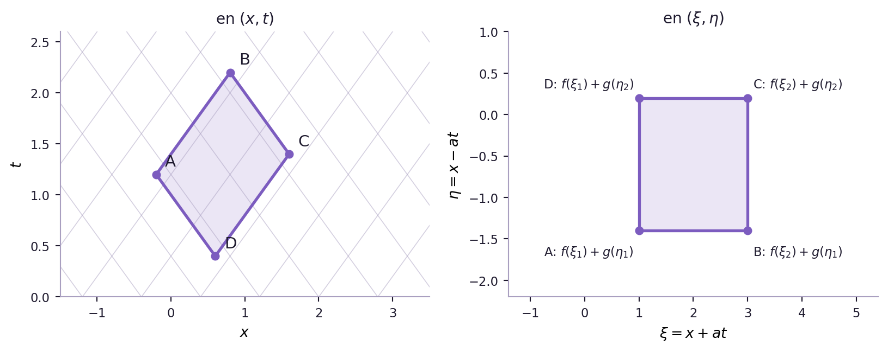
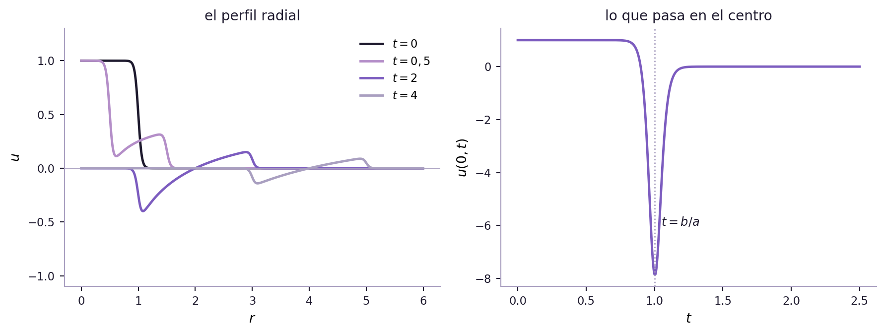

Este capítulo es la continuación directa del Capítulo 8, y lo da por leído: sobre todo la clasificación (Sección 8.9), las formas canónicas (Sección 8.10.1) y la separación de variables en la cuerda (Sección 8.14.3). Además se usan las series de Fourier (Capítulo 3), la función de Green en una variable (Capítulo 4), la delta de Dirac (Capítulo 5) y la transformada de Fourier (Capítulo 7). Para la última sección hace falta cálculo vectorial: divergencia, rotor y el teorema de la divergencia. Cada sección avisa al empezar qué necesita.
9.1 Todo lo que sabés del mundo te llegó por una onda
Contá los segundos entre el relámpago y el trueno, dividí por tres, y tenés a cuántos kilómetros cayó el rayo. Es una regla que se aprende de chico y que casi nadie se detiene a mirar. Pero para que funcione tienen que pasar tres cosas, y las tres son el tema de este capítulo.
Uno: el sonido tarda. Si el aire respondiera de inmediato en todos lados, el trueno llegaría junto con el relámpago y la regla no serviría para nada. La perturbación viaja a una velocidad finita, unos \(343\ \text{m/s}\), y por eso hay un antes y un después de que llegue.
Dos: el sonido llega entero. Un trueno cercano es un estallido seco, no un murmullo que crece despacio. La forma del pulso se conserva durante el viaje: lo que sale del rayo es, con buena aproximación, lo que llega al oído, solo que más débil. Si el aire se comportara como una barra que conduce calor, el estallido se iría desparramando por el camino hasta volverse un rumor sin bordes, y no habría ningún instante que marcar.
Tres: dos sonidos no se mezclan. Durante la tormenta se sigue oyendo la voz de quien está al lado, y se la oye igual que siempre. El trueno y la voz se suman en el aire y el oído los separa sin esfuerzo. Eso es la superposición del Sección 8.5.1: el aire, a las amplitudes de la vida diaria, es un medio lineal.
Velocidad finita, forma que se conserva, superposición. Esas tres propiedades juntas son la firma de la ecuación de onda,
\[
u_{tt} = a^2\,u_{xx},
\tag{9.1}\]
y de la familia a la que pertenece: las ecuaciones hiperbólicas. En el Sección 8.1.3 ya vimos, en un solo gráfico, cómo se distingue de las otras dos: la de onda transporta los quiebres intactos, la del calor los borra al instante, la de Laplace ni siquiera tiene tiempo. Este capítulo se dedica entero a la primera.
9.1.1 Lo que viaja a velocidad finita
La lista de cosas que obedecen 9.1, o su versión en más dimensiones, es casi la lista de todo lo que sabemos del mundo sin tocarlo.
La luz, y con ella todo el espectro electromagnético. En 1865 Maxwell escribió las ecuaciones del campo eléctrico y magnético, las combinó y le salió una ecuación de onda. La velocidad de esas ondas no la eligió él: salía de dos constantes medidas en el laboratorio con imanes y capacitores, y daba el valor medido para la velocidad de la luz. Así se descubrió qué es la luz. Lo rehacemos en el Sección 9.10.
El sonido, en el aire, en el agua y en los sólidos.
Las cuerdas y las membranas de los instrumentos musicales.
Los terremotos. Un sismo emite dos ondas de volumen distintas: las P, de compresión, más rápidas, y las S, de corte, más lentas. Las S no atraviesan los líquidos, y la «zona de sombra» que eso deja del otro lado del planeta es la prueba de que el núcleo externo de la Tierra es líquido. Nadie bajó a mirarlo: se dedujo de dónde no llegaban las ondas.
La corriente en un cable largo, que viaja como una onda de tensión (Sección 9.11).
El espacio-tiempo. Lejos de las fuentes, las ecuaciones de Einstein linealizadas dicen que las perturbaciones de la geometría se propagan como ondas a la velocidad de la luz. El 14 de septiembre de 2015 los dos detectores de LIGO registraron una: la había emitido la fusión de dos agujeros negros a más de mil millones de años luz.
LIGO Lab Caltech : MIT — «The Sound of Two Black Holes Colliding». La señal de la primera onda gravitacional detectada, pasada a sonido. Dura una fracción de segundo: el «chirrido» que sube de tono es el final de la espiral de los dos agujeros negros, cada vez más rápidos, hasta que se funden. Lo que registró el detector es la amplitud de una onda que viajó más de mil millones de años obedeciendo, lejos de las fuentes, una ecuación de onda.
AdvertenciaNo todo lo que ondula es la ecuación de onda
Las olas del mar ondulan, pero no cumplen 9.1: las largas viajan más rápido que las cortas, y por eso un paquete de olas se desarma por el camino. A eso se lo llama dispersión, y lo tratamos al final del capítulo (Sección 9.11). La función de onda de la mecánica cuántica tampoco: la ecuación de Schrödinger es de primer orden en el tiempo y tiene, a los ojos del Sección 8.9, la estructura de una parabólica. «Hiperbólica» no es «que oscila»; es que la información viaja a velocidad finita.
9.1.2 El trueno y el sismógrafo
La regla del trueno tiene una versión profesional. Un sismógrafo no ve el sismo: ve llegar primero las ondas P y, un rato después, las S. Como las dos salieron juntas del foco, la demora entre ellas crece con la distancia, exactamente como la demora entre el relámpago y el trueno.
Figura 9.1: La misma idea en dos escalas. Cada recta es el frente de una onda en el plano distancia–tiempo: la pendiente es la inversa de la velocidad. Izquierda: el relámpago y el trueno. La recta de la luz es prácticamente horizontal —llega en microsegundos—, así que la demora es, en la práctica, el tiempo que tarda el sonido: unos tres segundos por kilómetro. Derecha: un sismo registrado a 84 km. Las ondas P (\(6\) km/s) y las S (\(3{,}5\) km/s) salieron juntas del foco, y la separación vertical entre las dos rectas es la demora que ve el sismógrafo. Abajo, un sismograma sintético en esa estación: primero llega la P, más débil, y diez segundos después la S.
Un sismógrafo registra la llegada de las ondas S diez segundos después que la de las P. Tomando \(v_P = 6\ \text{km/s}\) y \(v_S = 3{,}5\ \text{km/s}\), ¿a cuántos kilómetros está el foco? Respondé en kilómetros, redondeado.
Si el foco está a distancia \(d\), las dos ondas llegan en \(d/v_P\) y \(d/v_S\), así que \[
\Delta t = \frac{d}{v_S} - \frac{d}{v_P} = d\left(\frac{1}{v_S}-\frac{1}{v_P}\right)
\quad\Longrightarrow\quad
d = \frac{\Delta t}{1/v_S - 1/v_P} = \frac{10}{0{,}2857 - 0{,}1667} \approx 84\ \text{km}.
\] Una sola estación da la distancia pero no la dirección: el foco puede estar en cualquier punto de una circunferencia de radio \(84\) km. Con tres estaciones, las tres circunferencias se cortan en un punto. Es la triangulación con la que se localiza un sismo, y es la regla del trueno con dos ondas lentas en vez de una lenta y una instantánea.
Las tres propiedades del principio reaparecen en el cálculo: la velocidad finita es lo que hace que haya un instante de llegada; que la forma se conserve es lo que permite reconocer cuándo llegó; y la superposición es lo que deja ver las dos llegadas separadas en la misma traza.
9.1.3 La pregunta del capítulo
Todo lo que sigue responde una sola pregunta:
Se sabe cómo empieza algo —su forma y su velocidad en el instante inicial—, cómo está sujeto en los bordes y qué fuerzas actúan sobre él. ¿Cómo sigue?
Y para responderla hay tres herramientas, que ya conocemos del Capítulo 8:
Las características, que siguen a la onda viajando con ella. Son el método natural cuando no hay bordes, o cuando los bordes están lejos. Dan la fórmula de d’Alembert.
Los modos, que descomponen el movimiento en vibraciones que no viajan sino que laten en su lugar. Son el método natural cuando hay bordes. Dan la separación de variables.
La función de Green, que responde a un golpe puntual y después suma. Es el método natural cuando hay fuentes. Da los potenciales retardados del electromagnetismo.
Las tres dan la misma respuesta cuando se pueden usar las tres, y buena parte del capítulo es ver por qué dan la misma respuesta: en el Sección 9.6 vamos a ver que una cuerda con extremos fijos se puede resolver con ondas que rebotan o con modos que laten, y que las dos imágenes son la misma cuenta mirada de dos lados.
9.2 Qué traemos del capítulo 8 y qué falta
La ecuación de onda no es nueva. En el Capítulo 8 apareció una y otra vez, siempre como ejemplo de otra cosa: de una hiperbólica, de una forma canónica, de un problema separable. Acá pasa a ser el tema. Antes de arrancar conviene ordenar qué ya tenemos, qué le falta a lo que tenemos, y qué vamos a agregar.
9.2.1 Lo que ya vimos
Se recuerda, no se repite. Si algo de esta lista no te suena, volvé a la sección indicada antes de seguir.
Tabla 9.1: Lo que el Capítulo 8 ya dejó hecho sobre la ecuación de onda.
La respuesta a una fuente puntual que oscila es una onda esférica \(e^{ikr}/r\).
9.2.2 Lo que falta, y por qué importa
Mirada entera, la lista de arriba tiene tres agujeros. Todos tienen la misma forma: resolvimos el problema en un mundo más limpio que el real.
No hay bordes. d’Alembert resuelve la cuerda infinita. La separación de variables resuelve la cuerda con extremos fijos. Pero no vimos qué pasa en un borde, qué le pasa a una onda cuando llega a él, ni cómo se pasa de una imagen a la otra. Una cuerda de guitarra real es las dos cosas a la vez: una onda que viaja y rebota, y un conjunto de modos que suenan.
No hay fuentes. Salvo la cuerda cargada de golpe, todas las ondas del Capítulo 8 se movían solas, a partir de lo que tenían en el instante inicial. Pero las ondas interesantes las fabrica algo: una antena, un parlante, una mano que sigue empujando. En el Ejemplo 8.18 quedó prometida la fórmula de d’Alembert con fuente; hay que escribirla.
No hay garantías. En el Sección 8.6 dijimos que un problema tiene que tener una única solución que dependa con continuidad de los datos. Para la ecuación de onda todavía no lo probamos: la fórmula de d’Alembert da una solución, pero ¿es la única? ¿Y si la cuerda no es homogénea, y no hay fórmula?
AdvertenciaUna convención: la velocidad se llama \(a\)
En el Capítulo 8 la velocidad de la onda aparece a veces como \(c\) y a veces como \(a\). En este capítulo es siempre \(a\), como en el libro de la cátedra, y \(c\) queda reservada para la velocidad de la luz, que aparece en el Sección 9.10.
9.3 De dónde sale la ecuación
En el Sección 8.1.1 vimos nacer tres ecuaciones de primer orden en el tiempo a partir de una ley de conservación. La de onda es de segundo orden en el tiempo, y eso ya dice de dónde viene: no de un balance de cantidad sino de un balance de fuerzas. Es la segunda ley de Newton, escrita para un medio continuo.
9.3.1 La cuerda
Una cuerda tensa, sujeta en los extremos, en reposo sobre el eje \(x\). Se la aparta un poco y se la suelta. Llamamos \(u(x,t)\) al desplazamiento vertical del punto que en reposo estaba en \(x\).
Para escribir la ecuación hay que decir qué se supone. Son cuatro cosas, y conviene tenerlas a la vista porque cada una, cuando falla, da una ecuación distinta:
Los puntos se mueven solo en vertical. No hay desplazamiento a lo largo de la cuerda.
La cuerda es perfectamente flexible. No resiste la flexión: la única fuerza interna es la tensión, y va tangente a la cuerda.
Las pendientes son chicas, \(|u_x| \ll 1\). Todo lo que sea de orden \(u_x^2\) se desprecia.
La densidad lineal \(\rho(x)\) y la tensión \(T\) son las de la cuerda en reposo.
Figura 9.2: Un pedacito de cuerda entre \(x\) y \(x+\Delta x\), muy exagerado. Sobre cada extremo tira el resto de la cuerda con una fuerza de módulo \(T\) tangente a la curva. Las componentes horizontales, \(T\cos\theta\), son casi iguales y se cancelan. Las verticales, \(T\operatorname{sen}\theta\), no: si la cuerda está curvada, un extremo tira más hacia abajo que lo que el otro tira hacia arriba, y la diferencia es lo que acelera el pedacito. Por eso la fuerza neta es proporcional a la curvatura, y no a la pendiente.
Sobre el pedacito \([x, x+\Delta x]\) actúan las tensiones de los dos lados, cada una tangente a la cuerda. Si \(\theta(x)\) es el ángulo de la tangente, las componentes horizontales son \(T\cos\theta \approx T\) en los dos extremos, con signos opuestos, y se cancelan: por eso el pedacito no se mueve en horizontal, que es la hipótesis 1. Las verticales son \(T\operatorname{sen}\theta\), y como la pendiente es chica,
La fuerza vertical neta es entonces \(T\,u_x(x+\Delta x,t) - T\,u_x(x,t)\). Si además actúa una fuerza externa de densidad \(F(x,t)\) —fuerza por unidad de longitud—, el pedacito de masa \(\rho\,\Delta x\) cumple
Dividiendo por \(\Delta x\) y haciendo \(\Delta x\to 0\),
\[
\rho\,u_{tt} = T\,u_{xx} + F .
\tag{9.2}\]
Con \(\rho\) constante y llamando
\[
a = \sqrt{\frac{T}{\rho}}, \qquad f = \frac{F}{\rho},
\tag{9.3}\]
queda \(u_{tt} = a^2u_{xx} + f\), que es exactamente la ecuación (9.1) del libro de la cátedra.
ImportanteQué dice la ecuación, sin símbolos
La aceleración de cada punto es proporcional a la curvatura de la cuerda en ese punto. Donde la cuerda es cóncava hacia abajo —la cresta de una joroba— la tensión la empuja hacia abajo; donde es cóncava hacia arriba, hacia arriba. Un tramo recto, por inclinado que esté, no siente fuerza neta: tira lo mismo de los dos lados.
Y \(a\) tiene unidades de velocidad: \(\sqrt{\text{N}/(\text{kg/m})} = \text{m/s}\). Más tensión, ondas más rápidas; más masa, ondas más lentas.
La curva oscura es la forma de la cuerda en un instante. Las flechas son la fuerza por unidad de
longitud que la tensión hace en cada punto, T uxx, dibujadas siempre con la misma escala.
Achicá el ancho de la joroba: la curvatura crece como 1/ancho² y
las flechas se disparan. Por eso una perturbación angosta se mueve mucho más rápido que una
ancha de la misma altura. Con asimetría le agregás una rampa recta a la
forma. Fijate que la rampa no cambia ninguna flecha, porque un tramo recto no tiene curvatura.
La cuerda más aguda de una guitarra es de acero, con densidad lineal \(\rho = 0{,}40\ \text{g/m}\), y está tensada con \(T = 70\ \text{N}\). ¿A qué velocidad viajan las ondas por ella? Respondé en m/s.
Pasando todo a unidades del SI, \(\rho = 4{,}0\times 10^{-4}\ \text{kg/m}\), y \[a = \sqrt{\frac{T}{\rho}} = \sqrt{\frac{70}{4\times10^{-4}}} = \sqrt{175\,000} \approx 418\ \text{m/s}.\] Es más rápido que el sonido en el aire, y no hay contradicción: son dos medios distintos. La cuerda empuja el aire, y lo que llega al oído es una onda en el aire, que viaja a \(343\ \text{m/s}\) con la frecuencia que le impuso la cuerda.
Si se duplica la tensión de una cuerda sin cambiar nada más, las ondas viajan…
el doble de rápido
\(\sqrt 2 \approx 1{,}41\) veces más rápido
a la misma velocidad, porque la masa no cambió
la mitad de rápido
Por 9.3, \(a\propto\sqrt T\). Y como en el Sección 8.14.3 vimos que las frecuencias de la cuerda son \(\omega_n = n\pi a/l\), la nota sube en el mismo factor \(\sqrt2\). En música eso es media octava, seis semitonos. Por eso se afina una guitarra girando las clavijas: se cambia \(T\) para cambiar \(a\).
NotaCuándo deja de valer
Cada hipótesis tiene su precio. Si se abandona la 3 —amplitudes grandes— el \(\operatorname{sen}\theta\approx u_x\) deja de valer y la ecuación se vuelve no lineal: la tensión misma cambia al estirarse la cuerda, y los modos empiezan a intercambiar energía. Si se abandona la 2 —la cuerda tiene rigidez— aparece un término de cuarto orden, \(-EI\,u_{xxxx}\), y la cuerda se va pareciendo a la viga del Sección 8.14.5: los armónicos altos quedan un poco más agudos de lo que deberían. Los afinadores de piano lo conocen bien, porque las cuerdas graves del piano son gruesas y rígidas.
9.3.2 Si la cuerda no es homogénea
Si la densidad cambia de un punto a otro —una cuerda que se va afinando— la cuenta es la misma, con \(\rho(x)\) en lugar de \(\rho\). Y si además la cuerda es un medio elástico cuya rigidez cambia, como una barra hecha de materiales distintos, la tensión se reemplaza por una rigidez \(k(x)\) que queda adentro de la derivada, porque lo que se equilibra son los flujos de fuerza a los dos lados del pedacito:
Esta es la ecuación del Teorema 9.1.1 de González, y es la que vamos a usar para demostrar la unicidad en el Sección 9.4. Fijate que el operador de la derecha es el de Sturm–Liouville del Capítulo 2: no es casualidad, y es la razón por la que la separación de variables funciona también en medios inhomogéneos.
Definición 9.1 (Ecuación de onda) Se llama ecuación de onda en \(n\) dimensiones espaciales a
donde \(a>0\) es la velocidad de propagación y \(f\) la fuente o forzante. Es homogénea si \(f\equiv0\) y no homogénea en caso contrario. Con \(n=1\) es la ecuación de la cuerda; con \(n=2\), la de la membrana; con \(n=3\), la del sonido y la de la luz.
La versión con coeficientes variables, 9.4, se llama ecuación de onda en un medio inhomogéneo.
9.3.3 La misma ecuación en otros medios
Que la cuerda dé 9.1 no sorprende demasiado. Lo que sorprende es que medios que no se parecen en nada den exactamente la misma ecuación. En todos los casos la estructura es la misma: hay una magnitud que acumula inercia y otra que acumula una fuerza restitutiva, y la velocidad es la raíz del cociente entre la rigidez y la inercia.
Tabla 9.3: Las analogías físicas del temario de la cátedra. En cada fila, \(a = \sqrt{\text{rigidez}/\text{inercia}}\). Los valores son órdenes de magnitud.
Medio
Incógnita \(u\)
Rigidez
Inercia
\(a\)
Valor típico
Cuerda
desplazamiento transversal
tensión \(T\)
densidad lineal \(\rho\)
\(\sqrt{T/\rho}\)
\(100\)–\(500\) m/s
Barra, vibración longitudinal
desplazamiento a lo largo de la barra
módulo de Young \(E\)
densidad \(\rho\)
\(\sqrt{E/\rho}\)
acero: \(5000\) m/s
Gas (sonido)
presión o densidad, respecto del reposo
\(\gamma p_0\)
densidad \(\rho_0\)
\(\sqrt{\gamma p_0/\rho_0}\)
aire: \(343\) m/s
Línea de transmisión
tensión eléctrica \(V\)
\(1/C\) (capacidad por metro)
\(L\) (inductancia por metro)
\(1/\sqrt{LC}\)
coaxial: \(2\times10^8\) m/s
Membrana
desplazamiento transversal
tensión por unidad de longitud \(\tau\)
densidad superficial \(\sigma\)
\(\sqrt{\tau/\sigma}\)
parche de tambor: \(100\) m/s
Vacío
cada componente de \(\mathbf E\) y \(\mathbf B\)
\(1/\varepsilon_0\)
\(\mu_0\)
\(1/\sqrt{\varepsilon_0\mu_0}\)
\(3\times10^8\) m/s
Una cuenta de control con la tercera fila: el aire tiene \(\gamma = 1{,}4\), \(p_0 = 101\,325\ \text{Pa}\) y \(\rho_0 = 1{,}2\ \text{kg/m}^3\), así que \(a = \sqrt{1{,}4\cdot 101\,325/1{,}2} \approx 344\ \text{m/s}\). Es el número del trueno. El \(\gamma\) está porque las compresiones del sonido son tan rápidas que el aire no llega a intercambiar calor, y se comprime adiabáticamente. Newton, en 1687, puso \(p_0\) sin el \(\gamma\) —compresión a temperatura constante— y le dio un 15 % menos. El error lo corrigió Laplace más de un siglo después.
Ejercicio 9.1 Deducir la ecuación de las oscilaciones longitudinales de una barra elástica de sección \(S\), densidad \(\rho\) y módulo de Young \(E\), siendo \(u(x,t)\) el desplazamiento, a lo largo de la barra, del punto que en reposo estaba en \(x\). Usar la ley de Hooke: la tensión normal —fuerza por unidad de área— es \(E\) por el estiramiento relativo.
Después, decir qué condición de contorno corresponde a un extremo libre y cuál a un extremo empotrado. (Esto hace falta para los problemas 9.7 y 9.8 de la cátedra.)
TipSolución
El estiramiento. El pedacito que en reposo ocupaba \([x, x+\Delta x]\) ahora ocupa \([x+u(x,t),\ x+\Delta x + u(x+\Delta x,t)]\). Su largo pasó de \(\Delta x\) a \(\Delta x + u(x+\Delta x,t) - u(x,t)\), así que el estiramiento relativo es \[\frac{u(x+\Delta x,t)-u(x,t)}{\Delta x} \;\longrightarrow\; u_x .\]
La fuerza. Por Hooke, la sección en \(x\) está sometida a una tensión \(E\,u_x\) y la fuerza que el material de la derecha hace sobre el de la izquierda es \(N(x,t) = E\,S\,u_x(x,t)\).
Newton. El pedacito tiene masa \(\rho S\Delta x\), y sobre él actúan \(N(x+\Delta x)\) hacia la derecha y \(N(x)\) hacia la izquierda: \[\rho S\,\Delta x\;u_{tt} = E S\big[u_x(x+\Delta x,t) - u_x(x,t)\big]
\quad\Longrightarrow\quad u_{tt} = \frac{E}{\rho}\,u_{xx}, \qquad a = \sqrt{E/\rho}.\] Es la misma ecuación que la cuerda, aunque el movimiento es a lo largo de la barra y no transversal. Lo que cumple el papel de la tensión es la rigidez del material.
Los bordes. Un extremo empotrado no se mueve: \(u = 0\), condición de Dirichlet. En un extremo libre no hay nada que haga fuerza sobre la sección final, así que la fuerza interna tiene que anularse ahí: \(E S\,u_x = 0\), o sea \(u_x = 0\), condición de Neumann. Físicamente: el extremo libre se mueve todo lo que quiere, pero no está estirado ni comprimido.
Los números. Para el acero, \(E \approx 200\ \text{GPa}\) y \(\rho\approx 7850\ \text{kg/m}^3\), así que \(a\approx 5000\ \text{m/s}\): unas quince veces la velocidad del sonido en el aire. Por eso se oye el tren por el riel mucho antes de oírlo por el aire.
9.3.4 El problema: qué datos hacen falta
La ecuación sola no determina el movimiento: una misma cuerda puede hacer infinitas cosas distintas. Lo que falta es lo que el Sección 8.6.3 ya anticipó para una hiperbólica: dos condiciones iniciales y una condición en cada borde.
Definición 9.2 (Problema mixto de la cuerda) Hallar \(u(x,t)\), definida y de clase \(C^2\) en \(0\le x\le l\), \(t\ge 0\), tal que
Se llama mixto porque combina condiciones iniciales y de contorno.
Hacen falta dos condiciones iniciales porque la ecuación es de segundo orden en el tiempo: es lo mismo que en la mecánica de una partícula, donde para predecir la trayectoria hay que dar la posición y la velocidad. Acá hay que darlas en cada punto de la cuerda: la forma inicial \(\varphi\) y la distribución de velocidades \(\psi\).
En los bordes, en cambio, alcanza con una condición en cada extremo, y la física decide cuál:
Tabla 9.4: Condiciones de contorno de la cuerda, leídas físicamente. Los signos corresponden al extremo derecho, \(x=l\); en el izquierdo cambian, porque la tensión que actúa sobre el extremo tira hacia el otro lado.
El extremo…
Condición
Nombre
Por qué
está atado a un punto fijo
\(u = 0\)
Dirichlet
no se mueve
se mueve de una forma dada
\(u = \mu(t)\)
Dirichlet no homogénea
alguien lo mueve a mano
es un anillo sin masa que desliza por una varilla lisa
\(u_x = 0\)
Neumann
la varilla no hace fuerza vertical, así que la tensión tiene que llegar horizontal
se tira con una fuerza vertical dada \(\nu(t)\)
\(T u_x = \nu(t)\)
Neumann no homogénea
la componente vertical de la tensión equilibra la fuerza
está atado a un resorte de constante \(\kappa\)
\(T u_x = -\kappa u\)
Robin
la tensión equilibra la fuerza del resorte
La tercera fila es la del problema 9.6 de la cátedra, y vale la pena entenderla: si el anillo no tiene masa, cualquier fuerza vertical neta sobre él le daría aceleración infinita. Así que la fuerza vertical neta es cero, y como la varilla lisa solo empuja en horizontal, la componente vertical de la tensión, \(T u_x\), tiene que ser cero. Un extremo libre llega siempre horizontal.
9.3.5 Tres casos límite
El problema mixto 9.6 es el caso general. Pero hay situaciones en que parte de los datos todavía no importan, y el problema se simplifica. La escala que decide es el tiempo que tarda la onda en recorrer la cuerda, \(l/a\).
Tiempos cortos, lejos de los bordes: el problema de Cauchy. Si \(t \ll l/a\), a un punto del interior todavía no le llegó ninguna noticia de los extremos, y la cuerda se comporta como si fuera infinita. Solo quedan las condiciones iniciales: \[u_{tt} = a^2u_{xx} + f,\quad -\infty<x<\infty;\qquad u(x,0)=\varphi(x),\quad u_t(x,0)=\psi(x).\] Lo resuelve la fórmula de d’Alembert: Sección 9.5.
Cerca de un borde, lejos del otro: la cuerda semi-infinita. Se estudia lo que pasa cerca de \(x=0\) mientras la influencia de \(x=l\) no llega: \[u(0,t) = \mu(t),\quad t\ge0;\qquad u(x,0)=\varphi(x),\quad u_t(x,0)=\psi(x),\quad 0\le x<\infty .\] Lo resolvemos con reflexiones en el Sección 9.6.
Tiempos largos: el régimen permanente. Si \(t\gg l/a\), se supone que el sistema perdió memoria de las condiciones iniciales y solo importan los bordes y las fuentes. Es la respuesta estacionaria a un forzante periódico, y la tratamos en el Sección 9.7.
AdvertenciaOjo con el caso 3
Una cuerda ideal no pierde nunca la memoria: en 9.2 no hay nada que disipe energía, y en el Sección 9.4 vamos a demostrar que la energía se conserva exactamente. Si se la pulsa y se la deja, suena para siempre. El caso 3 tiene sentido solo cuando hay algo de rozamiento, aunque sea muy poco: alcanza para que, después de mucho tiempo, las oscilaciones libres se hayan apagado y quede solo la respuesta a lo que la sigue forzando. Lo precisamos en el Sección 9.11.
Una cuerda de \(l = 1\ \text{m}\) con \(a = 400\ \text{m/s}\) se golpea en el medio. ¿Cuánto tarda el punto medio en «enterarse» de que la cuerda tiene extremos?
\(2{,}5\) ms: lo que tarda la perturbación en ir hasta un extremo y volver
\(1{,}25\) ms: lo que tarda la perturbación en llegar a un extremo
Nunca: los extremos están fijos y no hacen nada
Nada: desde el primer instante siente los extremos
El punto medio se entera de que hay bordes cuando le llega una onda reflejada en uno de ellos. La perturbación tiene que ir del centro al extremo (\(0{,}5\) m) y volver (\(0{,}5\) m): un metro a \(400\) m/s, o sea \(2{,}5\) ms. En \(1{,}25\) ms la onda llega al extremo, pero el rebote todavía tiene que volver. Y la última opción es la de la ecuación del calor, que no tiene velocidad finita.
La moraleja es la escala: milisegundos. En una cuerda de guitarra el caso 1 se termina casi de inmediato, y el sonido que se oye es el de los modos.
9.4 Energía y unicidad
Ya tenemos el problema 9.6. Antes de resolverlo conviene saber si tiene sentido resolverlo: si los datos determinan una sola solución, o si podría haber dos movimientos distintos compatibles con la misma forma inicial, la misma velocidad inicial y los mismos bordes. Es el pedido de unicidad de Hadamard (Definición 8.9).
González enuncia el resultado como Teorema 9.1.1 y remite la demostración a otro libro. Acá la hacemos, porque es corta y porque la herramienta que usa, la energía, es de las que más rinden en todo el curso: sirve cuando no hay ninguna fórmula para la solución.
9.4.1 La energía de una cuerda
Una cuerda que vibra tiene dos formas de guardar energía. Cada pedacito se mueve, y eso es energía cinética: \(\tfrac12(\rho\,dx)\,u_t^2\). Y la cuerda está más estirada que en reposo, y eso es energía potencial elástica: el pedacito que en reposo medía \(dx\) ahora mide \[
\sqrt{dx^2 + du^2} = \sqrt{1+u_x^2}\;dx \approx \Big(1 + \tfrac12u_x^2\Big)dx ,
\] así que se estiró \(\tfrac12u_x^2\,dx\), y para estirarlo contra la tensión \(T\) hubo que hacer un trabajo \(\tfrac12T\,u_x^2\,dx\). En un medio con rigidez variable, \(T\) se reemplaza por \(k(x)\).
Definición 9.3 (Energía de la cuerda) Para una solución de 9.4 en \([0,l]\) se llama energía a
Demostración. Derivando bajo el signo integral, cosa que se puede hacer porque \(u\) es \(C^2\), \[
\frac{dE}{dt} = \int_0^l \big[\rho\,u_t\,u_{tt} + k\,u_x\,u_{xt}\big]\,dx .
\] En el primer término reemplazamos \(\rho\,u_{tt}\) usando la ecuación, \(\rho u_{tt} = (k u_x)_x + F\): \[
\frac{dE}{dt} = \int_0^l \big[u_t\,(k u_x)_x + k\,u_x\,u_{xt}\big]\,dx + \int_0^l F\,u_t\,dx .
\] El corchete es la derivada de un producto: \(\partial_x\big(k\,u_x\,u_t\big) = (k u_x)_x\,u_t + k\,u_x\,u_{tx}\). Así que la primera integral es \(\big[k\,u_x\,u_t\big]_0^l\), por el teorema fundamental del cálculo.
Cada término de 9.8 tiene una lectura física, y conviene decirla porque es la que se recuerda:
\(\int F\,u_t\,dx\) es la potencia de la fuerza externa: fuerza por velocidad, sumada sobre toda la cuerda.
\(k\,u_x\,u_t\) en un extremo es la potencia que entra o sale por el borde: la fuerza que la cuerda hace sobre lo que la sujeta (\(\pm k u_x\), la componente vertical de la tensión) por la velocidad del extremo.
Si no hay fuerza externa y cada extremo está fijo o libre, los dos términos se anulan: en un extremo fijo, \(u=0\) para todo \(t\) y entonces \(u_t=0\); en un extremo libre, \(u_x=0\). Queda
\[
\frac{dE}{dt} = 0 .
\]
ImportanteLa energía de una cuerda ideal se conserva
Sin fuerzas externas y con extremos fijos o libres, la energía total no cambia nunca. Lo que cambia es cómo se reparte: entre cinética y potencial, y entre un lugar de la cuerda y otro. Es la razón por la que una cuerda ideal no deja de sonar, y la razón del recuadro «Ojo con el caso 3» del Sección 9.3.5.
Una cuerda de largo 1, con a = 1 y extremos fijos, pulsada en un punto y soltada. Arriba,
la forma. En el medio, las dos densidades de energía a lo largo de la cuerda: la cinética
(violeta) y la potencial (verde). A la derecha, las dos integrales y su suma.
Mové t despacio. Las densidades son escalones que viajan: la energía está
concentrada donde está la pendiente y la velocidad, y se mueve con las esquinas. Las barras de
cinética y potencial suben y bajan, pero la barra de la suma no se mueve. En t = 0 y en
t = 1 toda la energía es potencial, porque la cuerda está quieta. Probá varios
dónde se pulsa: pulsada cerca del extremo, la cuerda guarda más energía, porque
un tramo queda muy empinado.
9.4.3 El teorema de unicidad
Teorema 9.1 (Unicidad del problema mixto (Teorema 9.1.1 de González)) Supongamos que
los coeficientes \(\rho(x)\) y \(k(x)\) son continuos en \([0,l]\), con \(\rho(x)>0\) y \(k(x)>0\);
se busca \(u\) de clase \(C^2\) en \([0,l]\times[0,\infty)\).
Entonces existe a lo sumo una función \(u(x,t)\) que satisface
con las condiciones iniciales \(u(x,0) = \varphi(x)\), \(u_t(x,0) = \psi(x)\) y las de contorno \(u(0,t) = \mu_1(t)\), \(u(l,t) = \mu_2(t)\).
Demostración. Supongamos que hay dos, \(u_1\) y \(u_2\), y llamemos \(w = u_1 - u_2\). Como la ecuación es lineal, \(w\) cumple la ecuación sin fuente —las \(F\) se restan y se cancelan—, con datos nulos: \[
\rho\,w_{tt} = (k\,w_x)_x, \qquad w(x,0) = 0,\quad w_t(x,0) = 0, \qquad w(0,t) = w(l,t) = 0 .
\] Sea \(E(t)\) la energía de \(w\). Como los extremos están fijos y no hay fuente, por Proposición 9.1\(E\) es constante. Y en \(t=0\) vale cero: \(w_t(x,0) = 0\) por la segunda condición inicial, y \(w_x(x,0) = 0\) porque \(w(x,0)\equiv0\) se puede derivar en \(x\). Entonces \[
E(t) = \int_0^l \Big[\tfrac12\rho\,w_t^2 + \tfrac12 k\,w_x^2\Big]dx = 0 \qquad\text{para todo } t\ge0 .
\] El integrando es continuo y no negativo, y su integral es cero: tiene que ser idénticamente cero. Como \(\rho>0\) y \(k>0\), eso obliga a \(w_t\equiv0\) y \(w_x\equiv0\). Una función con las dos derivadas parciales nulas es constante, y como \(w(x,0)=0\), la constante es cero. Luego \(u_1 = u_2\).
La demostración es corta, pero cada hipótesis está usada en un lugar preciso. Vale la pena verlo con la tabla del Sección 8.7.5 en mente:
Tabla 9.5: Qué hace cada hipótesis del Teorema 9.1.
Hipótesis
Dónde se usa
Qué pasa si falta
La ecuación es lineal
la diferencia de dos soluciones es solución de la homogénea
en una no lineal, \(u_1-u_2\) no cumple ninguna ecuación útil
\(u\) es \(C^2\)
para derivar bajo la integral e integrar por partes
con quiebres, como las cuerdas pulsadas, hay que pasar a soluciones débiles (Sección 8.6.4)
\(\rho > 0\)
para concluir \(w_t = 0\) de \(E = 0\)
un pedazo sin masa podría moverse sin guardar energía cinética
\(k > 0\)
para concluir \(w_x = 0\) de \(E = 0\)
un pedazo sin rigidez podría deformarse sin guardar energía potencial
con un borde que entrega energía a su antojo, la cuenta no cierra
TipPor qué este es un método y no un truco
No resolvimos nada. No hay fórmula para la solución de 9.4 con \(\rho\) y \(k\) cualesquiera, y sin embargo sabemos que si existe, es una sola. El argumento funciona igual en dos y tres dimensiones, cambiando \(u_x^2\) por \(|\nabla u|^2\) y el teorema fundamental del cálculo por el teorema de la divergencia. Y en el capítulo 10 lo vamos a repetir para la ecuación del calor, donde la «energía» \(\int u^2\) ya no se conserva sino que decrece: esa diferencia es la irreversibilidad del calor.
El extremo \(x=l\) de una cuerda está unido a un amortiguador: un pistón en aceite que hace una fuerza vertical proporcional a la velocidad, en contra del movimiento. La condición de contorno es \(T\,u_x(l,t) = -\beta\,u_t(l,t)\) con \(\beta>0\), y el otro extremo está fijo. ¿Qué pasa con la energía?
Se conserva, como siempre que no hay fuerza externa
Decrece: \(dE/dt = -\beta\,u_t(l,t)^2 \le 0\)
Crece, porque el amortiguador empuja la cuerda
Depende del signo de \(u_x(l,t)\)
En 9.8, con \(F = 0\) y el extremo izquierdo fijo, queda solo el término del borde derecho: \(T\,u_x(l,t)\,u_t(l,t) = -\beta\,u_t(l,t)^2\). Es un cuadrado con signo menos: la energía nunca crece y baja cada vez que el extremo se mueve. Es lo que hace el amortiguador: convierte energía de la cuerda en calor del aceite.
Hay un valor especial, \(\beta = \sqrt{T\rho}\), en el que el amortiguador se traga la onda entera sin reflejar nada: la cuerda se comporta como si siguiera infinitamente más allá de \(x=l\). Lo vemos en el Sección 9.6.
Ejercicio 9.2 El extremo \(x=l\) de una cuerda homogénea está atado a un resorte de constante \(\kappa>0\), de modo que \(T\,u_x(l,t) = -\kappa\,u(l,t)\), y el extremo \(x=0\) está fijo. No hay fuerza externa.
Mostrar que la energía de la cuerda no se conserva, pero que \(\;\mathcal E(t) = E(t) + \tfrac12\,\kappa\,u(l,t)^2\;\) sí. Interpretar el término agregado.
Deducir que el problema con esta condición de contorno también tiene a lo sumo una solución.
TipSolución
a) Por 9.8, con \(F = 0\) y \(u_t(0,t) = 0\), \[
\frac{dE}{dt} = T\,u_x(l,t)\,u_t(l,t) = -\kappa\,u(l,t)\,u_t(l,t) = -\frac{d}{dt}\Big[\tfrac12\kappa\,u(l,t)^2\Big].
\] Pasando de miembro, \(\dfrac{d}{dt}\Big[E + \tfrac12\kappa\,u(l,t)^2\Big] = 0\).
El término agregado es la energía potencial del resorte. La energía de la cuerda sola no se conserva porque la cuerda y el resorte se la pasan de uno al otro; la del sistema completo sí. Es lo que pasa siempre con el término de borde de 9.8: mide lo que se intercambia con algo que no estamos modelando como parte de la cuerda.
b) Si \(u_1\) y \(u_2\) son dos soluciones, \(w = u_1 - u_2\) cumple la ecuación homogénea con datos iniciales nulos, \(w(0,t) = 0\) y \(T\,w_x(l,t) = -\kappa\,w(l,t)\). Su \(\mathcal E\) se conserva y vale cero en \(t=0\), así que \(\mathcal E(t) = 0\) para todo \(t\). Como \(\kappa > 0\), los tres sumandos son no negativos, y cada uno es cero. En particular la energía de la cuerda es cero, y se concluye igual que en el Teorema 9.1.
El signo importa. Si fuera \(\kappa<0\) —un «resorte» que empuja hacia afuera—, \(\mathcal E\) podría ser cero con la cuerda moviéndose, porque el término del resorte sería negativo, y la demostración no funcionaría.
Ejercicio 9.3 Mostrar que en una onda viajera \(u(x,t) = g(x-at)\) sobre una cuerda homogénea la densidad de energía cinética es igual a la potencial en cada punto y en cada instante. ¿Qué dice esto sobre la energía de las dos mitades en que se parte una cuerda pulsada?
TipSolución
Con \(u = g(x-at)\) se tiene \(u_t = -a\,g'(x-at)\) y \(u_x = g'(x-at)\). Entonces \[
\tfrac12\rho\,u_t^2 = \tfrac12\rho\,a^2\,g'^2 = \tfrac12 T\,g'^2 = \tfrac12 T\,u_x^2 ,
\] usando \(\rho a^2 = T\), que es 9.3. Las dos densidades coinciden punto a punto. Lo mismo pasa con \(g(x+at)\).
Una cuerda pulsada arranca con toda la energía en forma potencial, porque está quieta. Por d’Alembert se parte en dos mitades, \(\tfrac12\varphi(x+at)\) y \(\tfrac12\varphi(x-at)\), que cuando se separan son dos ondas viajeras. Cada una tiene energía potencial \(\tfrac14\) de la inicial —la pendiente es la mitad, y la energía va con el cuadrado— y la misma cantidad de cinética. En total, \(4\times\tfrac14 = 1\): la energía inicial, que era toda potencial, termina mitad cinética y mitad potencial, repartida en partes iguales entre las dos ondas. Es un caso de equipartición.
Ojo: esto vale para un pulso localizado en una cuerda infinita, una vez que las dos mitades se separaron. En la cuerda finita del gráfico interactivo de más arriba el triángulo ocupa toda la cuerda, las mitades se pisan y rebotan todo el tiempo, y la proporción entre cinética y potencial va cambiando: la equipartición no se ve ahí.
9.5 La fórmula de d’Alembert, a fondo
En el Ejercicio 8.26 dedujimos la fórmula a partir de la forma canónica. La cuenta es exactamente la de la sección 9.2.1 de González y no la repetimos. Lo que hacemos acá es lo que quedó pendiente: enunciarla como teorema, con hipótesis, leerla con cuidado, y ver qué más se puede sacar de ella.
AdvertenciaOjo con el libro de la cátedra (sección 9.2.1)
Dos erratas de la deducción que conviene tener marcadas si se estudia de ahí:
Al despejar las variables originales dice \(t = \dfrac{\xi+\eta}{2a}\). Tiene que ser \(t = \dfrac{\xi-\eta}{2a}\), porque \(\xi - \eta = (x+at)-(x-at) = 2at\).
En las fórmulas de \(f_1\), \(f_2\) y en la (9.10) aparece \(\dfrac{1}{2\alpha}\). Es \(\dfrac{1}{2a}\): la \(\alpha\) es la variable de integración y no puede estar afuera de la integral. El mismo error se repite en la sección 9.2.2.
Teorema 9.2 (Fórmula de d’Alembert) Sean \(\varphi\in C^2(\mathbb R)\) y \(\psi\in C^1(\mathbb R)\). El problema de Cauchy
\[
u(x,t) \;=\; \underbrace{\frac{\varphi(x+at)+\varphi(x-at)}{2}}_{u_1:\ \text{la forma se parte}}
\;+\; \underbrace{\frac{1}{2a}\int_{x-at}^{x+at}\psi(s)\,ds}_{u_2:\ \text{la velocidad se acumula}} .
\tag{9.9}\]
Demostración. Unicidad. Toda solución \(C^2\) cumple \(u_{\xi\eta}=0\) en las coordenadas \(\xi=x+at\), \(\eta = x-at\) (Sección 8.10.1), así que es de la forma \(f(x+at)+g(x-at)\). Las condiciones iniciales determinan \(f\) y \(g\) salvo una constante que se cancela (Ejercicio 8.26). No hay lugar para una segunda solución.
Existencia. Hay que verificar que 9.9 cumple la ecuación y las condiciones: es el Ejercicio 9.5.
Con las hipótesis de regularidad pasa algo que vale la pena señalar: \(u\) tiene exactamente la regularidad de los datos, ni más ni menos. Si \(\varphi\) tiene una esquina, \(u\) tiene esquinas; si \(\psi\) tiene un salto, \(u\) tiene esquinas. Eso es lo contrario de la ecuación del calor, que suaviza todo al instante (Sección 8.1.3), y tiene un enunciado preciso:
ImportanteLas singularidades viajan por las características
Si el dato tiene una singularidad —una esquina, un salto— en un punto \(x_0\), la solución tiene singularidades solo sobre las dos características que salen de \(x_0\), \(x = x_0 \pm at\), y en ningún otro lado. Se lee directamente de 9.9: \(\varphi(x\pm at)\) es suave salvo cuando \(x\pm at = x_0\).
Esto es lo que hace que un trueno sea un estallido y no un rumor, y lo que permite medir la distancia a un sismo: el frente, que es la singularidad, llega entero.
9.5.1 Para jugar: la fórmula por dentro
El gráfico de abajo pone la fórmula y su dominio de dependencia uno arriba del otro. Arriba, la cuerda en el instante \(t\). Abajo, el plano \((x,t)\): el punto elegido, las dos características que bajan de él, y el pedazo del eje \(t=0\) del que depende su valor.
Con a = 1. La forma φ inicial es un triángulo centrado en el origen; la
velocidad ψ inicial es un escalón, el golpe de un martillo plano, sobre
[−0,5; 0,5]. Los dos sliders son sus alturas.
Empezá solo con la forma y mové t: el triángulo se parte en dos mitades (punteadas) que se van.
Después poné la forma en cero y la velocidad en uno: no hay nada que se parta, y aparece una meseta
que se ensancha. Abajo, mové x0 y mirá cuándo el triángulo violeta toca el dato: el punto
se mueve solo si su dominio de dependencia pisa algo distinto de cero. Las rectas punteadas
grises encierran el rango de influencia del dato, fuera del cual la cuerda está quieta.
Una cuerda infinita con \(a = 1\) está en reposo y sin deformar, y en \(t=0\) recibe un golpe que le da velocidad \(\psi = 1\) en \([-1, 1]\) y cero en el resto. ¿Cuánto vale \(u(3;\ 2{,}5)\)?
Como \(\varphi = 0\), solo queda la integral: \[u(3;\,2{,}5) = \frac12\int_{3-2{,}5}^{3+2{,}5}\psi(s)\,ds = \frac12\int_{0{,}5}^{5{,}5}\psi(s)\,ds .\] El dominio de dependencia es \([0{,}5;\ 5{,}5]\) y \(\psi\) vale \(1\) solo en \([-1,1]\). Se pisan en \([0{,}5;\ 1]\), de largo \(0{,}5\), así que \(u = \tfrac12\cdot 0{,}5 = 0{,}25\).
Fijate lo que dice esto: el punto \(x=3\) ya se movió, pero no a la altura máxima. Esa altura es \(\tfrac12\int_{-1}^1\psi = 1\) y la alcanzan los puntos cuyo dominio de dependencia contiene entero al intervalo golpeado. Es la meseta que se ve en el gráfico de arriba.
¿Qué datos iniciales producen una solución que se queda quieta en \(x=0\) para siempre, es decir \(u(0,t) = 0\) para todo \(t\)?
Los que tienen \(\varphi\) y \(\psi\) impares
Los que tienen \(\varphi\) y \(\psi\) pares
Los que tienen \(\varphi(0) = 0\) y \(\psi(0) = 0\)
Ninguno: una cuerda infinita no tiene puntos fijos
Poniendo \(x = 0\) en 9.9, \[u(0,t) = \frac{\varphi(at)+\varphi(-at)}{2} + \frac{1}{2a}\int_{-at}^{at}\psi(s)\,ds .\] Si \(\varphi\) es impar, el primer término es cero; si \(\psi\) es impar, la integral sobre un intervalo simétrico es cero. Así que datos impares dan \(u(0,t) = 0\) siempre.
La tercera opción no alcanza: que el origen arranque quieto no impide que después le llegue una onda desde otro lado. Y la última opción es falsa: con datos impares el origen es un punto fijo aunque la cuerda sea infinita.
Guardá esta observación: es la idea del Sección 9.6. Si queremos una cuerda con un extremo fijo en \(x=0\), alcanza con inventar del otro lado una cuerda imaginaria con datos impares.
9.5.2 La regla del paralelogramo
La fórmula de d’Alembert es una consecuencia de que la solución general sea \(f(x+at)+g(x-at)\). Hay otra consecuencia, geométrica, que no necesita conocer ni \(f\) ni \(g\), y que va a servir para resolver problemas con bordes.
Proposición 9.2 (Regla del paralelogramo) Sea \(ABCD\) un paralelogramo en el plano \((x,t)\) con los lados sobre características: \(AB\) y \(DC\) paralelos a \(x-at=\text{const}\), y \(AD\) y \(BC\) paralelos a \(x+at=\text{const}\). Si \(u\) es solución de \(u_{tt}=a^2u_{xx}\) en una región que lo contiene,
\[
u(A) + u(C) = u(B) + u(D) .
\tag{9.10}\]
Demostración. Escribamos \(u = f(\xi) + g(\eta)\) con \(\xi = x+at\), \(\eta=x-at\). Sobre un lado paralelo a \(\eta=\text{const}\) el valor de \(\eta\) no cambia, y lo mismo con \(\xi\). Si \(A\) tiene coordenadas características \((\xi_1,\eta_1)\) y \(C\) tiene \((\xi_2,\eta_2)\), entonces los otros dos vértices son \((\xi_2,\eta_1)\) y \((\xi_1,\eta_2)\). Sumando, \[
u(A) + u(C) = f(\xi_1)+g(\eta_1)+f(\xi_2)+g(\eta_2) = u(B) + u(D) .
\]
Ver el código de la figura
import numpy as npimport matplotlib.pyplot as pltVIOLETA, VIOLETA2, TINTA, GRIS ="#7c5cbf", "#b48ec8", "#1e1a2e", "#a99fc0"a =1.0xi1, xi2, eta1, eta2 =1.0, 3.0, -1.4, 0.2def xt(xi, eta): return ((xi+eta)/2, (xi-eta)/(2*a))V = {"A": (xi1, eta1), "B": (xi2, eta1), "C": (xi2, eta2), "D": (xi1, eta2)}fig, (ax1, ax2) = plt.subplots(1, 2, figsize=(8.6, 3.5))for k in np.arange(-6, 8, 0.8): s = np.array([-3, 5]) ax1.plot(s, (k - s)/a, color=GRIS, lw=.6, alpha=.5) ax1.plot(s, (s - k)/a, color=GRIS, lw=.6, alpha=.5)orden = ["A", "B", "C", "D", "A"]P = np.array([xt(*V[n]) for n in orden])ax1.fill(P[:, 0], P[:, 1], color=VIOLETA, alpha=.15)ax1.plot(P[:, 0], P[:, 1], color=VIOLETA, lw=2)for n in"ABCD": x, t = xt(*V[n]) ax1.plot(x, t, "o", color=VIOLETA, ms=5) ax1.text(x +.12, t +.08, n, color=TINTA, fontsize=11)ax1.set_xlim(-1.5, 3.5); ax1.set_ylim(0, 2.6)ax1.set_xlabel("$x$"); ax1.set_ylabel("$t$")ax1.set_title(r"en $(x,t)$", fontsize=10.5, color=TINTA)R = np.array([V[n] for n in orden])ax2.fill(R[:, 0], R[:, 1], color=VIOLETA, alpha=.15)ax2.plot(R[:, 0], R[:, 1], color=VIOLETA, lw=2)etiq = {"A": r"$f(\xi_1)+g(\eta_1)$", "B": r"$f(\xi_2)+g(\eta_1)$","C": r"$f(\xi_2)+g(\eta_2)$", "D": r"$f(\xi_1)+g(\eta_2)$"}desp = {"A": (-.1, -.3), "B": (.1, -.3), "C": (.1, .12), "D": (-.1, .12)}for n in"ABCD": x, y = V[n] ax2.plot(x, y, "o", color=VIOLETA, ms=5) ax2.text(x + desp[n][0], y + desp[n][1], n +": "+ etiq[n], color=TINTA, fontsize=8.5, ha="right"if desp[n][0] <0else"left")ax2.set_xlim(-1.4, 5.4); ax2.set_ylim(-2.2, 1.0)ax2.set_xlabel(r"$\xi = x+at$"); ax2.set_ylabel(r"$\eta = x-at$")ax2.set_title(r"en $(\xi,\eta)$", fontsize=10.5, color=TINTA)for ax in (ax1, ax2): ax.spines[["top", "right"]].set_visible(False) ax.spines[["left", "bottom"]].set_color(GRIS) ax.tick_params(colors=TINTA, labelsize=8.5)fig.tight_layout()plt.show()

Figura 9.3: La regla del paralelogramo. Izquierda: en el plano \((x,t)\) el paralelogramo tiene los lados sobre las dos familias de características, que acá son rectas de pendiente \(\pm1/a\). Derecha: el mismo paralelogramo en las coordenadas características \((\xi,\eta)\) es un rectángulo con lados paralelos a los ejes. Como \(u = f(\xi)+g(\eta)\), cada vértice lleva un valor de \(f\) y uno de \(g\), y los vértices opuestos suman lo mismo.
Parece una curiosidad, pero es una herramienta de cálculo: si se conoce \(u\) en tres vértices, se conoce en el cuarto sin resolver nada. En el Sección 9.6 la vamos a usar para saber qué pasa cerca de un borde, donde la fórmula de d’Alembert no se puede aplicar tal cual.
Ejercicio 9.4El problema de Goursat. Hallar la solución de \(u_{tt} = a^2u_{xx}\) en el cono \(t>|x|/a\) sabiendo sus valores sobre las dos características que salen del origen: \[u(x,x/a) = \alpha(x)\ \ (x\ge0), \qquad u(x,-x/a) = \beta(x)\ \ (x\le0), \qquad \alpha(0)=\beta(0).\] Usar la regla del paralelogramo con un vértice en el origen. ¿Por qué hace falta la condición \(\alpha(0)=\beta(0)\)?
TipSolución
Sea \(C=(x,t)\) un punto del cono. Armamos el paralelogramo con un vértice \(A\) en el origen y los otros dos, \(B\) y \(D\), sobre las características dadas. Desde \(C\) bajamos por la recta \(x-at=\text{const}\) hasta cortar la característica \(x = -at\), y por la recta \(x+at = \text{const}\) hasta cortar la característica \(x=at\).
La recta \(x' + at' = x + at\) corta a \(x' = at'\) en \(x' = \tfrac{x+at}{2}\). Ahí \(u = \alpha\big(\tfrac{x+at}{2}\big)\).
La recta \(x' - at' = x - at\) corta a \(x' = -at'\) en \(x' = \tfrac{x-at}{2}\). Ahí \(u = \beta\big(\tfrac{x-at}{2}\big)\).
Por 9.10, con \(u(A) = u(0,0) = \alpha(0)\), \[
\boxed{\;u(x,t) = \alpha\!\Big(\frac{x+at}{2}\Big) + \beta\!\Big(\frac{x-at}{2}\Big) - \alpha(0).\;}
\]
Verificación. Sobre \(x=at\): \(\alpha(x) + \beta(0) - \alpha(0) = \alpha(x)\). Sobre \(x=-at\): \(\alpha(0)+\beta(x)-\alpha(0) = \beta(x)\). Y es de la forma \(f(x+at)+g(x-at)\), así que cumple la ecuación.
La condición de compatibilidad. Las dos características se cruzan en el origen, y ahí \(u\) tiene un solo valor. Si \(\alpha(0)\neq\beta(0)\) los datos se contradicen y no hay solución.
Lo que se aprende. En la ecuación de onda se puede dar el dato sobre las características, y alcanza con uno en cada una. En el Sección 8.7.5.2 vimos que en primer orden un dato sobre una característica era un desastre; en segundo orden, dar el valor sobre las dos familias es un problema bien planteado. No es contradictorio: lo que no se puede es dar el valor y la derivada sobre una característica, que es lo que sería un problema de Cauchy ahí.
9.5.3 Estabilidad
El Teorema 9.2 da existencia y unicidad. Falta el tercer pedido de Hadamard: que la solución dependa con continuidad de los datos. Es la sección 9.2.2 de González.
Proposición 9.3 (Dependencia continua de los datos) Sean \(u_1\) y \(u_2\) las soluciones del problema de Cauchy con datos \((\varphi_1,\psi_1)\) y \((\varphi_2,\psi_2)\), y sea \(t_0>0\). Si para todo \(x\)
En particular, dado \(\varepsilon>0\), alcanza con tomar \(\delta = \varepsilon/(1+t_0)\) para que las soluciones difieran en menos de \(\varepsilon\) hasta el tiempo \(t_0\).
Demostración. Restando las dos fórmulas de d’Alembert y usando la desigualdad triangular, \[
|u_1-u_2| \le \frac{|\varphi_1-\varphi_2|(x+at)}{2} + \frac{|\varphi_1-\varphi_2|(x-at)}{2}
+ \frac{1}{2a}\int_{x-at}^{x+at}|\psi_1-\psi_2|\,ds
< \frac\delta2 + \frac\delta2 + \frac{1}{2a}\,\delta\,(2at) = \delta(1+t) \le \delta(1+t_0).
\]
La cota crece con el tiempo, y no es un defecto de la demostración. Si los datos coinciden salvo que \(\psi_2 = \psi_1 + \delta\) en todos lados, la diferencia \(u_2 - u_1\) es la solución con \(\varphi = 0\) y \(\psi = \delta\), que es exactamente \(\delta\,t\): una cuerda entera que se va desplazando a velocidad \(\delta\). Un error chico en la velocidad produce un error en la posición que crece como el tiempo, igual que en la mecánica de una partícula. Lo que importa es que crece linealmente y no exponencialmente, y ahí está toda la diferencia con el ejemplo de Hadamard.
Figura 9.4: Dos formas de depender de los datos. Izquierda: para la ecuación de onda, una perturbación de tamaño \(\delta = 10^{-3}\) en los datos. Si se perturba solo la forma, el error nunca pasa de \(\delta\) (las ondas se llevan la perturbación, pero no la agrandan). Si se perturba la velocidad, crece como \(\delta\,t\). La cota 9.11, en punteado, acota los dos casos. Derecha: la misma perturbación en el ejemplo de Hadamard del Sección 8.6.2, con la distancia a la superficie en el lugar del tiempo, para una ondulación de longitud de onda \(2\pi/3\). En escala logarítmica, la recta de la izquierda es la curva de abajo, casi plana; la de Hadamard es una recta que cruza más de doce órdenes de magnitud.
NotaLo que la estimación no dice
9.11 pide que los datos estén cerca en todos lados y promete que las soluciones están cerca en todos lados, en la norma del supremo. Es la forma más simple de estabilidad, y alcanza para la ecuación de onda en una dimensión. Pero no es la única manera de medir cercanía: la energía del Sección 9.4 es otra, y en tres dimensiones es la única que funciona bien, porque la solución puede ser más «puntuda» que los datos —lo vemos en el Sección 9.9—.
Ejercicio 9.5 Verificar que 9.9 es solución: que cumple la ecuación y las dos condiciones iniciales. Mostrar además que si \(\varphi\in C^2\) y \(\psi\in C^1\), entonces \(u\in C^2\), y que con menos regularidad eso puede fallar.
TipSolución
El término de \(\varphi\).\(u_1 = \tfrac12[\varphi(x+at)+\varphi(x-at)]\) es de la forma \(f(x+at)+g(x-at)\), y cualquier función de esa forma cumple la ecuación: \(\partial_t^2 f(x+at) = a^2f''\) y \(\partial_x^2 f(x+at) = f''\).
El término de \(\psi\). Sea \(\Psi\) una primitiva de \(\psi\). Entonces \(u_2 = \tfrac{1}{2a}\big[\Psi(x+at) - \Psi(x-at)\big]\), que también es de la forma \(f(x+at)+g(x-at)\). Cumple la ecuación.
Las condiciones iniciales. En \(t=0\): \(u_1(x,0) = \varphi(x)\) y \(u_2(x,0) = 0\), porque la integral es sobre un intervalo de largo cero. Derivando en \(t\) con la regla de Leibniz, \[
u_t = \frac{a\varphi'(x+at) - a\varphi'(x-at)}{2} + \frac{1}{2a}\big[a\psi(x+at) + a\psi(x-at)\big],
\] y en \(t=0\) queda \(0 + \psi(x)\). Las dos condiciones se cumplen.
La regularidad.\(u_1\) tiene dos derivadas continuas si \(\varphi\) las tiene. \(u_2\) es \(\Psi(x\pm at)\), y \(\Psi\) tiene una derivada más que \(\psi\): si \(\psi\in C^1\), \(\Psi\in C^2\).
Si \(\varphi\) tiene una esquina —la cuerda pulsada—, \(u_1\) tiene esquinas y \(u_{xx}\) no existe sobre las características que salen de la esquina. La fórmula sigue teniendo sentido y describe perfectamente la física, pero \(u\) no es solución clásica: es una solución débil, en el sentido del Sección 8.6.4. Por eso el Teorema 9.2 tiene hipótesis de regularidad.
Ejercicio 9.6 Resolver el problema de Cauchy con \(\varphi(x) = \operatorname{sen}(kx)\) y \(\psi(x) = 0\). Mostrar que la solución es una onda estacionaria —una forma fija que cambia de tamaño— y escribirla como suma de dos ondas viajeras. ¿Dónde están los nodos?
TipSolución
Por d’Alembert, y usando \(\operatorname{sen}(A)+\operatorname{sen}(B) = 2\operatorname{sen}\tfrac{A+B}2\cos\tfrac{A-B}2\), \[
u = \frac{\operatorname{sen}\big(k(x+at)\big) + \operatorname{sen}\big(k(x-at)\big)}{2}
= \operatorname{sen}(kx)\,\cos(kat) .
\] Es una forma fija, \(\operatorname{sen}(kx)\), multiplicada por un factor que oscila en el tiempo con frecuencia \(\omega = ka\). Los nodos son los ceros de \(\operatorname{sen}(kx)\), \(x = n\pi/k\): esos puntos no se mueven nunca.
Leída de derecha a izquierda, la cuenta dice lo contrario: una onda estacionaria es la suma de dos ondas iguales que viajan en sentidos opuestos. Es el vínculo entre las dos herramientas de la Sección 9.1.3. Si ponemos \(k = n\pi/l\), los nodos caen en \(x = 0\) y \(x = l\), y la onda estacionaria es el modo \(n\) de la cuerda fija del Sección 8.14.3. La cuerda finita que «late» en sus modos es una cuerda infinita donde dos ondas viajeras se cruzan todo el tiempo. Lo desarrollamos en el Sección 9.6.
9.6 Bordes: las ondas rebotan
La fórmula de d’Alembert resuelve la cuerda infinita. Una cuerda de verdad termina en algún lado, y cuando una onda llega al final tiene que pasar algo. Esta sección responde qué, y de paso une las dos imágenes de la Sección 9.1.3: la onda que viaja y el modo que late.
«Waves on springs — reflection and transmission» (NCPQ). Una película didáctica sobre pulsos en resortes largos: qué pasa cuando un pulso llega al extremo, y cuando pasa de un resorte a otro distinto. Antes de mirarlo, apostá: ¿el pulso vuelve derecho o dado vuelta? La respuesta depende de cómo esté sujeto el extremo, y sale de la fórmula de d'Alembert con un solo truco, que es el de esta sección.
La fórmula de d’Alembert no se puede aplicar tal cual, por dos razones. Pide datos en toda la recta, y acá solo los hay para \(x\ge0\). Y aunque los tuviéramos, no sabe nada del borde.
La salida es la observación del segundo ejercicio del Sección 9.5: si los datos son impares, la solución de d’Alembert se queda quieta en \(x=0\). Entonces inventamos una cuerda del otro lado, en \(x<0\), con los datos reflejados y cambiados de signo. La cuerda completa es infinita, d’Alembert la resuelve, y la solución vale cero en el origen para siempre: hace de extremo fijo sin que nadie lo haya fijado.
Definición 9.4 (Extensión impar y par) Dada \(\varphi\) definida en \([0,\infty)\), su extensión impar y su extensión par son las funciones definidas en toda la recta por
Proposición 9.4 (Cuerda semi-infinita con extremo fijo) La solución de 9.12 es la de d’Alembert con los datos extendidos en forma impar, restringida a \(x\ge0\). Escrita solo con los datos originales,
Demostración. La extensión impar cumple la ecuación en toda la recta y, por el segundo ejercicio del Sección 9.5, vale cero en \(x=0\). En \(x\ge0\) tiene los datos que pedimos. Por la unicidad, es la solución.
Para escribirla sin la extensión: si \(x\ge at\), los dos puntos \(x\pm at\) están en \(x\ge0\) y no hay nada que cambiar. Si \(x<at\), el punto \(x-at\) es negativo, y ahí \(\varphi_{\text{i}}(x-at) = -\varphi(at-x)\). En la integral, el tramo \([x-at,\,at-x]\) es simétrico y la extensión impar de \(\psi\) integra cero en él; queda solo el tramo \([at-x,\,x+at]\).
La línea \(x = at\) que separa los dos casos es la característica que sale del borde en \(t=0\). Por debajo, el punto no se enteró de que hay un borde: su dominio de dependencia no llega al origen. Por encima, sí: parte de lo que ve es un eco, lo que salió hacia la izquierda y rebotó.
ImportanteQué le pasa a un pulso en un extremo fijo
Un pulso que viaja hacia el extremo fijo tiene, del otro lado del espejo, un gemelo invertido que viaja hacia él. Cuando se cruzan en \(x=0\) se cancelan exactamente —por eso el extremo no se mueve—, y después el gemelo sale a la cuerda real mientras el pulso original sigue hacia la parte imaginaria. Lo que se ve es que el pulso vuelve dado vuelta.
9.6.2 El extremo libre
Si en vez de atado el extremo es un anillo que desliza, la condición es \(u_x(0,t) = 0\) (Tabla 9.4). La receta es la misma cambiando la imagen: ahora el gemelo no se invierte.
Proposición 9.5 (Cuerda semi-infinita con extremo libre) La solución de 9.12 con \(u_x(0,t)=0\) en lugar de \(u(0,t)=0\) es la de d’Alembert con los datos extendidos en forma par. Para \(0\le x<at\),
y para \(x\ge at\) es la fórmula de d’Alembert sin cambios.
Que funcione se ve derivando: si los datos son pares, la solución es par en \(x\) —por la unicidad, porque \(u(-x,t)\) también es solución con los mismos datos—, y la derivada de una función par se anula en el origen. El Ejercicio 9.7 pide hacer la cuenta.
9.6.3 Cualquier extremo: el coeficiente de reflexión
Entre el extremo fijo y el libre hay toda una familia: el amortiguador del ejercicio del Sección 9.4.3. Pongámoslo en el extremo izquierdo de una cuerda que ocupa \(x>0\). Ahí la cuerda tira del extremo hacia arriba con la componente vertical de la tensión, \(T\,u_x\), y el amortiguador frena con \(-\beta\,u_t\); como el extremo no tiene masa, las dos fuerzas se equilibran: \[
T\,u_x(0,t) = \beta\,u_t(0,t).
\] (En el extremo derecho el signo de la tensión se invierte, y queda el \(T u_x = -\beta u_t\) del ejercicio.) Para ver qué refleja conviene dejar las extensiones y hacer la cuenta directa.
Una onda \(f(x+at)\) llega al extremo \(x=0\) viajando hacia la izquierda. Buscamos la onda reflejada, que viaja hacia la derecha: \(u = f(x+at) + g(x-at)\). La condición de borde en \(x=0\) da \[
T\,\big[f'(at)+g'(-at)\big] = \beta\,a\,\big[f'(at) - g'(-at)\big]
\quad\Longrightarrow\quad
g'(-at) = \frac{\beta a - T}{\beta a + T}\;f'(at).
\] Integrando en \(t\) —y fijando la constante con que \(g\) es cero antes de que llegue nada—, la onda reflejada es \(g(s) = R\,f(-s)\): la imagen especular de la que llegó, multiplicada por
\[
R = \frac{Z-\beta}{Z+\beta}, \qquad Z = \frac{T}{a} = \sqrt{T\rho}.
\tag{9.15}\]
Definición 9.5 (Impedancia y coeficiente de reflexión) La cantidad \(Z = \sqrt{T\rho}\) se llama impedancia de la cuerda. El número \(R\) de 9.15 es el coeficiente de reflexión: la amplitud de la onda reflejada dividida por la de la incidente.
Los casos que ya conocíamos salen solos, y aparece uno nuevo:
Tabla 9.6: El coeficiente de reflexión para cada tipo de extremo.
Extremo
\(\beta\)
\(R\)
Qué vuelve
Energía reflejada, \(R^2\)
libre
\(0\)
\(+1\)
el pulso derecho
toda
fijo
\(\infty\)
\(-1\)
el pulso invertido
toda
adaptado
\(Z\)
\(0\)
nada
ninguna
amortiguador cualquiera
\(0<\beta<\infty\)
entre \(-1\) y \(1\)
una copia achicada
\(R^2\); el resto, \(1-R^2\), se va en calor
La tercera fila es de ingeniería pura. Un amortiguador con \(\beta = Z\) hace, sobre el extremo, exactamente la misma fuerza que haría el resto de una cuerda infinita: la onda llega y no se entera de que la cuerda terminó. Es lo que se hace en los cables: una resistencia de terminación igual a la impedancia del cable, para que las señales no reboten en la punta y se superpongan con las siguientes.
Una cuerda que termina en x = 0, con a = 1. Un pulso sale de x = −2.5
viajando hacia el extremo. A la derecha del extremo, en gris, la cuerda imaginaria: ahí viaja
el gemelo, la imagen especular del pulso multiplicada por R.
extremo va de libre (0) a fijo (1), pasando por el amortiguador adaptado (0,5),
donde R = 0 y el gemelo no existe. Mové t para ver la llegada. En el extremo fijo,
en el instante en que pulso y gemelo se superponen, la cuerda está completamente plana en el
borde, aunque se esté moviendo muy rápido.
Un pulso hacia arriba llega al extremo fijo de una cuerda. ¿Qué vuelve?
Un pulso hacia abajo, del mismo tamaño
Un pulso hacia arriba, del mismo tamaño
Nada: el extremo fijo absorbe el pulso
Un pulso hacia arriba de la mitad del tamaño
En el extremo fijo \(R = -1\): la onda reflejada es la imagen especular de la incidente con el signo cambiado. La razón física es la tercera ley de Newton: cuando el pulso llega, tira del soporte hacia arriba; el soporte, que no se mueve, tira de la cuerda hacia abajo, y ese tirón genera el pulso invertido. Con un extremo libre no hay soporte que tire, el anillo sube de más —el doble de la amplitud del pulso, en el instante de la llegada— y el pulso vuelve derecho.
La tercera opción es la del amortiguador adaptado. La cuarta no corresponde a un extremo fijo, pero sí a otro extremo: un pulso derecho de la mitad del tamaño vuelve de un amortiguador con \(\beta = Z/3\), para el que \(R = 1/2\).
9.6.4 La cuerda finita: rebotes infinitos
Con dos extremos fijos, en \(x=0\) y en \(x=l\), el truco se aplica dos veces. La extensión impar respecto de \(0\) arregla el extremo izquierdo; pero entonces hace falta que también sea impar respecto de \(l\), y eso obliga a reflejar la imagen, y la imagen de la imagen, sin fin. Lo que queda es una función definida en toda la recta que es impar y periódica de período \(2l\).
Teorema 9.3 (La cuerda fija por reflexiones) Sean \(\tilde\varphi\) y \(\tilde\psi\) las extensiones impares y \(2l\)-periódicas de \(\varphi\) y \(\psi\). La solución de la cuerda con extremos fijos, \[u_{tt} = a^2u_{xx},\quad u(0,t) = u(l,t) = 0,\quad u(x,0) = \varphi(x),\quad u_t(x,0) = \psi(x),\] es la fórmula de d’Alembert aplicada a \(\tilde\varphi\) y \(\tilde\psi\):
En particular, el movimiento es periódico en el tiempo con período \(2l/a\).
Demostración. Una función impar respecto de \(0\) y \(2l\)-periódica es también impar respecto de \(l\): \(\tilde\varphi(l+y) = \tilde\varphi(y-l) = -\tilde\varphi(l-y)\), usando primero la periodicidad y después la imparidad. Con datos impares respecto de \(0\) y de \(l\), la solución de d’Alembert se anula en los dos puntos. Es la solución por unicidad (Teorema 9.1).
Para la periodicidad: si \(t\) aumenta en \(2l/a\), los argumentos \(x\pm at\) aumentan o disminuyen en \(2l\), y \(\tilde\varphi\) no cambia. La integral de \(\tilde\psi\) sobre un período es cero porque \(\tilde\psi\) es impar, así que el segundo término tampoco cambia.
Ahora juntemos esto con el Sección 8.14.3. Allá la misma cuerda se resolvió con modos: \[
u(x,t) = \sum_{n\ge1}\Big(a_n\cos\omega_nt + b_n\operatorname{sen}\omega_nt\Big)\operatorname{sen}\frac{n\pi x}{l},
\qquad \omega_n = \frac{n\pi a}{l}.
\] ¿Son la misma solución? Tienen que serlo, por la unicidad. Pero se puede ver directamente. La extensión impar y \(2l\)-periódica de \(\varphi\) tiene una serie de Fourier solo de senos, y es exactamente la serie de senos de \(\varphi\) en \([0,l]\) (Capítulo 3): \[
\tilde\varphi(x) = \sum_{n\ge1} a_n \operatorname{sen}\frac{n\pi x}{l}.
\] Poniéndola en el primer término de 9.16 y usando \(\operatorname{sen}A + \operatorname{sen}B = 2\operatorname{sen}\tfrac{A+B}{2}\cos\tfrac{A-B}{2}\), \[
\frac{\tilde\varphi(x+at)+\tilde\varphi(x-at)}{2} = \sum_{n\ge1} a_n\operatorname{sen}\frac{n\pi x}{l}\cos\frac{n\pi at}{l},
\] que es la parte en coseno de la serie de modos. Con \(\psi\) pasa lo mismo, y sale la parte en seno.
ImportanteDos imágenes, una cuerda
d’Alembert dice: la cuerda es una onda que viaja, rebota en un extremo dada vuelta, viaja, rebota en el otro, y a los \(2l/a\) segundos está donde empezó.
Los modos dicen: la cuerda es una suma de formas fijas \(\operatorname{sen}(n\pi x/l)\) que laten, cada una a su frecuencia \(\omega_n = n\pi a/l\), todas múltiplos de la fundamental.
Son la misma cuenta. Cada modo es la suma de dos ondas que viajan en sentidos opuestos (Ejercicio 9.6), y la suma de todos los modos rearma los pulsos que rebotan. Las frecuencias son múltiplos enteros de \(\pi a/l\)porque el viaje de ida y vuelta dura \(2l/a\): todo lo que tiene período \(2l/a\) se escribe con esas frecuencias y solo con ellas. Por eso una cuerda tiene una nota definida, con armónicos afinados (Sección 8.14.4).
Qué imagen conviene depende de la pregunta. Para saber cuándo llega algo a un punto, d’Alembert. Para saber cómo suena, los modos.
Una cuerda de largo 1 con a = 1, pulsada y soltada. Arriba: la
construcción de d'Alembert. La franja blanca es la cuerda real; a los costados, en gris, las
copias reflejadas de la extensión impar y periódica. Las dos mitades punteadas viajan por toda
la recta, y lo que cae en la franja es la cuerda. Abajo: la suma de los
primeros modos, encima de la solución exacta en gris.
Con pocos modos la suma se parece a la cuerda pero redondea las esquinas; con cuarenta ya no se
distinguen. Mové t hasta 2: la cuerda vuelve exactamente a la forma inicial, que es el
período 2l/a.
La cuerda aguda de la guitarra del ejercicio del Sección 9.3.1, con \(a \approx 418\ \text{m/s}\), tiene un largo vibrante de \(l = 0{,}648\ \text{m}\). ¿Cuál es su frecuencia fundamental, en Hz?
El período es el tiempo de ida y vuelta, \(2l/a\), así que la frecuencia fundamental es \[f_1 = \frac{a}{2l} = \frac{418}{1{,}296} \approx 322{,}5\ \text{Hz}.\] Es la misma fórmula que \(\omega_1 = \pi a/l\) dividida por \(2\pi\). La nota de esa cuerda es un mi de \(329{,}6\) Hz: con \(70\) N de tensión quedó un poco baja. Para afinarla hay que subir la tensión en un factor \((329{,}6/322{,}5)^2 \approx 1{,}045\), o sea a unos \(73\) N.
9.6.5 Un extremo que se mueve
Queda el caso 2 del Sección 9.3.5 con toda su generalidad: el extremo no está fijo sino que alguien lo mueve, \(u(0,t) = \mu(t)\). Es una persona sacudiendo la punta de una soga larga.
Proposición 9.6 (Cuerda semi-infinita con el extremo movido) Con \(\varphi = \psi = 0\) —la cuerda en reposo— y \(\mu(0) = 0\), la solución de \[u_{tt} = a^2u_{xx}\ (x>0),\qquad u(0,t) = \mu(t),\qquad u(x,0) = u_t(x,0) = 0\] es
Con datos iniciales no nulos, se suma esta función a la solución de 9.13.
Demostración. La función es de la forma \(g(x-at)\), con \(g(s) = \mu(-s/a)\) para \(s<0\) y \(g = 0\) para \(s\ge0\): cumple la ecuación. En \(x=0\) vale \(\mu(t)\). En \(t=0\), todo \(x>0\) cumple \(x\ge at\) y \(u=0\); y lo mismo para \(u_t\). La suma con la solución de datos \((\varphi,\psi)\) y extremo fijo cumple todo, por linealidad.
La lectura es la más directa posible: lo que hace el extremo en el instante \(t\) llega al punto \(x\) con una demora \(x/a\). El extremo es una fuente que emite hacia la derecha, y la cuerda reproduce su historia, retrasada.
Ejercicio 9.7 Deducir 9.14 extendiendo los datos en forma par, y verificar directamente que cumple \(u_x(0,t) = 0\).
TipSolución
Con la extensión par, para \(0\le x<at\) el punto \(x-at\) es negativo y \(\varphi_{\text{p}}(x-at) = \varphi(at-x)\). En la integral, partimos en \([x-at,\,0]\) y \([0,\,x+at]\), y en el primer tramo cambiamos \(s\to-s\): \[
\int_{x-at}^{0}\psi_{\text{p}}(s)\,ds = \int_{0}^{at-x}\psi(s)\,ds .
\] Eso da 9.14.
Verificación. Derivando en \(x\), con la regla de Leibniz, \[
u_x = \frac{\varphi'(x+at) - \varphi'(at-x)}{2} + \frac{1}{2a}\big[\psi(x+at) - \psi(at-x)\big],
\] y en \(x=0\) los dos corchetes se anulan: \(u_x(0,t) = 0\).
Una condición que no hay que olvidar. Para que la solución sea \(C^1\) sobre la característica \(x = at\), donde se pegan las dos fórmulas, hace falta que los datos sean compatibles con el borde: \(\varphi'(0) = 0\). Si no, la extensión par tiene una esquina en el origen y la solución tiene una esquina que viaja por \(x = at\). Es la misma idea del Ejercicio 9.5.
Ejercicio 9.8 Una soga muy larga está en reposo. En \(t=0\) alguien empieza a sacudir la punta, \(u(0,t) = A\operatorname{sen}(\Omega t)\). Escribir \(u(x,t)\) y describir qué se ve. ¿La solución es de clase \(C^2\)?
TipSolución
Por 9.17, \[
u(x,t) = \begin{cases} A\operatorname{sen}\big(\Omega t - kx\big), & x<at,\\ 0, & x\ge at,\end{cases}
\qquad k = \frac{\Omega}{a}.
\] Detrás del frente \(x = at\) hay una onda sinusoidal que viaja hacia la derecha, de longitud de onda \(\lambda = 2\pi/k = 2\pi a/\Omega\); delante del frente, la soga todavía está quieta.
La regularidad. En el frente, \(u\) es continua (vale \(0\) de los dos lados) pero \(u_x\) salta: de un lado es \(-Ak\cos(0) = -Ak\), del otro \(0\). La solución tiene una esquina que viaja por la característica \(x = at\). No es \(C^2\), ni siquiera \(C^1\).
La razón es una incompatibilidad entre los datos: en el origen, en \(t=0\), la condición de borde dice que el extremo arranca con velocidad \(\mu'(0) = A\Omega\), y la condición inicial dice que arranca con velocidad \(\psi(0) = 0\). Las dos cosas no pueden ser ciertas, y el conflicto viaja por la característica. Si la mano arrancara despacio —con \(\mu'(0) = 0\)— la esquina desaparecería. Es la misma lección de siempre: las singularidades viajan por las características, y a veces las fabrican los datos.
Ejercicio 9.9 Deducir la segunda línea de 9.13sin usar la extensión impar, aplicando la regla del paralelogramo (Proposición 9.2) a un paralelogramo con un vértice en el punto \((x,t)\), con \(x<at\), y otro sobre el borde \(x=0\).
TipSolución
Sea \(C = (x,t)\) con \(0<x<at\). Armamos el paralelogramo bajando desde \(C\) por las dos familias de características:
Por la recta \(x' - at' = x - at\), que baja hacia la izquierda, se llega al borde \(x'=0\) en \(D = \big(0,\ t - x/a\big)\). Como \(x<at\), ese punto está en \(t'>0\).
Desde \(D\), por la otra familia, \(x' + at' = at - x\), se baja hasta el eje: \(A = (at - x,\ 0)\).
Desde \(C\), por \(x' + at' = x + at\), y desde \(A\), por \(x' - at' = at - x\), las dos rectas se cortan en \(B = \big(at,\ x/a\big)\).
Los cuatro vértices \(A\), \(B\), \(C\), \(D\) tienen lados sobre características, y la regla dice \[
u(C) = u(B) + u(D) - u(A) = u\big(at,\ x/a\big) + 0 - \varphi(at-x),
\] usando \(u(D) = 0\) por el borde fijo. El punto \(B\) tiene \(x' = at \ge a\,t' = x\), así que está en la región donde vale d’Alembert sin cambios: \[
u\big(at,\,x/a\big) = \frac{\varphi(at + x) + \varphi(at - x)}{2} + \frac{1}{2a}\int_{at-x}^{at+x}\psi .
\] Sumando \(-\varphi(at-x)\) queda \[
u(x,t) = \frac{\varphi(x+at) - \varphi(at-x)}{2} + \frac{1}{2a}\int_{at-x}^{x+at}\psi(s)\,ds ,
\] que es 9.13. Sin inventar ninguna cuerda imaginaria: solo con la geometría de las características.
9.7 Fuentes: ondas que alguien fabrica
Hasta acá las ondas se movían solas, con lo que tenían en \(t=0\). Ahora hay algo que las sigue empujando: una fuerza \(F(x,t)\) sobre la cuerda, o un parlante en el aire, o una corriente en una antena. La ecuación es la no homogénea,
Como la ecuación es lineal, la respuesta es lo que harían los datos solos más lo que hace la fuente sola, y para lo segundo hay una sola idea, con tres nombres según dónde se la mire: principio de Duhamel, función de Green, respuesta al impulso. La idea es la del Capítulo 4: una fuerza que dura un rato es una sucesión de golpes cortos, y la respuesta a cada golpe ya la conocemos.
9.7.1 d’Alembert con fuente
En el Ejemplo 8.18 quedó prometida esta fórmula. Acá está.
Teorema 9.4 (Fórmula de d’Alembert con fuente) Sean \(\varphi\in C^2(\mathbb R)\), \(\psi\in C^1(\mathbb R)\) y \(f\) continua con \(f_x\) continua. La única solución \(C^2\) de \[u_{tt} = a^2u_{xx} + f(x,t),\quad x\in\mathbb R,\ t>0;\qquad u(x,0)=\varphi(x),\quad u_t(x,0)=\psi(x)\] es
donde \(\Delta(x,t)\) es el triángulo característico del punto: el que tiene vértice en \((x,t)\) y base \([x-at,\,x+at]\) sobre el eje \(\tau=0\). Escrita como integral iterada, \[
\iint_{\Delta(x,t)} f\,ds\,d\tau = \int_0^t\int_{x-a(t-\tau)}^{x+a(t-\tau)} f(s,\tau)\,ds\,d\tau .
\]
Demostración. Hay una demostración que da la fórmula entera de una sola vez, con el teorema de Green en el plano. Sea \(u\) una solución \(C^2\) e integremos la ecuación sobre el triángulo: \[
\iint_{\Delta}\big(u_{tt} - a^2u_{xx}\big)\,dx\,dt = \iint_\Delta f\,dx\,dt .
\] Por el teorema de Green, con \(P = -u_t\) y \(Q = -a^2u_x\), el primer miembro es la circulación \(\oint_{\partial\Delta}\big(-u_t\,dx - a^2u_x\,dt\big)\) en sentido antihorario. Recorramos los tres lados:
La base, de \((x-at,0)\) a \((x+at,0)\): \(dt = 0\), y queda \(-\int u_t\,dx = -\int_{x-at}^{x+at}\psi\).
El lado derecho, de \((x+at,0)\) al vértice: es una característica, \(dx = -a\,dt\). El integrando se vuelve \(a\,(u_x\,dx + u_t\,dt) = a\,du\), y su integral es \(a\big[u(x,t) - \varphi(x+at)\big]\).
El lado izquierdo, del vértice a \((x-at,0)\): ahora \(dx = a\,dt\), el integrando es \(-a\,du\), y la integral es \(-a\big[\varphi(x-at) - u(x,t)\big]\).
Sumando, \(2a\,u(x,t) - a\varphi(x+at) - a\varphi(x-at) - \int\psi = \iint_\Delta f\), que es 9.18 despejando \(u(x,t)\).
Esto prueba que si hay solución \(C^2\), es esa: la unicidad. Que la fórmula efectivamente resuelve el problema es el Ejercicio 9.12.
La cuenta de los lados del triángulo es la misma idea que el método de las características del Sección 8.7: sobre una característica, \(u_x\,dx + u_t\,dt\) es la derivada de \(u\) a lo largo del camino. El triángulo característico ya había aparecido como dominio de dependencia; ahora se ve que es también el dominio de dependencia de la fuente. El valor de \(u\) en \((x,t)\) depende de lo que la fuerza hizo dentro del triángulo, y de nada más: una fuerza aplicada lejos, o hace poco, todavía no tuvo tiempo de llegar.
NotaEl principio de Duhamel, en palabras
La integral doble se lee así. Entre \(\tau\) y \(\tau+d\tau\) la fuerza le da a la cuerda un impulso, que cambia su velocidad en \(f(s,\tau)\,d\tau\). Eso es una velocidad inicial, y por d’Alembert, al tiempo \(t\) —o sea \(t-\tau\) después— produce el desplazamiento \[\frac{1}{2a}\int_{x-a(t-\tau)}^{x+a(t-\tau)} f(s,\tau)\,d\tau\,ds .\] Sumando sobre todos los \(\tau\) entre \(0\) y \(t\) se obtiene la integral doble. Una fuerza continua es una lluvia de golpes, y la respuesta es la suma de las respuestas a cada golpe.
9.7.2 La función de Green de la cuerda infinita
El caso extremo de la lluvia de golpes es un solo golpe, concentrado en un punto y en un instante: \(f(x,t) = \delta(x-s)\,\delta(t-\tau)\). Por 9.18, la integral de la delta doble sobre el triángulo vale \(1\) si el punto \((s,\tau)\) cae adentro y \(0\) si no.
Definición 9.6 (Función de Green de la ecuación de onda en una dimensión) La solución de \(u_{tt} - a^2u_{xx} = \delta(x-s)\,\delta(t-\tau)\) con la cuerda en reposo antes de \(\tau\) es
donde \(H\) es la función de Heaviside. Con ella, la contribución de la fuente en 9.18 es \[
\int_0^\infty\!\!\int_{-\infty}^{\infty} G(x,t;s,\tau)\,f(s,\tau)\,ds\,d\tau .
\]
La respuesta a un golpe puntual es una meseta de altura \(1/(2a)\) que se ensancha a velocidad \(a\) para los dos lados. Es la cuerda golpeada de la GIF del Ejercicio 8.26, en el límite de un martillo infinitamente angosto. Y la forma es la del cono de luz: \(G\) vale una constante adentro del cono que sale de \((s,\tau)\) y cero afuera. En el Sección 9.10 vamos a ver que en tres dimensiones la función de Green ya no llena el cono: vive solo sobre su superficie, y esa diferencia es la que hace que el sonido se oiga como se oye.
Una cuerda muy larga, con \(\rho = 0{,}01\ \text{kg/m}\) y \(a = 100\ \text{m/s}\), recibe un golpe seco de impulso \(I = 0{,}01\ \text{N·s}\) en un punto. ¿Cuánto sube la meseta? Respondé en milímetros.
Un impulso \(I\) concentrado en un punto es una fuerza \(F = I\,\delta(x-s)\,\delta(t)\), así que \(f = F/\rho = (I/\rho)\,\delta(x-s)\,\delta(t)\). Por 9.19, la respuesta es \(I/\rho\) veces la función de Green: una meseta de altura \[
\frac{I}{2a\rho} = \frac{0{,}01}{2\cdot100\cdot0{,}01} = 0{,}005\ \text{m} = 5\ \text{mm}.
\] Lo mismo sale de pensarlo como velocidad inicial: el golpe le da a un tramo de cuerda un momento \(I\), es decir \(\psi = (I/\rho)\,\delta(x-s)\), y la integral de d’Alembert da \(\tfrac{1}{2a}\cdot I/\rho\). Es el problema 9.5 de la cátedra en una cuerda infinita.
9.7.3 La cuerda finita forzada
Esta es la sección 9.3.2 de González. La cuerda tiene extremos fijos, está sometida a una fuerza \(F(x,t)\), y arranca con datos \(\varphi\) y \(\psi\):
Por la linealidad partimos el problema en dos, \(u = v + w\):
\(w\) son las oscilaciones libres: la ecuación sin fuente, con los datos \(\varphi\) y \(\psi\). Ya sabemos resolverla, por modos (Sección 8.14.3) o por reflexiones (Teorema 9.3).
\(v\) son las oscilaciones forzadas: la ecuación con la fuente, pero con la cuerda arrancando en reposo, \(v(x,0) = v_t(x,0) = 0\).
AdvertenciaOjo con el libro de la cátedra (sección 9.3.2)
En (9.17) y (9.18) las condiciones están escritas para \(u\), pero son las de \(v\) y \(w\) respectivamente. Y en (9.24)–(9.26) la variable de integración está mal puesta: dice \(f_n(t)\) y \(f(z,t)\) adentro de \(\int_0^t\cdots d\tau\), donde tiene que decir \(f_n(\tau)\) y \(f(z,\tau)\). Con la \(t\) la integral no tiene sentido: la variable que se integra no aparecería en el integrando. La versión correcta es 9.22.
Para \(v\) la idea es la de siempre en este capítulo: escribir todo en la base de modos de la cuerda, \(\operatorname{sen}(n\pi x/l)\), que cumplen las condiciones de contorno.
La lectura es la que ya teníamos: la cuerda es un banco de osciladores independientes, uno por modo, cada uno con su frecuencia \(\omega_n\). La fuerza se reparte entre ellos según cuánto se parezca a cada modo —eso es \(f_n\)—, y cada oscilador responde por su cuenta.
Ejercicio 9.10 González propone comparar 9.22 con lo obtenido por transformadas. Hacerlo con el ejemplo del Sección 8.12.5: una fuerza constante \(F_0(x)\) que se aplica de golpe en \(t=0\) a la cuerda en reposo. Mostrar que cada modo llega, en algún instante, al doble de su deflexión estática.
TipSolución
Si la fuerza no depende del tiempo para \(t>0\), los coeficientes \(f_n\) son constantes y 9.21 se integra directamente: \[
T_n(t) = \frac{f_n}{\omega_n}\int_0^t\operatorname{sen}\omega_n(t-\tau)\,d\tau
= \frac{f_n}{\omega_n^2}\big(1 - \cos\omega_nt\big).
\] La deflexión estática del modo —la que tendría la cuerda si la fuerza se aplicara despacio y se esperara al equilibrio— es la solución constante de 9.21, \(f_n/\omega_n^2\). La respuesta a la carga súbita oscila entre \(0\) y \(2f_n/\omega_n^2\): cada modo llega al doble de su valor estático cuando \(\cos\omega_nt = -1\).
Es exactamente el factor 2 del Sección 8.12.5, que allá salió de invertir una transformada. Acá sale modo por modo, y se entiende mejor por qué: cada modo es un oscilador, y un oscilador al que se le aplica una fuerza constante de golpe oscila alrededor de la nueva posición de equilibrio, con amplitud igual a la distancia a la que estaba. Arranca a una distancia \(f_n/\omega_n^2\) por debajo, así que llega a la misma distancia por arriba. Es lo que pasa cuando uno se sube de golpe a una balanza de resorte: la aguja pasa del peso verdadero antes de asentarse.
En el Sección 8.12.5 la fuerza era \(F_0\operatorname{sen}(\pi x)\), que excita un solo modo, y el factor 2 vale para la cuerda entera. Con una fuerza cualquiera hay una sutileza: cada modo llega a su doble en su propio instante, cuando \(\cos\omega_nt = -1\), y esos instantes no tienen por qué coincidir. Si la carga es simétrica respecto del medio, los modos pares no se excitan, y en \(t = l/a\) todos los impares tienen \(\cos(n\pi) = -1\) a la vez: la cuerda entera llega al doble de su deflexión estática. Si no es simétrica, el máximo de la cuerda completa hay que buscarlo.
9.7.4 Resonancia
El caso más importante de fuerza es la periódica: un parlante, un motor desbalanceado, el viento que desprende vórtices a ritmo regular. Tomemos una fuerza que en cada punto oscila con la misma frecuencia \(\Omega\), \(f(x,t) = g(x)\operatorname{sen}\Omega t\). Sus coeficientes son \(f_n(t) = g_n\operatorname{sen}\Omega t\), y 9.21 es un oscilador forzado sinusoidalmente. Si \(\Omega\neq\omega_n\),
\[
T_n(t) = \frac{g_n}{\omega_n^2-\Omega^2}\left(\operatorname{sen}\Omega t - \frac{\Omega}{\omega_n}\operatorname{sen}\omega_nt\right).
\tag{9.23}\]
El primer término oscila con la frecuencia de la fuerza: es el régimen permanente. El segundo oscila con la frecuencia propia del modo: es el transitorio, que con algo de rozamiento se apagaría (Sección 9.3.5).
El denominador lo dice todo. Cuando la frecuencia de la fuerza se acerca a una frecuencia propia, la amplitud de ese modo se dispara. Y en el límite:
Definición 9.7 (Resonancia) Se dice que hay resonancia en el modo \(n\) cuando la frecuencia del forzante coincide con su frecuencia propia, \(\Omega = \omega_n\), y el coeficiente \(g_n\) no es cero. En ese caso
cuya amplitud crece linealmente con el tiempo sin cota.
9.24 sale como el límite de 9.23 cuando \(\Omega\to\omega_n\), con la regla de L’Hôpital, o resolviendo directamente el oscilador. Dos observaciones cambian cómo se lee:
Hace falta \(g_n\neq0\). Si la fuerza no se parece en nada al modo, el modo no se entera. Una fuerza puntual aplicada justo en un nodo del modo \(n\) tiene \(g_n = 0\) y no lo excita, por más que la frecuencia sea la justa.
El crecimiento lineal es una idealización. Sin rozamiento, la energía que entra en cada ciclo no tiene por dónde salir. Con rozamiento la amplitud se estabiliza en un valor grande pero finito, y la resonancia se ve como un pico angosto en la curva de respuesta.
«Standing Waves Part I: Demonstration» (CK-12). Una cuerda con un extremo sacudido por un vibrador a frecuencia regulable. A la mayoría de las frecuencias la cuerda apenas se mueve; a ciertas frecuencias precisas aparece de golpe una onda estacionaria de gran amplitud, con nodos quietos. Esas frecuencias son las $\omega_n$ de la cuerda, y lo que se ve es la @eq-hip-resonancia.
Una cuerda de largo 1 con a = 1, extremos fijos, en reposo en t = 0. Desde ese
instante se la empuja en un punto (la flecha) con una fuerza que oscila a frecuencia Ω. Las
frecuencias propias son ωn = nπ: 3,14; 6,28; 9,42.
Arriba, la cuerda en el instante t, siempre con la misma escala.
Abajo, la curva de respuesta: la amplitud del régimen permanente en el punto
donde se empuja, en escala logarítmica, en función de Ω. Llevá Ω cerca de 3,14 y subí t:
la cuerda crece sin parar. Ahora poné dónde empuja en 0,5 y llevá Ω a 6,28: el
segundo modo tiene un nodo en el medio, el pico de la curva desaparece, y no pasa nada.
Una cuerda con extremos fijos se empuja en su punto medio con una fuerza que oscila. ¿Qué modos pueden entrar en resonancia?
Solo los impares: \(n = 1, 3, 5, \dots\)
Solo los pares: \(n = 2, 4, 6, \dots\)
Todos
Solo el fundamental
Una fuerza puntual en \(x_f\) tiene coeficientes proporcionales a \(\operatorname{sen}(n\pi x_f/l)\). En \(x_f = l/2\) eso es \(\operatorname{sen}(n\pi/2)\), que vale cero para todo \(n\) par: los modos pares tienen un nodo en el medio. Los impares tienen ahí un vientre y se excitan todos.
Es el mismo mecanismo que el truco del guitarrista del Sección 8.14.4, visto del otro lado: allá, apoyar el dedo en un nodo elegía qué modos sobrevivían; acá, empujar en un nodo elige qué modos no se pueden excitar.
NotaUna advertencia sobre el puente de Tacoma
El derrumbe del puente de Tacoma Narrows, en 1940, aparece en muchos libros como ejemplo de resonancia. No lo es, o no en el sentido de esta sección. El viento no empujaba al puente a una frecuencia fija que coincidiera con la del puente: el propio movimiento del tablero modificaba el flujo del aire de manera que la fuerza lo realimentaba. Eso se llama flameo, o autoexcitación aeroelástica, y es un fenómeno distinto, que no se describe con una fuerza \(f(x,t)\) dada de antemano. La aclaración se volvió conocida por un artículo de K. Y. Billah y R. H. Scanlan de 1991 en el American Journal of Physics.
9.7.5 Bordes que se mueven
Falta un caso del problema 9.6: condiciones de contorno no homogéneas, \(u(0,t) = \mu_1(t)\) y \(u(l,t) = \mu_2(t)\). La separación de variables no las acepta directamente, porque necesita condiciones homogéneas para que los modos sean los senos. La solución es pasar el problema del borde al interior.
Proposición 9.7 (Reducción a bordes fijos) Sea \[
U(x,t) = \mu_1(t)\Big(1 - \frac{x}{l}\Big) + \mu_2(t)\,\frac{x}{l},
\] la recta que une los dos extremos en cada instante. Entonces \(w = u - U\) cumple
Demostración. \(U\) es lineal en \(x\), así que \(U_{xx} = 0\), y \(u = w+U\) en la ecuación da \(w_{tt} + U_{tt} = a^2w_{xx} + f\). En los bordes, \(U(0,t) = \mu_1(t)\) y \(U(l,t) = \mu_2(t)\), que se cancelan con los de \(u\). Las condiciones iniciales salen de restar.
El precio es que aparece una fuente, \(-U_{tt}\): mover los bordes equivale a empujar la cuerda desde adentro. Visto desde un sistema de referencia que acompaña a la recta \(U\), la cuerda siente una fuerza de inercia, como un pasajero en un colectivo que frena.
La elección de \(U\) no es única: cualquier función que cumpla las condiciones de borde sirve. La recta es la más simple, pero a veces conviene otra que además cumpla la ecuación, y entonces \(w\) no tiene fuente. Es lo que se hace en el ejercicio que sigue.
Ejercicio 9.11 El extremo \(x=0\) de una cuerda está fijo y el extremo \(x=l\) se sacude, \(u(l,t) = A\operatorname{sen}\Omega t\).
Buscar una solución de la forma \(u_p = X(x)\operatorname{sen}\Omega t\) que cumpla la ecuación y las dos condiciones de contorno. ¿Para qué valores de \(\Omega\) no existe?
Explicar cómo se completa la solución si la cuerda arranca en reposo.
TipSolución
a) Reemplazando \(u_p = X(x)\operatorname{sen}\Omega t\) en \(u_{tt} = a^2u_{xx}\) queda \(-\Omega^2X = a^2X''\), o sea \(X'' + k^2X = 0\) con \(k = \Omega/a\). Con \(X(0) = 0\), \(X = C\operatorname{sen}kx\); con \(X(l) = A\), \(C = A/\operatorname{sen}kl\). Entonces \[
u_p(x,t) = A\,\frac{\operatorname{sen}(\Omega x/a)}{\operatorname{sen}(\Omega l/a)}\,\operatorname{sen}\Omega t .
\] No existe cuando \(\operatorname{sen}(\Omega l/a) = 0\), es decir \(\Omega = n\pi a/l = \omega_n\): exactamente en las frecuencias propias. Es la resonancia otra vez, ahora producida por un borde que se mueve. Cerca de esas frecuencias, la amplitud en el interior es enorme comparada con la del extremo: es lo que se ve en el video de más arriba, donde el vibrador mueve la punta muy poco y la cuerda se sacude mucho.
b)\(u_p\) cumple la ecuación y los bordes, pero en \(t=0\) tiene \(u_p(x,0) = 0\) y \(\partial_tu_p(x,0) = A\Omega\operatorname{sen}(\Omega x/a)/\operatorname{sen}(\Omega l/a)\), que no es la velocidad nula pedida. Así que \(u = u_p + w\), donde \(w\) cumple la ecuación homogénea, bordes fijos, \(w(x,0) = 0\) y \(w_t(x,0) = -\partial_tu_p(x,0)\). Ese \(w\) son oscilaciones libres, y se resuelve por modos. Es el transitorio: con rozamiento se apaga, y queda \(u_p\), el régimen permanente del caso 3 del Sección 9.3.5.
Fijate que este \(u_p\) hace el papel de \(U\) en la Proposición 9.7, pero mejor elegido: como cumple la ecuación, \(w\) quedó sin fuente.
Ejercicio 9.12 Verificar que el término de la fuente en 9.18, \[v(x,t) = \frac{1}{2a}\int_0^t\int_{x-a(t-\tau)}^{x+a(t-\tau)} f(s,\tau)\,ds\,d\tau,\] cumple \(v_{tt} = a^2v_{xx} + f\) y \(v(x,0) = v_t(x,0) = 0\).
TipSolución
Llamemos \(I(x,t,\tau) = \int_{x-a(t-\tau)}^{x+a(t-\tau)} f(s,\tau)\,ds\), de modo que \(v = \frac{1}{2a}\int_0^t I\,d\tau\). Notar que \(I(x,t,t) = 0\), porque el intervalo tiene largo cero.
Primera derivada en \(t\). Por la regla de Leibniz, \[
v_t = \frac{1}{2a}\Big[I(x,t,t) + \int_0^t I_t\,d\tau\Big] = \frac{1}{2a}\int_0^t I_t\,d\tau,
\qquad I_t = a\big[f(x+a(t-\tau),\tau) + f(x-a(t-\tau),\tau)\big].
\] Así que \(v_t = \tfrac12\int_0^t\big[f(x+a(t-\tau),\tau) + f(x-a(t-\tau),\tau)\big]d\tau\).
Segunda derivada en \(t\). Otra vez Leibniz: el término de borde, con \(\tau = t\), es \(\tfrac12[f(x,t)+f(x,t)] = f(x,t)\), y queda \[
v_{tt} = f(x,t) + \frac a2\int_0^t\big[f_x(x+a(t-\tau),\tau) - f_x(x-a(t-\tau),\tau)\big]d\tau .
\]
Derivadas en \(x\).\(I_x = f(x+a(t-\tau),\tau) - f(x-a(t-\tau),\tau)\), y derivando otra vez, \[
v_{xx} = \frac{1}{2a}\int_0^t\big[f_x(x+a(t-\tau),\tau) - f_x(x-a(t-\tau),\tau)\big]d\tau .
\] Comparando, \(v_{tt} = f + a^2v_{xx}\).
Condiciones iniciales. En \(t = 0\) la integral en \(\tau\) es sobre un intervalo de largo cero: \(v = 0\) y \(v_t = 0\).
Para derivar bajo la integral hace falta \(f_x\) continua: es la hipótesis del Teorema 9.4.
9.8 Membranas
Una cuerda es una línea, y sus modos son senos. Un parche de tambor es una superficie, y lo que cambia al pasar de una dimensión a dos no es solo la cuenta. Aparecen tres fenómenos que la cuerda no tiene: las frecuencias dejan de ser múltiplos de la fundamental, los nodos se vuelven líneas, y aparecen modos distintos con la misma frecuencia. Esta es la sección 9.3.1 de González, ampliada, con un adelanto de la membrana circular.
9.8.1 La ecuación de la membrana
Una membrana es una lámina elástica muy delgada, sin rigidez propia, estirada sobre un marco con una tensión superficial\(\tau\): la fuerza por unidad de longitud que hace cada lado de un corte sobre el otro. Llamamos \(\sigma\) a su densidad superficial de masa y \(u(x,y,t)\) al desplazamiento vertical. El argumento es el de la cuerda repetido en dos direcciones: sobre un rectangulito \(dx\times dy\), los bordes paralelos al eje \(y\) reciben una fuerza vertical neta \(\tau\,u_{xx}\,dx\,dy\), y los paralelos al eje \(x\) otra \(\tau\,u_{yy}\,dx\,dy\). Con Newton,
\[
\sigma\,u_{tt} = \tau\,(u_{xx}+u_{yy}) + F
\qquad\Longrightarrow\qquad
u_{tt} = a^2\,\nabla^2u + f, \qquad a = \sqrt{\tau/\sigma}.
\tag{9.25}\]
Las hipótesis son las mismas que las de la cuerda: desplazamientos chicos, pendientes chicas, tensión uniforme. La lectura también: la aceleración de cada punto es proporcional a la curvatura media de la superficie ahí. Un borde fijo es \(u=0\) sobre el contorno.
9.8.2 La membrana rectangular
Sea la membrana \(0\le x\le l_1\), \(0\le y\le l_2\), con el borde fijo y sin fuerzas externas. Seguimos los seis pasos del Sección 8.14.2.
Separar el tiempo. Con \(u = U(x,y)\,T(t)\), \[
\frac{T''}{a^2T} = \frac{\nabla^2U}{U} = -k^2 ,
\] porque el primer miembro depende solo de \(t\) y el segundo solo de \((x,y)\). Quedan \(T'' + a^2k^2T = 0\) y la ecuación de Helmholtz
\[
\nabla^2U + k^2U = 0 \quad\text{en el rectángulo}, \qquad U = 0 \quad\text{en el borde}.
\tag{9.26}\]
Es un problema de autovalores en dos variables: hay que encontrar los \(k^2\) para los que tiene solución no nula. Es la ecuación de Helmholtz del Sección 8.12.4, ahora con borde.
Separar el espacio. Con \(U = X(x)\,Y(y)\), \[
\frac{X''}{X} + \frac{Y''}{Y} = -k^2 \quad\Longrightarrow\quad
X'' + \lambda^2X = 0,\ \ X(0)=X(l_1)=0; \qquad Y'' + \mu^2Y = 0,\ \ Y(0)=Y(l_2)=0,
\] con \(\lambda^2+\mu^2 = k^2\). Son dos problemas de la cuerda (Sección 8.14.3), y ya sabemos sus soluciones: \(X_m = \operatorname{sen}(m\pi x/l_1)\) y \(Y_n = \operatorname{sen}(n\pi y/l_2)\).
AdvertenciaOjo con el libro de la cátedra (sección 9.3.1)
La ecuación de Helmholtz aparece como \(U_{xx}+U_{yy}+k^2 = 0\): falta la \(U\) en el último término. Es \(U_{xx} + U_{yy} + k^2U = 0\).
En (9.13) y (9.14) dice \(\cos\varpi_{\sigma\tau}\) y \(\operatorname{sen}\varpi_{\sigma\tau}\) sin la \(t\): es \(\cos(\varpi_{\sigma\tau}t)\) y \(\operatorname{sen}(\varpi_{\sigma\tau}t)\).
La igualdad \(\omega_{\sigma\tau} = \tfrac{a\pi}{r}\sqrt{\sigma^2+\tau^2}\equiv a\sqrt{\sigma^2+\tau^2}\), y con ella \(\omega_{11} = a\sqrt2\), solo vale si el lado es \(r = \pi\). Con lado cualquiera, \(\omega_{11} = a\pi\sqrt2/r\).
Los índices se llaman \(\sigma\) y \(\tau\), y los lados \(l\) y \(m\). Acá usamos \(m,n\) para los índices y \(l_1,l_2\) para los lados, como en los problemas 9.9 y 9.10, para que \(m\) no sea a la vez un lado y un índice.
Teorema 9.6 (Vibraciones libres de la membrana rectangular) La solución de \(u_{tt} = a^2\nabla^2u\) en \([0,l_1]\times[0,l_2]\), con \(u=0\) en el borde, \(u(x,y,0) = \varphi(x,y)\) y \(u_t(x,y,0) = \psi(x,y)\), es
Demostración. Cada producto \(\operatorname{sen}(m\pi x/l_1)\operatorname{sen}(n\pi y/l_2)\) cumple 9.26 con \(k^2 = \pi^2(m^2/l_1^2 + n^2/l_2^2)\), y el factor temporal cumple \(T'' + a^2k^2T=0\), de modo que \(\omega_{mn} = ak\). La suma cumple la ecuación por linealidad. Evaluando en \(t=0\), \(\varphi = \sum A_{mn}\operatorname{sen}\operatorname{sen}\) y \(\psi = \sum\omega_{mn}B_{mn}\operatorname{sen}\operatorname{sen}\); multiplicando por \(\operatorname{sen}(m'\pi x/l_1)\operatorname{sen}(n'\pi y/l_2)\) e integrando, la ortogonalidad de los senos en cada variable deja solo el término \(m=m'\), \(n=n'\), y cada integral de un seno al cuadrado aporta un factor \(l_i/2\). De ahí el \(4/(l_1l_2)\).
Es la cuerda dos veces, pero el resultado no se parece al de la cuerda. Hay tres cosas nuevas.
9.8.3 Uno: la membrana no tiene nota
En la cuerda, \(\omega_n = n\,\omega_1\): todas las frecuencias son múltiplos enteros de la fundamental, y por eso la cuerda suena con una altura definida (Sección 8.14.4). En la membrana, 9.28 tiene una raíz cuadrada, y los cocientes dejan de ser enteros.
Tabla 9.7: Por qué una guitarra tiene nota y un tambor no. En la membrana cuadrada los cocientes son \(\sqrt{(m^2+n^2)/2}\); en la circular salen de los ceros de las funciones de Bessel (Sección 9.8.6).
Sistema
Cocientes \(\omega/\omega_{\text{fundamental}}\) de los primeros modos
Un sonido con componentes a frecuencias \(1, 1{,}58, 2, 2{,}24\dots\) no es armónico: el oído no lo agrupa en una sola nota. Es la respuesta completa a la pregunta 24 del Capítulo 8. Los timbales de orquesta, que sí tienen altura definida, lo logran con trucos físicos —el aire encerrado en la caldera y la carga del aire sobre el parche corren las frecuencias hacia cocientes casi armónicos— que están fuera de este modelo.
En una membrana cuadrada, ¿cuánto vale el cociente \(\omega_{12}/\omega_{11}\)? Dá tres decimales.
Con \(l_1 = l_2 = l\), 9.28 da \(\omega_{mn} = \tfrac{a\pi}{l}\sqrt{m^2+n^2}\), así que \[\frac{\omega_{12}}{\omega_{11}} = \frac{\sqrt{1+4}}{\sqrt{1+1}} = \sqrt{\tfrac52} \approx 1{,}581 .\] No es entero ni un cociente simple: el segundo modo del cuadrado no es un armónico del primero. Fijate además que \(\omega_{21}\) da lo mismo. Eso es lo que sigue.
9.8.4 Dos: los nodos son líneas
Definición 9.8 (Línea nodal) En un modo \(u = U(x,y)\,T(t)\), se llama línea nodal a cada curva del conjunto \(\{(x,y): U(x,y) = 0\}\) en el interior de la membrana. Sobre ella la membrana no se mueve nunca.
En el rectángulo, el modo \((m,n)\) tiene \(m-1\) líneas nodales verticales, en \(x = j\,l_1/m\), y \(n-1\) horizontales, en \(y = j\,l_2/n\): una grilla. Las líneas nodales parten la membrana en \(mn\) celdas, y celdas vecinas se mueven en contrafase: cuando una sube, las de al lado bajan.
9.8.5 Tres: modos distintos con la misma frecuencia
En el cuadrado, 9.28 depende de \(m^2+n^2\), así que los modos \((1,2)\) y \((2,1)\) tienen la misma frecuencia aunque sean formas distintas. Y como la ecuación es lineal, cualquier combinación \[
U = \alpha\,\operatorname{sen}\frac{\pi x}{l}\operatorname{sen}\frac{2\pi y}{l} + \beta\,\operatorname{sen}\frac{2\pi x}{l}\operatorname{sen}\frac{\pi y}{l}
\] también es un modo: cambia de tamaño en el tiempo con la frecuencia común \(\omega_{12}\) y conserva la forma.
Definición 9.9 (Autovalor degenerado) Un autovalor \(k^2\) de 9.26 es degenerado si le corresponden dos o más autofunciones linealmente independientes. La cantidad máxima de independientes es su multiplicidad, y cualquier combinación lineal de ellas es también autofunción.
Esto es lo que dice González con «por combinación lineal podemos lograr infinitas vibraciones de la misma frecuencia». Lo que no dice es lo más llamativo: las líneas nodales de la combinación no son las de ninguno de los dos modos. Con \(\alpha = \beta\) la línea nodal es una diagonal; con \(\alpha = -\beta\), la otra; con valores intermedios, curvas. Es el Ejercicio 9.13, y se ve en el gráfico que sigue.
La degeneración viene de una simetría: el cuadrado no cambia si se intercambian \(x\) e \(y\), y entonces tampoco sus frecuencias. En un rectángulo de lados distintos esa simetría se rompe, las dos frecuencias se separan, y la combinación deja de ser un modo: las dos partes laten a ritmos distintos y la forma cambia todo el tiempo. En la mecánica cuántica, donde la ecuación de Schrödinger estacionaria es también una ecuación de Helmholtz, la degeneración de los niveles de energía tiene exactamente este origen.
La superficie es la membrana en el instante t (medido en períodos del modo fundamental).
En el piso, en violeta, las líneas nodales de ese instante.
Con mezcla en 0 se ve el modo (m, n); en 1, el modo
(n, m); en el medio, una combinación de los dos. Poné m = 1,
n = 2, el lado en 1 y mezcla 0,5: la línea nodal es una diagonal, y
aunque muevas t no se mueve, porque en el cuadrado los dos modos tienen la misma
frecuencia. Ahora corré el lado a 1,2 y mové t: las líneas nodales empiezan a caminar,
porque las dos partes laten a frecuencias distintas y la mezcla ya no es un modo. Con
altura en 88° se ve la membrana desde arriba.
NotaLas figuras de Chladni son de placas, no de membranas
González llama figuras de Chladni a las líneas nodales de la membrana. El nombre viene de Ernst Chladni, que a fines del siglo XVIII echaba arena sobre placas metálicas y las hacía vibrar con un arco de violín: la arena se junta sobre las líneas nodales y dibuja la figura. Pero una placa no es una membrana: resiste la flexión, como la viga del Sección 8.14.5, y su ecuación es de cuarto orden, \(u_{tt} + \kappa^2\nabla^4u = 0\). Además la placa de Chladni suele estar sujeta solo en el centro, con los bordes libres. Las figuras se parecen a las de la membrana en espíritu —líneas donde no hay movimiento, degeneraciones que producen curvas— pero no son las mismas funciones.
«Chladni Figures — random couscous snaps into beautiful patterns». Una placa metálica excitada a distintas frecuencias, con granos que se juntan sobre las líneas nodales. Es una placa y no una membrana (ver el recuadro de arriba), pero muestra lo mismo que la teoría de esta sección: a ciertas frecuencias precisas aparece una forma fija, y cada forma tiene su propio dibujo de líneas quietas.
Ejercicio 9.13 En la membrana cuadrada \([0,1]\times[0,1]\), hallar las líneas nodales de \(U_\pm = \operatorname{sen}\pi x\operatorname{sen}2\pi y \pm \operatorname{sen}2\pi x\operatorname{sen}\pi y\).
TipSolución
Usando \(\operatorname{sen}2\theta = 2\operatorname{sen}\theta\cos\theta\), \[
U_\pm = 2\operatorname{sen}\pi x\operatorname{sen}\pi y\,\big(\cos\pi y \pm \cos\pi x\big).
\] En el interior del cuadrado, \(\operatorname{sen}\pi x\) y \(\operatorname{sen}\pi y\) no se anulan, así que las líneas nodales son los ceros del paréntesis.
Con el signo menos, \(\cos\pi y = \cos\pi x\). Como \(\pi x\) y \(\pi y\) están en \((0,\pi)\), donde el coseno es inyectivo, eso es \(x = y\): la diagonal.
Con el signo más, \(\cos\pi y = -\cos\pi x = \cos(\pi - \pi x)\), o sea \(y = 1 - x\): la otra diagonal.
Ninguno de los dos modos originales tiene líneas nodales diagonales: el \((1,2)\) tiene la recta \(y = \tfrac12\) y el \((2,1)\) la recta \(x=\tfrac12\). La diagonal aparece solo en la combinación, y solo porque el cuadrado es simétrico respecto de ella.
9.8.6 Un adelanto: la membrana circular
Los tambores son redondos. En un disco de radio \(R_0\) con el borde fijo, lo natural es usar coordenadas polares \((r,\theta)\), y los problemas 9.11 y 9.12 de la cátedra piden el caso en que todo tiene simetría radial: \(u = u(r,t)\), sin dependencia en \(\theta\). Entonces el laplaciano en polares se reduce a su parte radial y la ecuación es
Separando, \(u = R(r)\,T(t)\), sale otra vez \(T'' + a^2k^2T = 0\) y, para la parte radial,
\[
R'' + \frac1r\,R' + k^2R = 0 .
\tag{9.30}\]
El término \(R'/r\) es lo único nuevo, y alcanza para que las soluciones no sean senos ni cosenos. Con el cambio \(s = kr\) la ecuación queda \(R'' + R'/s + R = 0\), que es la ecuación de Bessel de orden cero. El capítulo 12 está dedicado a estas funciones; acá va lo justo para resolver los problemas.
Definición 9.10 (Función de Bessel de orden cero) Se llama función de Bessel de primera especie de orden cero a
La serie converge para todo \(s\). \(J_0\) es la única solución de \(R'' + R'/s + R = 0\), salvo múltiplos, que es acotada en \(s=0\); la otra solución independiente, \(Y_0\), tiende a \(-\infty\) como \(\tfrac2\pi\ln s\). Se usa también \(J_1 = -J_0'\).
Lo que hay que saber de \(J_0\), sin demostración (capítulo 12):
Se parece a un coseno que se amortigua. Para \(s\) grande, \(J_0(s)\approx\sqrt{2/(\pi s)}\,\cos(s - \pi/4)\): oscila con amplitud que decae como \(1/\sqrt s\). Es el «coseno del círculo»: la amplitud decrece porque la misma energía se reparte en anillos cada vez más largos.
Tiene infinitos ceros positivos, \(j_{0,1} < j_{0,2} < \cdots\), que no son equiespaciados al principio y se acercan a una separación \(\pi\) después: \(j_{0,1}\approx 2{,}4048\), \(j_{0,2}\approx 5{,}5201\), \(j_{0,3}\approx 8{,}6537\), \(j_{0,4}\approx 11{,}7915\).
Ortogonalidad con peso \(r\). La ecuación 9.30 multiplicada por \(r\) es \((rR')' + k^2\,rR = 0\), un problema de Sturm–Liouville con peso \(r\) (Capítulo 2). Por eso \[
\int_0^{R_0} J_0\!\Big(\frac{j_{0,p}\,r}{R_0}\Big)J_0\!\Big(\frac{j_{0,q}\,r}{R_0}\Big)\,r\,dr =
\begin{cases}0, & p\neq q,\\[1mm] \tfrac{R_0^2}{2}\,J_1(j_{0,p})^2, & p = q.\end{cases}
\]
Figura 9.5: La función de Bessel \(J_0\) y los modos radiales del tambor. Izquierda:\(J_0(s)\) con sus primeros ceros marcados, junto a la aproximación \(\sqrt{2/(\pi s)}\cos(s-\pi/4)\) en punteado, que ya es muy buena a partir de \(s\approx 3\). Derecha: los tres primeros modos radiales de la membrana circular, \(J_0(j_{0,p}\,r/R_0)\). El borde tiene que caer en un cero de \(J_0\), así que el modo \(p\) usa el pedazo de la curva que va hasta el cero número \(p\), y tiene \(p-1\) círculos nodales.
La condición de borde, \(R(R_0) = 0\), obliga a que \(kR_0\) sea un cero de \(J_0\). Así se discretizan las frecuencias, igual que en la cuerda, con la diferencia de que los ceros de \(J_0\) no son múltiplos de \(\pi\):
Teorema 9.7 (Vibraciones radiales de la membrana circular) La solución de 9.29, acotada en \(r=0\), con \(u(r,0) = \varphi(r)\) y \(u_t(r,0) = \psi(r)\), es
Demostración. Es el esquema del Sección 8.14.2. Los modos son \(J_0(j_{0,p}r/R_0)\,T_p(t)\): la parte radial cumple 9.30 con \(k = j_{0,p}/R_0\), es acotada en el centro y se anula en el borde. La acotación en \(r = 0\) es la condición que el paso 2 del esquema advertía que aparece sin estar escrita: descarta \(Y_0\). Los coeficientes salen de multiplicar los datos por \(J_0(j_{0,q}r/R_0)\,r\), integrar y usar la ortogonalidad con peso \(r\); el \(B_p\) lleva además el factor \(\omega_p\) que aparece al derivar en \(t\). La completitud de estas funciones —que cualquier dato razonable se puede desarrollar en ellas— es un teorema del capítulo 12.
Los modos radiales son anillos: el modo \(p\) tiene \(p-1\) círculos nodales, en los radios \(r = R_0\,j_{0,q}/j_{0,p}\) con \(q<p\). Y los cocientes de frecuencias son \(j_{0,2}/j_{0,1}\approx 2{,}295\), \(j_{0,3}/j_{0,1}\approx 3{,}598\): nada de enteros. Un tambor golpeado en el centro excita sobre todo estos modos, y suena sin altura definida.
NotaLos modos que no son radiales
Sin simetría radial la separación es \(u = R(r)\,\Theta(\theta)\,T(t)\), la parte angular da \(\cos(n\theta)\) y \(\operatorname{sen}(n\theta)\), y la radial es la ecuación de Bessel de orden \(n\), con soluciones \(J_n\). Aparecen entonces diámetros nodales además de los círculos, y cada modo con \(n\ge1\) es degenerado —\(\cos n\theta\) y \(\operatorname{sen}n\theta\) tienen la misma frecuencia—, por la simetría de rotación del disco. Los cocientes de la Tabla 9.7 para la membrana circular incluyen esos modos. Todo esto es del capítulo 12.
¿Cuántas veces más aguda es la frecuencia del segundo modo radial de un tambor que la del primero? Usá los ceros de \(J_0\) de más arriba y dá tres decimales.
Por 9.32, \(\omega_p = a\,j_{0,p}/R_0\), así que \[\frac{\omega_2}{\omega_1} = \frac{j_{0,2}}{j_{0,1}} = \frac{5{,}5201}{2{,}4048}\approx 2{,}295 .\] En una cuerda el segundo modo es exactamente una octava arriba, un cociente \(2\). En el tambor es un poco más que una octava, y los siguientes se alejan cada vez más de cualquier serie armónica.
Ejercicio 9.14 Buscar una solución de \(R'' + \tfrac1s R' + R = 0\) en forma de serie de potencias, \(R = \sum_{j\ge0}c_js^j\), con \(c_0 = 1\). Mostrar que los coeficientes impares son nulos y obtener 9.31.
TipSolución
Multiplicando la ecuación por \(s\) para no tener potencias negativas, \(sR'' + R' + sR = 0\). Con la serie, \[
sR'' + R' = \sum_{j\ge1}\big[j(j-1) + j\big]c_j\,s^{j-1} = \sum_{j\ge1}j^2c_j\,s^{j-1},
\qquad sR = \sum_{j\ge0}c_j\,s^{j+1}.
\] Igualando a cero el coeficiente de cada potencia \(s^{j-1}\):
Para \(j = 1\): \(1^2\,c_1 = 0\), así que \(c_1 = 0\).
Para \(j\ge2\): \(j^2c_j + c_{j-2} = 0\), es decir \(c_j = -c_{j-2}/j^2\).
Como \(c_1 = 0\), la recursión anula todos los impares. Para los pares, con \(j = 2i\), \[
c_{2i} = -\frac{c_{2i-2}}{4i^2} = \frac{(-1)^i}{4^i\,(i!)^2}\,c_0 = \frac{(-1)^i}{(i!)^2}\Big(\frac12\Big)^{2i},
\] que con \(c_0 = 1\) es 9.31. La serie converge para todo \(s\) por el criterio del cociente: \(|c_{2i}s^{2i}/c_{2i-2}s^{2i-2}| = s^2/(4i^2)\to0\).
La otra solución no se puede obtener así: el método de Frobenius (capítulo 12) muestra que lleva un \(\ln s\), y por eso no es una serie de potencias. Es la \(Y_0\), la que descartamos por no ser acotada en el centro del tambor.
9.9 Ondas en el espacio
El sonido y la luz no viajan por una cuerda: se expanden en tres dimensiones. La ecuación es
que es 9.5 con \(n=3\) escrita como la escribe González en (9.11). Se pueden plantear problemas de Cauchy en todo el espacio o problemas de contorno en una región acotada —una sala, una cavidad resonante, una guía de ondas—. Esta sección hace el primer tipo, y descubre que el número de dimensiones cambia la física de una manera que nadie se esperaría.
9.9.1 Ondas esféricas
El caso más simple es el de simetría central: \(u = u(r,t)\), con \(r = |\mathbf x|\). Es el sonido de un globo que revienta, o de una fuente puntual que emite igual en todas las direcciones. En esféricas, sin dependencia angular, el laplaciano tiene una forma que parece hecha a propósito:
(La segunda igualdad se verifica derivando: \((ru)_{rr} = r\,u_{rr} + 2u_r\).) Entonces, sin fuente, la ecuación es \(\tfrac1r(ru)_{rr} = \tfrac1{a^2}u_{tt}\), y multiplicando por \(r\):
Proposición 9.8 (Reducción a una dimensión) Si \(u(r,t)\) es solución radial de la ecuación de onda en \(\mathbb R^3\), entonces \(v = r\,u\) cumple la ecuación de la cuerda, \[
v_{rr} = \frac1{a^2}\,v_{tt}, \qquad r>0,
\] y si \(u\) es acotada en el origen, \(v(0,t) = 0\). En consecuencia
con \(G = -F\) si la solución es regular en el origen.
Demostración. La primera parte es la cuenta de arriba. Si \(u\) es acotada cerca de \(r=0\), \(v = ru\to0\). La solución general de la cuerda es \(v = F(t-r/a) + G(t+r/a)\), escrita como función de \(t\mp r/a\) en lugar de \(r\mp at\), que es lo mismo salvo un cambio de nombre. La condición \(v(0,t) = 0\) da \(F(t) + G(t) = 0\) para todo \(t\).
Definición 9.11 (Ondas esféricas) Las soluciones \(\dfrac{F(t-r/a)}{r}\) y \(\dfrac{G(t+r/a)}{r}\) se llaman ondas esféricasdivergente (o saliente) y convergente (o entrante), respectivamente.
La amplitud cae como \(1/r\). El perfil \(F\) viaja sin deformarse, como en la cuerda, pero achicándose. La razón es la conservación de la energía: la energía de la onda está repartida sobre una esfera de área \(4\pi r^2\), así que la intensidad —energía por unidad de área— cae como \(1/r^2\), y como la energía va con el cuadrado de la amplitud, la amplitud cae como \(1/r\). Es la onda esférica \(e^{ikr}/r\) de la tabla de Green del Sección 8.13.1, ahora con cualquier perfil.
El origen es un extremo fijo. La condición \(v(0,t) = 0\) es la de la cuerda semi-infinita del Sección 9.6.1. Una onda convergente que llega al centro rebota como en un extremo fijo: sale como onda divergente, con \(F = -G\). Es un eco en el centro de la esfera.
AdvertenciaOjo con el libro de la cátedra (sección 9.2.3)
Al volver a las variables originales, González escribe \(u = \tfrac1r f_1(t-r/a) + \tfrac1r f_1(t+r/a)\), con \(f_1\) dos veces: el segundo es \(f_2\). Y en el último renglón, con \(f_2 = -f_1 = f\), el resultado correcto es \[u(r,t) = \frac{f(t+r/a) - f(t-r/a)}{r},\] con un signo menos que en el libro no aparece. Se puede comprobar que es el signo bueno: con el signo menos, el cociente tiende a \(2f'(t)/a\) cuando \(r\to0\) y la solución es regular; con un signo más, divergiría como \(2f(t)/r\) en el origen, que es justo lo que la condición \(v(0,t)=0\) tenía que impedir.
9.9.2 El problema de Cauchy con simetría esférica
Con datos radiales, \(u(r,0) = \varphi(r)\) y \(u_t(r,0) = \psi(r)\), la función \(v = ru\) es una cuerda semi-infinita con extremo fijo y datos \(r\varphi(r)\), \(r\psi(r)\). La Proposición 9.4 la resuelve entera. Para \(r\ge at\),
y para \(r<at\) vale lo mismo reemplazando \((r-at)\varphi(r-at)\) por \(-(at-r)\varphi(at-r)\) y el límite inferior de la integral por \(at-r\). Ese reemplazo es exactamente el eco en el centro.
Y acá aparece algo que en una dimensión no podía pasar. En el centro, tomando el límite \(r\to0\),
En el centro aparece la derivada del dato. Si \(\varphi\) tiene un escalón —un globo con aire a más presión que afuera, que revienta—, \(\varphi'\) es una delta, y la solución en el centro tiene un pico infinito en el instante en que el frente, que viajaba hacia adentro, llega al centro. Es el enfoque de una onda convergente: toda la energía que estaba repartida en una esfera se concentra en un punto. En una dimensión la solución nunca es peor que el dato; en tres, sí. Es lo que anunciaba el recuadro «Lo que la estimación no dice» del Sección 9.5.3.
Ver el código de la figura
import numpy as npimport matplotlib.pyplot as pltVIOLETA, VIOLETA2, TINTA, GRIS ="#7c5cbf", "#b48ec8", "#1e1a2e", "#a99fc0"b, e =1.0, 0.06phi =lambda s: 0.5*(1- np.tanh((np.abs(s) - b)/e)) # pardphi =lambda s: -np.sign(s)*0.5/e/np.cosh((np.abs(s) - b)/e)**2def u(r, t):# v = r u, extension impar de s*phi(s): s*phi(s) ya es impar si phi es par V =lambda s: s*phi(s)return (V(r + t) + V(r - t))/(2*r)fig, (ax1, ax2) = plt.subplots(1, 2, figsize=(9.4, 3.6))r = np.linspace(1e-3, 6, 900)for t, col in [(0, TINTA), (0.5, VIOLETA2), (2.0, VIOLETA), (4.0, GRIS)]: ax1.plot(r, u(r, t), color=col, lw=1.8, label=f"$t = {t:g}$".replace(".", ","))ax1.axhline(0, color=GRIS, lw=.7)ax1.set_xlabel("$r$"); ax1.set_ylabel("$u$"); ax1.set_ylim(-1.1, 1.3)ax1.legend(frameon=False, fontsize=8.5)ax1.set_title("el perfil radial", fontsize=10.5, color=TINTA)t = np.linspace(0, 2.5, 1500)uc = phi(t) + t*dphi(t)ax2.plot(t, uc, color=VIOLETA, lw=1.8)ax2.axvline(b, color=GRIS, lw=1, ls=":")ax2.text(b +0.05, -6, "$t=b/a$", color=TINTA, fontsize=9)ax2.set_xlabel("$t$"); ax2.set_ylabel("$u(0,t)$")ax2.set_title("lo que pasa en el centro", fontsize=10.5, color=TINTA)for ax in (ax1, ax2): ax.spines[["top", "right"]].set_visible(False) ax.spines[["left", "bottom"]].set_color(GRIS) ax.tick_params(colors=TINTA, labelsize=8.5)fig.tight_layout()plt.show()

Figura 9.6: Un globo que revienta, con \(a=1\). El dato inicial es un exceso de presión \(\varphi(r)\) que vale \(1\) adentro de una esfera de radio \(b=1\) y cae a cero en un borde suave; la velocidad inicial es nula. Izquierda: el perfil \(u(r,t)\) en cuatro instantes. La parte que viaja hacia afuera es una onda N —una compresión seguida de una rarefacción— cuya amplitud cae como \(1/r\). Derecha: la presión en el centro, 9.36. Se queda en \(1\) mientras la noticia del borde no llega, y en \(t = b/a\) la parte convergente del frente se enfoca en el centro y produce un pico negativo, tanto más alto cuanto más abrupto es el borde del globo.
Una fuente puntual de sonido emite en todas direcciones. A \(10\) m se miden \(60\) dB. ¿Cuánto se mide a \(20\) m, si nada absorbe el sonido?
\(54\) dB: la intensidad cae a la cuarta parte
\(57\) dB: la intensidad cae a la mitad
\(30\) dB: la intensidad cae a la mitad
\(60\) dB: el sonido no se pierde, solo viaja
La amplitud cae como \(1/r\) y la intensidad como \(1/r^2\): al duplicar la distancia la intensidad se divide por \(4\). Los decibeles miden \(10\log_{10}\) del cociente de intensidades, y \(10\log_{10}4 \approx 6\): se pierden \(6\) dB. La segunda opción confunde amplitud con intensidad —sería lo que se pierde si la intensidad cayera como \(1/r\)—. La tercera confunde decibeles con una escala lineal. La cuarta tiene razón en que la energía no se pierde, pero se reparte en una esfera cuatro veces más grande.
9.9.3 El principio de Huygens
Para datos sin simetría hay una fórmula general, que se debe a Kirchhoff y a Poisson. Llamemos \(M_\rho[g](\mathbf x)\) al promedio de una función \(g\) sobre la esfera de centro \(\mathbf x\) y radio \(\rho\).
Teorema 9.8 (Fórmula de Kirchhoff para el problema de Cauchy en \(\mathbb R^3\)) Si \(\varphi\in C^3\) y \(\psi\in C^2\), la solución de \(u_{tt} = a^2\nabla^2u\) en \(\mathbb R^3\) con \(u(\mathbf x,0) = \varphi\) y \(u_t(\mathbf x,0) = \psi\) es
La demostración usa la idea de las ondas esféricas: el promedio sobre esferas de cualquier solución cumple, como función del radio, la ecuación radial de más arriba (lema de Darboux), y se aplica lo que ya sabemos. Se puede ver completa en el capítulo 9 de Strauss o en la sección 2.4 de Evans. Lo que importa es qué dice.
Para calcular \(u\) en el punto \(\mathbf x\) en el instante \(t\) hay que promediar los datos sobre la superficie de la esfera de radio \(at\) centrada en \(\mathbf x\): no sobre la bola entera, solo sobre la cáscara. Así que si los datos son nulos fuera de una región chica alrededor de un punto \(\mathbf x_0\), en un punto \(\mathbf x\) a distancia \(d\) la solución es cero salvo cuando la esfera pasa por la región, es decir cuando \(at\approx d\). La perturbación llega, pasa y se va, y detrás no queda nada. Eso se llama principio de Huygens en sentido fuerte.
En dos dimensiones no es así. La fórmula de Poisson, que se obtiene de la de Kirchhoff tomando datos que no dependen de \(z\) —el método de descenso—, promedia los datos sobre todo el disco de radio \(at\), con un peso que se hace infinito en el borde. El frente llega nítido, pero cuando pasa, la región sigue adentro del disco, y la solución no vuelve a cero: queda una estela que decae despacio. En una dimensión la integral de d’Alembert también es sobre todo el intervalo, y la estela no decae nada: es la meseta.
La manera más limpia de verlo es comparar las funciones de Green, la respuesta a un golpe puntual en el origen en \(t=0\):
Tabla 9.8: Las funciones de Green de la ecuación de onda en el espacio libre. La de una dimensión es 9.19.
Dimensión
\(G(\mathbf x, t)\) para \(u_{tt} - a^2\nabla^2u = \delta(\mathbf x)\,\delta(t)\)
ImportantePor qué vivimos en un mundo donde se puede hablar
Si el espacio tuviera dos dimensiones, cada palabra dejaría una cola que se mezclaría con la siguiente, y hablar sería como gritar en una catedral que no deja de resonar. En tres dimensiones cada sonido llega, pasa, y deja el aire limpio para el siguiente. El principio de Huygens vale en todas las dimensiones impares a partir de tres, y falla en todas las pares.
Un golpe en el origen, que dura un tiempo corto (duración), con a = 1.
Arriba: una foto en el instante t, el perfil en función de la distancia
al origen. Abajo: lo que registra un micrófono puesto a la
distancia elegida, en función del tiempo. Cada panel tiene su propia escala
vertical: lo que se compara es la forma.
En 1D, detrás del frente queda una meseta que no se va nunca. En 2D el frente es un pico, y
detrás queda una cola que decae despacio. En 3D el micrófono registra una copia del golpe, y
después, silencio. Achicá la duración: en 3D la señal se afina; en 2D la cola sigue ahí.
Ejercicio 9.15 Deducir 9.36 a partir de 9.35 y la regla para \(r<at\). Para el globo de la Figura 9.6 con borde abrupto —\(\varphi = 1\) para \(r<b\) y \(0\) afuera, \(\psi = 0\)—, decir qué registra un micrófono puesto en el centro.
TipSolución
Para \(r<at\), con \(\psi\) y el reemplazo del eco, \[
u(r,t) = \frac{(r+at)\,\varphi(r+at) - (at-r)\,\varphi(at-r)}{2r} + \frac{1}{2ar}\int_{at-r}^{r+at}s\,\psi(s)\,ds .
\] Llamando \(V(s) = s\varphi(s)\), el primer término es \(\dfrac{V(at+r) - V(at-r)}{2r}\), un cociente incremental centrado, que tiende a \(V'(at) = \varphi(at) + at\,\varphi'(at)\). La integral es sobre un intervalo de largo \(2r\) alrededor de \(at\), y dividida por \(2ar\) tiende a \(\tfrac1a\,at\,\psi(at) = t\,\psi(at)\). Eso es 9.36.
El globo. Con \(\psi = 0\) y el escalón, \(\varphi(at) = 1\) para \(t<b/a\) y \(0\) después, y \(\varphi'(s) = -\delta(s-b)\). Entonces \[
u(0,t) = H\big(b - at\big) - at\,\delta(at - b) = H\big(b-at\big) - \frac{b}{a}\,\delta\!\Big(t - \frac ba\Big).
\] El micrófono del centro registra la sobrepresión del globo sin cambios mientras el frente de rarefacción viaja hacia adentro, y en el instante \(t = b/a\), cuando llega, registra una delta negativa: toda la rarefacción que estaba repartida sobre la esfera de radio \(b\) se concentra en un punto. Después, presión normal. Con un borde suave, como en la figura, la delta es un pico alto y angosto.
9.10 Ondas electromagnéticas
Esta es la sección 9.4 de González, y la más importante del capítulo por sus consecuencias. En la intro dijimos que Maxwell combinó sus ecuaciones y le salió una ecuación de onda con la velocidad de la luz. Acá lo hacemos, y después usamos todo lo del capítulo —Green, Huygens, el cono de luz— para responder la pregunta central del electromagnetismo: qué campo produce una carga que se mueve.
Para esta sección hace falta cálculo vectorial: divergencia, rotor, la identidad \(\nabla\times(\nabla\times\mathbf F) = \nabla(\nabla\cdot\mathbf F) - \nabla^2\mathbf F\), y el teorema de la divergencia.
9.10.1 Las ecuaciones de Maxwell
Trabajamos en el sistema internacional (SI). El libro de la cátedra usa el sistema gaussiano (cgs); la traducción está en la Tabla 9.10 al final de la sección. En el vacío, con una densidad de carga \(\rho\) y una densidad de corriente \(\mathbf J\), los campos eléctrico \(\mathbf E\) y magnético \(\mathbf B\) cumplen
\[
\begin{aligned}
\nabla\cdot\mathbf E &= \frac{\rho}{\varepsilon_0} && \text{(Gauss)}, &
\nabla\times\mathbf E &= -\frac{\partial\mathbf B}{\partial t} && \text{(Faraday)},\\
\nabla\cdot\mathbf B &= 0 && \text{(no hay monopolos)}, &
\nabla\times\mathbf B &= \mu_0\mathbf J + \mu_0\varepsilon_0\frac{\partial\mathbf E}{\partial t} && \text{(Ampère–Maxwell)}.
\end{aligned}
\tag{9.38}\]
El último término, \(\mu_0\varepsilon_0\,\partial_t\mathbf E\), es la corriente de desplazamiento, y es el aporte de Maxwell: sin él las ecuaciones son inconsistentes con la conservación de la carga, y con él aparecen las ondas.
Proposición 9.9 (Los campos en el vacío son ondas) Donde no hay cargas ni corrientes, cada componente cartesiana de \(\mathbf E\) y de \(\mathbf B\) cumple la ecuación de onda
\[
\nabla^2\mathbf E = \frac{1}{c^2}\,\frac{\partial^2\mathbf E}{\partial t^2},\qquad
\nabla^2\mathbf B = \frac{1}{c^2}\,\frac{\partial^2\mathbf B}{\partial t^2},\qquad
c = \frac{1}{\sqrt{\mu_0\varepsilon_0}} .
\tag{9.39}\]
Demostración. Tomando rotor en la ley de Faraday y usando la identidad del rotor del rotor, \[
\nabla(\nabla\cdot\mathbf E) - \nabla^2\mathbf E = -\frac{\partial}{\partial t}(\nabla\times\mathbf B).
\] Sin cargas, \(\nabla\cdot\mathbf E = 0\); sin corrientes, \(\nabla\times\mathbf B = \mu_0\varepsilon_0\,\partial_t\mathbf E\). Queda \(-\nabla^2\mathbf E = -\mu_0\varepsilon_0\,\partial_t^2\mathbf E\). Para \(\mathbf B\) es la misma cuenta empezando por la ley de Ampère–Maxwell.
Con \(\mu_0 = 4\pi\times10^{-7}\ \text{N/A}^2\) y \(\varepsilon_0 = 8{,}854\times10^{-12}\ \text{F/m}\) —dos constantes que se miden con imanes y capacitores, sin nada que ver con la luz—, calculá \(c = 1/\sqrt{\mu_0\varepsilon_0}\). Respondé en unidades de \(10^8\ \text{m/s}\), con tres decimales.
Es el valor medido para la velocidad de la luz. Cuando Maxwell hizo esta cuenta, con los valores de su época, la coincidencia fue la prueba de que la luz es una onda electromagnética. Una constante de la óptica salía de dos constantes de la electricidad.
Ejercicio 9.16 Mostrar que \(\mathbf E = E_0\cos(kx - \omega t)\,\hat{\mathbf y}\) cumple 9.39 si y solo si \(\omega = ck\). Hallar el \(\mathbf B\) que la acompaña, usando la ley de Faraday, y comprobar que es perpendicular a \(\mathbf E\) y a la dirección de propagación, y que \(|\mathbf B| = |\mathbf E|/c\).
TipSolución
La única componente es \(E_y = E_0\cos(kx-\omega t)\), con \(\nabla^2E_y = -k^2E_y\) y \(\partial_t^2E_y = -\omega^2E_y\). La ecuación de onda pide \(-k^2 = -\omega^2/c^2\), o sea \(\omega = ck\) (con \(\omega,k>0\)). Es una onda que viaja hacia \(+x\) a velocidad \(\omega/k = c\). Además \(\nabla\cdot\mathbf E = \partial_yE_y = 0\): cumple Gauss sin cargas.
Por Faraday, \(\partial_t\mathbf B = -\nabla\times\mathbf E\). El rotor de \(E_y(x,t)\,\hat{\mathbf y}\) es \(\partial_xE_y\,\hat{\mathbf z} = -kE_0\operatorname{sen}(kx-\omega t)\,\hat{\mathbf z}\), así que \[
\partial_t B_z = kE_0\operatorname{sen}(kx-\omega t)\quad\Longrightarrow\quad
B_z = \frac{k}{\omega}E_0\cos(kx-\omega t) = \frac{E_0}{c}\cos(kx-\omega t),
\] descartando la constante de integración, que sería un campo estático agregado. Entonces \(\mathbf B = (E_0/c)\cos(kx-\omega t)\,\hat{\mathbf z}\): perpendicular a \(\mathbf E\) (que apunta en \(\hat{\mathbf y}\)), perpendicular a la dirección de propagación (\(\hat{\mathbf x}\)), en fase con \(\mathbf E\), y con \(|\mathbf B| = |\mathbf E|/c\). La onda electromagnética es transversal, como la de la cuerda y a diferencia del sonido.
9.10.2 Los potenciales
Con cargas y corrientes el cálculo directo con los campos se complica: son seis componentes acopladas. Los potenciales reducen la cantidad de incógnitas a cambio de subir el orden de las ecuaciones.
Como \(\nabla\cdot\mathbf B = 0\), existe un campo vectorial \(\mathbf A\) con \(\mathbf B = \nabla\times\mathbf A\). Poniéndolo en Faraday, \(\nabla\times(\mathbf E + \partial_t\mathbf A) = 0\), así que existe un escalar \(\Phi\) con \(\mathbf E + \partial_t\mathbf A = -\nabla\Phi\).
Definición 9.12 (Potenciales electromagnéticos) El potencial vector\(\mathbf A\) y el potencial escalar\(\Phi\) son campos tales que
\[
\mathbf B = \nabla\times\mathbf A, \qquad \mathbf E = -\nabla\Phi - \frac{\partial\mathbf A}{\partial t}.
\tag{9.40}\]
Con esta definición, Faraday y la ausencia de monopolos se cumplen solas. Las otras dos ecuaciones de Maxwell se convierten en
\[
\begin{aligned}
\nabla^2\Phi + \frac{\partial}{\partial t}(\nabla\cdot\mathbf A) &= -\frac{\rho}{\varepsilon_0},\\
\nabla^2\mathbf A - \frac{1}{c^2}\frac{\partial^2\mathbf A}{\partial t^2}
- \nabla\Big(\nabla\cdot\mathbf A + \frac{1}{c^2}\frac{\partial\Phi}{\partial t}\Big) &= -\mu_0\mathbf J .
\end{aligned}
\tag{9.41}\]
Están acopladas y son feas. Pero los potenciales no están unívocamente determinados, y esa libertad es la que las arregla.
Definición 9.13 (Transformación de gauge (de medida)) Para cualquier función escalar \(\Lambda(\mathbf x,t)\), los potenciales \[
\mathbf A' = \mathbf A + \nabla\Lambda, \qquad \Phi' = \Phi - \frac{\partial\Lambda}{\partial t}
\] producen los mismos \(\mathbf E\) y \(\mathbf B\). Esta indeterminación se llama libertad de gauge o de medida, y se fija imponiendo una condición adicional. La condición de Lorenz es
\[
\nabla\cdot\mathbf A + \frac{1}{c^2}\frac{\partial\Phi}{\partial t} = 0 .
\tag{9.42}\]
Que \(\mathbf E\) y \(\mathbf B\) no cambian se verifica en una línea: \(\nabla\times\nabla\Lambda = 0\), y en \(\mathbf E\) los dos términos nuevos, \(+\nabla\partial_t\Lambda\) y \(-\partial_t\nabla\Lambda\), se cancelan. (La condición suele llamarse «de Lorentz», como en González; se debe a Ludvig Lorenz, sin t, y no a Hendrik Lorentz, el de las transformaciones.)
Con 9.42 el paréntesis de la segunda ecuación se anula y la primera se reescribe usando \(\nabla\cdot\mathbf A = -\partial_t\Phi/c^2\). Queda lo que buscábamos: cuatro ecuaciones de onda desacopladas, una para cada potencial,
Son 9.33 con \(a = c\) y las fuentes puestas por las cargas y las corrientes. Todo lo que sabemos de la ecuación de onda se aplica ahora al electromagnetismo.
AdvertenciaOjo con el libro de la cátedra (secciones 9.4.1 y 9.4.2)
Presenta la ley de Faraday (9.30) como «la ecuación de Faraday con la corriente de desplazamiento». La corriente de desplazamiento está en la ley de Ampère–Maxwell (9.28), no en la de Faraday.
En (9.33) el signo del segundo término está cambiado: en cgs es \(\nabla^2\Phi + \tfrac1c\,\partial_t(\nabla\cdot\mathbf A) = -4\pi\rho\). Sale de poner \(\mathbf E = -\nabla\Phi - \tfrac1c\partial_t\mathbf A\) en \(\nabla\cdot\mathbf E = 4\pi\rho\).
En (9.36) falta un signo menos: es \(\nabla^2\mathbf A - \tfrac1{c^2}\partial_t^2\mathbf A = -\tfrac{4\pi}{c}\,\mathbf j\), consistente con (9.34), que está bien.
Dice «transformando Fourier a (9.36)» pero transforma (9.37), la del potencial escalar. Y en (9.41) aparece \(r\) donde va \(R\).
Ejercicio 9.17 Mostrar que siempre se puede elegir el gauge de Lorenz: dados \(\mathbf A\) y \(\Phi\) cualesquiera, hallar qué ecuación tiene que cumplir \(\Lambda\) para que \(\mathbf A'\) y \(\Phi'\) cumplan 9.42. ¿Queda alguna libertad después?
TipSolución
Hay que pedir \[
\nabla\cdot\mathbf A' + \frac{1}{c^2}\partial_t\Phi' = \nabla\cdot\mathbf A + \nabla^2\Lambda + \frac{1}{c^2}\partial_t\Phi - \frac{1}{c^2}\partial_t^2\Lambda = 0,
\] es decir \[
\nabla^2\Lambda - \frac{1}{c^2}\,\partial_t^2\Lambda = -\Big(\nabla\cdot\mathbf A + \frac{1}{c^2}\partial_t\Phi\Big).
\] Es una ecuación de onda no homogénea para \(\Lambda\), con fuente conocida. Siempre tiene solución: la da la función de Green, que es lo próximo que vamos a construir. Así que el gauge de Lorenz siempre se puede alcanzar.
La libertad no se agota: si \(\Lambda_0\) cumple la ecuación de onda homogénea, se le puede sumar a \(\Lambda\) sin romper la condición. Esa libertad residual es la que en electrodinámica permite, por ejemplo, anular \(\Phi\) en regiones sin cargas.
9.10.3 Los potenciales retardados
Ya tenemos cuatro ecuaciones de onda con fuente, sin bordes. Las resolvemos con la función de Green, en el espíritu del Sección 8.13: transformar Fourier en el tiempo, resolver Helmholtz, volver. Es la cuenta de la sección 9.4.2 de González, completada.
Transformar. Con la convención de González, \(\hat\Phi(\mathbf x,\omega) = \int\Phi(\mathbf x,t)\,e^{i\omega t}\,dt\), la derivada \(\partial_t^2\) se vuelve una multiplicación por \(-\omega^2\), y la ecuación de \(\Phi\) queda
Es la ecuación de Helmholtz del Sección 8.12.4, ahora en tres dimensiones y con una fuente.
Green de Helmholtz. Buscamos \(G\) con \((\nabla^2+k^2)G = -\delta(\mathbf x-\mathbf x')\). Sin bordes no hay dirección privilegiada, así que \(G\) depende solo de \(R = |\mathbf x-\mathbf x'|\), y con el laplaciano radial del Sección 9.9.1, para \(R>0\), \[
\frac1R\frac{d^2}{dR^2}(RG) + k^2G = 0 \quad\Longrightarrow\quad RG = Ae^{ikR} + Be^{-ikR}.
\] Cerca de \(R = 0\) las dos se comportan como \((A+B)/R\), y para que la delta tenga peso \(1\) hace falta que \(G\approx1/(4\pi R)\), la de Coulomb. Así que \(A + B = 1/(4\pi)\):
Volver al tiempo. Cada término se antitransforma solo. Como \(\tfrac{1}{2\pi}\int e^{i\omega R/c}\,e^{-i\omega\tau}\,d\omega = \delta(\tau - R/c)\), el término con \(e^{ikR}\) da una delta en \(\tau = R/c\) y el término con \(e^{-ikR}\) una en \(\tau = -R/c\):
donde \(\tau\) es el tiempo transcurrido desde la fuente. González se detiene acá, con \(A\) y \(B\) libres. Pero la física los fija.
ImportanteLa causalidad elige
El término con \(\delta(\tau + R/c)\) dice que el campo en \(\mathbf x\) responde a la fuente antes de que la fuente haga algo, un tiempo \(R/c\) antes. Matemáticamente es tan buena solución como la otra —la ecuación de onda es simétrica ante \(t\to-t\)—, pero no describe nada que se haya observado. La condición física es que el efecto no preceda a la causa, y eso pone \(B = 0\), \(A = 1/(4\pi)\). La solución que queda se llama retardada; la descartada, avanzada.
Teorema 9.9 (Potenciales retardados) En el gauge de Lorenz y sin bordes, la solución causal de 9.43 es
\[
t_r = t - \frac{|\mathbf x - \mathbf x'|}{c}
\]
es el tiempo retardado: el instante en que tuvo que salir de \(\mathbf x'\) una señal a velocidad \(c\) para llegar a \(\mathbf x\) en el instante \(t\).
Demostración. La función de Green en el tiempo es \(G = \delta(t - t' - R/c)/(4\pi R)\), que cumple \(\nabla^2G - \tfrac1{c^2}\partial_t^2G = -\delta(\mathbf x-\mathbf x')\,\delta(t-t')\). Por superposición, \[
\Phi(\mathbf x,t) = \int\!\!\int G\,\frac{\rho(\mathbf x',t')}{\varepsilon_0}\,dt'\,dV'
= \frac{1}{4\pi\varepsilon_0}\int\frac{1}{R}\left[\int\delta\Big(t-t'-\frac Rc\Big)\rho(\mathbf x',t')\,dt'\right]dV',
\] y la integral en \(t'\) evalúa \(\rho\) en \(t' = t - R/c\). Lo mismo para cada componente de \(\mathbf A\).
Hay que mirar la fórmula con cuidado, porque se parece mucho a algo que ya sabemos. Si la carga no depende del tiempo, \(\rho(\mathbf x', t_r) = \rho(\mathbf x')\), y 9.45 es la ley de Coulomb. La única diferencia, y es toda la diferencia, es que cada pedazo de carga contribuye con el valor que tenía cuando salió la señal, no con el que tiene ahora. Es la Coulomb de siempre escrita sobre la superficie del cono de luz del pasado: la función de Green de la Tabla 9.8 en tres dimensiones, que vive solo sobre el cono.
Mirar lejos es mirar al pasado. El Sol que vemos es el de hace ocho minutos; la estrella más cercana, la de hace cuatro años; la radiación de fondo de microondas, el universo de hace casi catorce mil millones de años. Todos son potenciales retardados.
Una carga oscila sobre una recta, x = A sen(0,5 t), con c = 1. Un
observador quieto está en x = observador. Arriba, el plano
(x, t): la línea de universo de la carga (la curva), la del observador (la vertical)
y el cono de luz hacia el pasado desde el punto (observador, t). El punto violeta es donde
el cono corta la línea de universo de la carga: el instante retardado. Abajo,
para el mismo observador, dónde está la carga (gris) y dónde la ve (violeta), a lo largo del
tiempo.
Lo que el observador ve es una copia atrasada del movimiento, y no solo atrasada: cuando la carga
viene hacia él la ve moverse más rápido, y cuando se aleja, más lento. Es el efecto Doppler, que
sale solo de la geometría del cono. Subí la amplitud para verlo mejor.
La distancia media de la Tierra al Sol es \(1{,}496\times10^{11}\) m. ¿Cuántos segundos de atraso tiene la imagen del Sol que vemos?
\(t - t_r = R/c = 1{,}496\times10^{11}/2{,}998\times10^8 \approx 499\) s, es decir 8 minutos y 19 segundos. Si el Sol desapareciera, lo seguiríamos viendo —y la Tierra seguiría girando a su alrededor, porque la gravedad también se propaga a la velocidad de la luz— durante ese tiempo.
9.10.4 Fórmulas de Green y fórmula de Kirchhoff
La función de Green del espacio libre resuelve el problema sin bordes. Con bordes —una pantalla con un agujero, una antena dentro de una caja— hace falta una herramienta que relacione lo que pasa adentro de una región con lo que pasa en su frontera. Son las identidades de Green, que González presenta en 9.4.3.
Teorema 9.10 (Identidades de Green) Sea \(V\) una región acotada con frontera \(S\) regular y normal exterior \(\mathbf n\), y sean \(\phi,\psi\) funciones de clase \(C^2\) en \(V\) y \(C^1\) hasta el borde. Entonces
Demostración. La primera es el teorema de la divergencia aplicado al campo \(\phi\,\nabla\psi\), cuya divergencia es \(\nabla\phi\cdot\nabla\psi + \phi\,\nabla^2\psi\) y cuyo flujo es \(\phi\,\partial_n\psi\). La segunda sale de escribir la primera con \(\phi\) y \(\psi\) intercambiadas y restar: el término \(\nabla\phi\cdot\nabla\psi\) es simétrico y se cancela.
La primera identidad es el teorema fundamental del cálculo en varias variables, y es la que usamos, en una dimensión, para el balance de energía del Sección 9.4.2. La segunda es la que dice algo nuevo: el miembro izquierdo es simétrico en la forma en que aparecen \(\phi\) y \(\psi\), y si las dos cumplen ecuaciones conocidas, el volumen se puede cambiar por la frontera.
Eso es lo que hace la fórmula de Kirchhoff. Tomamos una solución \(\psi\) de la ecuación de Helmholtz sin fuentes adentro de \(V\), y en la segunda identidad ponemos \(\phi = G\), la función de Green del espacio libre con el polo en un punto \(\mathbf x\) interior.
Teorema 9.11 (Fórmula integral de Kirchhoff) Si \((\nabla^2+k^2)\psi = 0\) en \(V\) y \(G(\mathbf x,\mathbf x') = \dfrac{e^{ik|\mathbf x-\mathbf x'|}}{4\pi|\mathbf x-\mathbf x'|}\), entonces para todo \(\mathbf x\) en el interior de \(V\)
Demostración. En la segunda identidad, con \(\phi = G\) y las variables de integración \(\mathbf x'\), se usa \(\nabla'^2\psi = -k^2\psi\) y \(\nabla'^2G = -k^2G - \delta(\mathbf x-\mathbf x')\). El integrando del volumen es \(G(-k^2\psi) - \psi(-k^2G - \delta) = \psi\,\delta(\mathbf x-\mathbf x')\), cuya integral es \(\psi(\mathbf x)\).
Para hacer esto sin deltas, se saca de \(V\) una bolita de radio \(\varepsilon\) alrededor de \(\mathbf x\), donde \(G\) es suave y el volumen da cero, y se calcula el flujo por la esferita: con \(G\approx1/(4\pi\varepsilon)\) y \(\partial G/\partial n'\approx+1/(4\pi\varepsilon^2)\) (la normal exterior a la región que queda apunta hacia \(\mathbf x\)), el término \(-\psi\,\partial_{n'}G\) integrado sobre un área \(4\pi\varepsilon^2\) tiende a \(-\psi(\mathbf x)\) y el término con \(G\) tiende a cero. Pasando al otro miembro sale 9.48.
Lo que dice la fórmula es el principio de Huygens escrito con precisión: el campo adentro está determinado por el campo y su derivada normal sobre el borde, y cada punto del borde actúa como una fuente secundaria que emite ondas esféricas \(G\). Es la formalización de la construcción de Huygens de 1678, con las «ondículas» que salen de cada punto del frente.
AdvertenciaOjo con el libro de la cátedra (sección 9.4.4) y las convenciones
En (9.49), González escribe \(\psi(\mathbf x) = \oint\big[\psi\,\mathbf n'\cdot\nabla'G - G\,\mathbf n'\cdot\nabla'\psi\big]dS'\), que tiene el signo opuesto a 9.48 y no tiene ningún factor \(4\pi\). Con su\(G\), la de \((\nabla^2+k^2)\bar G = -4\pi\delta\), que es \(e^{ikR}/R\) sin el \(4\pi\) abajo, la cuenta de la demostración de arriba da un factor \(\tfrac{1}{4\pi}\) delante de la integral. El signo de (9.49) es el correcto si la normal apunta hacia adentro de \(V\), que es la convención de varios libros de óptica. Es decir: el signo puede ser una convención, pero el \(\tfrac{1}{4\pi}\) falta.
Tabla 9.9: Las tres convenciones que conviven. Todas describen la misma física; cambian el signo de la delta y dónde se pone el \(4\pi\).
La fórmula de Kirchhoff tiene una virtud y un defecto, y González los señala a los dos.
La virtud: si se conocen \(\psi\) y \(\partial_n\psi\) sobre el borde, se conoce \(\psi\) en todas partes. El defecto: conocer las dos cosas sobre el borde es, en general, haber resuelto el problema. Para una pantalla opaca con un agujero, Kirchhoff propuso una aproximación: sobre el agujero, \(\psi\) y \(\partial_n\psi\) son los de la onda incidente, como si la pantalla no estuviera; sobre la pantalla, las dos son cero.
La aproximación funciona notablemente bien cuando el agujero es grande comparado con la longitud de onda. Pero es inconsistente: una solución de Helmholtz con \(\psi = 0\) y \(\partial_n\psi=0\) sobre un pedazo de superficie es idénticamente nula —es un problema de Cauchy para una elíptica, el ejemplo de Hadamard otra vez—, así que la fórmula no puede reproducir los valores que se le pusieron en el borde. La manera correcta es usar una función de Green que ya cumpla la condición de la pantalla, construida con el método de las imágenes (capítulo 11), que da las fórmulas de Rayleigh–Sommerfeld.
Una onda plana de longitud de onda λ llega a una rendija de ancho b. Siguiendo a Huygens y a
Kirchhoff, cada punto de la rendija emite una ondícula, y el campo en la pantalla es la suma de
todas. Arriba, un esquema: la rendija y la pantalla a distancia D.
Abajo, la intensidad en la pantalla (violeta), calculada sumando 400 ondículas, y
en gris la fórmula de Fraunhofer, sinc²(πb sen θ / λ), que vale lejos.
Cerca de la rendija (distancia chica) la sombra reproduce la forma de la rendija, con flecos en los
bordes: es la zona de Fresnel. Lejos, el patrón es el de Fraunhofer. Cuanto más angosta la rendija,
más ancho el patrón: la difracción se nota cuando el agujero es comparable a λ.
NotaLa tabla de traducción SI ↔︎ cgs
Tabla 9.10: Con \(\square = \nabla^2 - \tfrac{1}{c^2}\partial_t^2\). En el vacío de González \(\mathbf D = \mathbf E\) y \(\mathbf H = \mathbf B\).
SI (este libro)
cgs gaussiano (González)
Gauss
\(\nabla\cdot\mathbf E = \rho/\varepsilon_0\)
\(\nabla\cdot\mathbf E = 4\pi\rho\)
Faraday
\(\nabla\times\mathbf E = -\partial_t\mathbf B\)
\(\nabla\times\mathbf E = -\tfrac1c\partial_t\mathbf B\)
Ampère–Maxwell
\(\nabla\times\mathbf B = \mu_0\mathbf J + \tfrac1{c^2}\partial_t\mathbf E\)
\(\nabla\times\mathbf B = \tfrac{4\pi}{c}\mathbf J + \tfrac1c\partial_t\mathbf E\)
Campo en función de potenciales
\(\mathbf E = -\nabla\Phi - \partial_t\mathbf A\)
\(\mathbf E = -\nabla\Phi - \tfrac1c\partial_t\mathbf A\)
Gauge de Lorenz
\(\nabla\cdot\mathbf A + \tfrac1{c^2}\partial_t\Phi = 0\)
\(\nabla\cdot\mathbf A + \tfrac1c\partial_t\Phi = 0\)
Todo lo anterior supone un medio ideal: nada disipa energía y todas las frecuencias viajan a la misma velocidad. Ningún medio real es así. Esta última sección, que no está en el libro de la cátedra, mira qué se rompe cuando se abandonan esas dos idealizaciones. Es la que justifica el caso 3 del Sección 9.3.5 y la advertencia sobre las olas de la intro.
9.11.1 La ecuación del telégrafo
Un cable largo de dos conductores —un par telefónico, un coaxial— tiene, por metro, una inductancia \(L\), una capacidad \(C\) entre los conductores, una resistencia \(R\) de los conductores y una conductancia de fuga \(G\) del aislante. Si \(V(x,t)\) es la tensión entre los conductores e \(I(x,t)\) la corriente, aplicar las leyes de Kirchhoff a un tramo \(dx\) da
Definición 9.14 (Ecuación del telégrafo) Se llama ecuación del telégrafo a \[
u_{tt} + (\alpha+\beta)\,u_t + \alpha\beta\,u = a^2\,u_{xx},
\] que es 9.49 dividida por \(LC\), con \(a = 1/\sqrt{LC}\), \(\alpha = R/L\) y \(\beta = G/C\).
Su parte principal es la de la ecuación de onda, así que es hiperbólica: la clasificación del Sección 8.9 solo mira los términos de mayor orden. Las características son las mismas, la información viaja a la misma velocidad \(a\), y los frentes llegan nítidos. Lo que cambia es qué pasa detrás del frente.
Con \(R = G = 0\) es la ecuación de onda: la línea de transmisión de la Tabla 9.3. Con \(R\) y \(G\) distintos de cero hay dos efectos, y conviene separarlos.
9.11.2 Pérdidas: la memoria se apaga
El término \((\alpha+\beta)u_t\) es un rozamiento: una fuerza proporcional a la velocidad y opuesta a ella. En una cuerda que vibra en el aire, \(u_{tt} + 2\gamma u_t = a^2u_{xx}\), y con el mismo cálculo del Sección 9.4.2
La energía decrece mientras la cuerda se mueva. Separando variables en la cuerda fija, cada modo cumple ahora \(T_n'' + 2\gamma T_n' + \omega_n^2T_n = 0\), que es un oscilador amortiguado:
Todos los modos se apagan con el factor \(e^{-\gamma t}\). Esa es la justificación del caso 3 del Sección 9.3.5: después de un tiempo largo comparado con \(1/\gamma\), las oscilaciones libres —las que dependen de los datos iniciales— desaparecieron, y queda solo la respuesta a lo que siga forzando la cuerda. Y la resonancia del Sección 9.7.4 deja de ser infinita: el régimen permanente con forzante \(g_n\operatorname{sen}\Omega t\) tiene amplitud
finita aun cuando \(\Omega = \omega_n\), con un pico tanto más alto y angosto cuanto menor es \(\gamma\).
9.11.3 Dispersión: la forma se desarma
El segundo efecto es más sutil. Probemos una onda de una sola frecuencia, \(u = e^{i(kx-\omega t)}\), en la ecuación del telégrafo. Reemplazando, \[
-\omega^2 - i(\alpha+\beta)\,\omega + \alpha\beta = -a^2k^2 .
\]
Definición 9.15 (Relación de dispersión) La relación entre la frecuencia \(\omega\) y el número de onda \(k\) que tiene que cumplir una onda \(e^{i(kx-\omega t)}\) para ser solución de una ecuación lineal con coeficientes constantes se llama relación de dispersión. La velocidad de fase es \(\omega/k\). Una ecuación es no dispersiva si la velocidad de fase es la misma para todos los \(k\), y dispersiva si no.
Para la ecuación de onda, \(\omega^2 = a^2k^2\): la velocidad de fase es \(a\) para todas las longitudes de onda, y por eso un pulso, que es una suma de muchas, viaja sin deformarse. Esa es la segunda de las tres propiedades de la intro, «la forma se conserva», leída en el lenguaje de Fourier.
Para \(ak > |\alpha-\beta|/2\) la raíz es real: la parte imaginaria de \(\omega\) es la atenuación, igual para todos esos \(k\), y la parte real, dividida por \(k\), sí depende de \(k\). (Para \(k\) más chicos la raíz es imaginaria y esas componentes no se propagan: solo decaen.) La dependencia de \(k\) dice que las ondas largas (con \(k\) chico) viajan más despacio que las cortas. Un pulso, que es una suma de ondas de todas las longitudes, se desarma: sus componentes se van separando y detrás del frente queda una cola. En un cable telegráfico largo eso significa que un punto y una raya enviados seguidos llegan pegados uno con otro.
ImportanteLa condición de Heaviside
Hay un caso en que la raíz no depende de \(k\) de manera molesta: si \(\alpha = \beta\), o sea
\[
\frac{R}{L} = \frac{G}{C},
\]
la raíz es exactamente \(ak\), y la relación de dispersión es \(\omega = ak - i\alpha\). Todas las ondas viajan a la velocidad \(a\) y se atenúan igual, y la solución es
\[
u(x,t) = e^{-\alpha t}\,f(x - at) :
\]
el pulso llega más débil, pero con la misma forma. Oliver Heaviside lo descubrió en la década de 1880 y propuso algo que parecía absurdo: para mejorar las líneas largas, que tenían \(G\) muy chico y distorsionaban mucho, había que aumentar la inductancia agregándoles bobinas. Pasó más de una década hasta que se hizo, y funcionó.
Un pulso sale de x = 3 hacia la derecha por un cable con a = 1. En negro, la tensión
en el instante t. En gris punteado, lo que haría el mismo pulso sin pérdidas; en verde
punteado, el pulso sin pérdidas pero atenuado por e−(α+β)t/2.
Con α muy distinto de β, el pulso se achica, se ensancha y deja una cola larga detrás. Poné
β = α: se cumple la condición de Heaviside, la cola desaparece y el pulso negro coincide con
el verde. Llega más chico, pero entero.
En la ecuación del telégrafo con \(\alpha\neq\beta\), un pulso que viaja deja una cola detrás. ¿El frente del pulso llega antes que en el cable sin pérdidas?
No: el frente viaja exactamente a velocidad \(a\), como sin pérdidas
Sí: las ondas cortas viajan más rápido que \(a\) y se adelantan
No: el frente llega después, porque las pérdidas lo frenan
Depende de si \(\alpha\) es mayor o menor que \(\beta\)
El frente es una singularidad, y las singularidades viajan por las características (Sección 9.5). Las características las decide la parte principal, que es la misma que la de la ecuación de onda: \(x\pm at = \text{const}\). Así que el frente viaja a velocidad \(a\), ni más ni menos.
La segunda opción tiene un grano de verdad mal leído: en la relación de dispersión la velocidad de fase de las ondas cortas tiende a \(a\) desde abajo cuando \(k\to\infty\), nunca la supera. Lo que la dispersión cambia es lo que viene detrás del frente, no el frente.
NotaOtras ecuaciones dispersivas
La dispersión no necesita pérdidas. La ecuación de Klein–Gordon, \(u_{tt} = a^2u_{xx} - m^2u\), conserva la energía y es dispersiva: su relación \(\omega^2 = a^2k^2 + m^2\) hace que las ondas largas tengan velocidad de fase mayor que \(a\) y velocidad de grupo —la del paquete, \(d\omega/dk\)— menor que \(a\). La viga del Sección 8.14.5 es dispersiva, con \(\omega\propto k^2\). Y las olas en aguas profundas cumplen \(\omega^2 = gk\): las olas largas son más rápidas, y por eso el mar de fondo que llega a una playa después de una tormenta lejana trae primero las olas más largas.
9.12 Conclusiones
González cierra el capítulo con tres ideas: el problema hiperbólico admite en general el método de las características; la presencia de contornos puede sugerir sistemas de coordenadas convenientes en los que el problema se separa; y las inhomogeneidades se tratan, en principio, con la función de Green. Las tres están en este capítulo, y ahora se puede decir algo más: no son tres métodos distintos sino tres maneras de mirar lo mismo.
Las características siguen a la onda. Dan d’Alembert, el dominio de dependencia, las reflexiones y la regla del paralelogramo. Son la herramienta cuando la pregunta es cuándo llega algo.
Los modos se quedan quietos y laten. Dan las frecuencias propias, las líneas nodales, la resonancia. Son la herramienta cuando la pregunta es cómo suena o a qué frecuencia se rompe.
La función de Green responde a un golpe y suma. Da Duhamel, la meseta de la cuerda, la cáscara del cono de luz en tres dimensiones, los potenciales retardados. Es la herramienta cuando hay fuentes.
Y las tres están unidas por dos hechos. Uno es la linealidad, que permite sumar: sumar ondas viajeras, sumar modos, sumar respuestas a golpes. El otro es la velocidad finita, que es lo que hace hiperbólica a la ecuación y lo que aparece en cada una de las tres imágenes: como pendiente de las características, como el período \(2l/a\) que fija las frecuencias de la cuerda, como el tiempo retardado.
9.12.1 Cómo elegir el método
Tabla 9.11: Guía para decidir por dónde empezar.
Si el problema tiene…
Conviene…
Porque…
Ver
una dimensión, sin bordes o con bordes lejos
d’Alembert
da la solución cerrada y muestra el dominio de dependencia
Son los doce problemas de la sección 9.6 de González, con los enunciados transcriptos y las soluciones completas. Salvo que se diga otra cosa, la cuerda tiene largo \(l\), densidad \(\rho\), tensión \(T\) y velocidad \(a = \sqrt{T/\rho}\), y se escribe \(\omega_n = n\pi a/l\).
Ejercicio 9.18Problema 9.1. Hallar las vibraciones de una cuerda con extremos \(x = 0\) y \(x = l\) rígidamente fijos, perturbada por la desviación inicial representada en la figura —un triángulo de altura \(h\) con el vértice en \(x_0\)—. Considerar nulas las velocidades iniciales.
TipSolución
La desviación inicial es \[
\varphi(x) = \begin{cases} \dfrac{h\,x}{x_0}, & 0\le x\le x_0,\\[2mm] \dfrac{h\,(l-x)}{l-x_0}, & x_0\le x\le l,\end{cases}
\qquad \psi = 0 .
\] Por Sección 8.14.3, \(u = \sum_n b_n\cos(\omega_nt)\operatorname{sen}(n\pi x/l)\) con \(b_n = \tfrac2l\int_0^l\varphi(x)\operatorname{sen}(n\pi x/l)\,dx\). Integrando por partes en cada tramo —los términos de borde se cancelan porque \(\varphi\) es continua y nula en los extremos, y queda solo el salto de \(\varphi'\) en \(x_0\)—, \[
b_n = \frac{2h\,l^2}{n^2\pi^2\,x_0\,(l-x_0)}\,\operatorname{sen}\frac{n\pi x_0}{l} .
\] Entonces \[
u(x,t) = \frac{2h\,l^2}{\pi^2x_0(l-x_0)}\sum_{n\ge1}\frac{1}{n^2}\operatorname{sen}\frac{n\pi x_0}{l}\,\cos\frac{n\pi at}{l}\,\operatorname{sen}\frac{n\pi x}{l}.
\] Los coeficientes decaen como \(1/n^2\), por la esquina. Y los modos con un nodo en \(x_0\) —los \(n\) con \(nx_0/l\) entero— no aparecen: es el truco del guitarrista del Sección 8.14.4. La misma solución en la imagen de d’Alembert es la del gráfico «La misma cuerda, vista de dos maneras» del Sección 9.6.4.
Ejercicio 9.19Problema 9.2. La cuerda \(0\le x\le l\) de extremos rígidamente fijos se encontraba, hasta el momento \(t = 0\), en estado de equilibrio bajo la acción de una fuerza transversal constante \(F_0\), aplicada al punto \(x_0\) de la cuerda perpendicularmente a la posición no perturbada de la misma. En \(t = 0\) la acción de la fuerza \(F_0\) cesa instantáneamente. Hallar las oscilaciones de la cuerda para \(t>0\).
TipSolución
La forma inicial. En equilibrio, lejos de \(x_0\) no hay fuerza, así que la cuerda es recta a cada lado: un triángulo con el vértice en \(x_0\) desplazado una cantidad \(-h\) (hacia abajo, como en la figura del libro). En el vértice, las componentes verticales de la tensión equilibran a \(F_0\): \[
T\,\frac{h}{x_0} + T\,\frac{h}{l-x_0} = F_0 \quad\Longrightarrow\quad h = \frac{F_0\,x_0\,(l-x_0)}{T\,l}.
\] (Con pendientes chicas, \(\operatorname{sen}\alpha\approx\tan\alpha = h/x_0\).)
Las oscilaciones. Es el problema 9.1 con altura \(-h\). Reemplazando, \[
u(x,t) = -\frac{2F_0\,l}{\pi^2T}\sum_{n\ge1}\frac{1}{n^2}\operatorname{sen}\frac{n\pi x_0}{l}\,\cos\frac{n\pi at}{l}\,\operatorname{sen}\frac{n\pi x}{l}.
\] Fijate que la amplitud depende de \(F_0/T\) y no de \(\rho\): la forma inicial la decide el equilibrio de fuerzas, y la densidad solo entra en la frecuencia, a través de \(a\).
Ejercicio 9.20Problema 9.3. Los extremos de una cuerda están rígidamente fijos y la desviación inicial tiene la forma de una parábola cuadrada, simétrica con respecto a la perpendicular en el punto medio de la cuerda. Hallar las oscilaciones de la cuerda si las velocidades iniciales son idénticamente nulas.
TipSolución
Llamando \(h\) a la desviación máxima, en el centro, la parábola que se anula en los extremos es \(\varphi(x) = \dfrac{4h}{l^2}\,x(l-x)\). Con dos integraciones por partes, \[
\int_0^l x(l-x)\operatorname{sen}\frac{n\pi x}{l}\,dx = \frac{2l^3}{n^3\pi^3}\big(1-(-1)^n\big),
\] así que \[
b_n = \frac2l\cdot\frac{4h}{l^2}\cdot\frac{2l^3}{n^3\pi^3}\big(1-(-1)^n\big) =
\begin{cases}\dfrac{32h}{n^3\pi^3}, & n \text{ impar},\\[2mm] 0, & n\text{ par},\end{cases}
\] y \[
u(x,t) = \frac{32h}{\pi^3}\sum_{n\ \text{impar}}\frac{1}{n^3}\cos\frac{n\pi at}{l}\,\operatorname{sen}\frac{n\pi x}{l}.
\] Los pares faltan por la simetría: la parábola es simétrica respecto del centro y los modos pares son antisimétricos. Y los coeficientes decaen como \(1/n^3\), más rápido que en el 9.1, porque la parábola no tiene esquinas: el primer coeficiente es \(32/\pi^3\approx1{,}03\) veces \(h\), y el segundo es \(27\) veces más chico. La cuerda suena casi como un seno puro.
Ejercicio 9.21Problema 9.4. Una cuerda de extremos fijos se perturba mediante el golpe de un martillo plano y rígido, el cual le comunica la distribución inicial de velocidades \[
u_t(x,0) = \psi(x) = \begin{cases} 0, & 0\le x\le x_0-\delta,\\ v_0, & x_0-\delta\le x\le x_0+\delta,\\ 0, & x_0+\delta\le x\le l.\end{cases}
\] Hallar las oscilaciones \(u(x,t)\) de la cuerda, si la desviación inicial es nula.
TipSolución
Con \(\varphi = 0\), \(u = \sum B_n\operatorname{sen}(\omega_nt)\operatorname{sen}(n\pi x/l)\) y \(\omega_nB_n = \tfrac2l\int_0^l\psi\operatorname{sen}(n\pi x/l)\,dx\). La integral es \[
\frac{2v_0}{l}\int_{x_0-\delta}^{x_0+\delta}\operatorname{sen}\frac{n\pi x}{l}\,dx
= \frac{2v_0}{n\pi}\Big[\cos\frac{n\pi(x_0-\delta)}{l} - \cos\frac{n\pi(x_0+\delta)}{l}\Big]
= \frac{4v_0}{n\pi}\operatorname{sen}\frac{n\pi x_0}{l}\operatorname{sen}\frac{n\pi\delta}{l}.
\] Dividiendo por \(\omega_n = n\pi a/l\), \[
u(x,t) = \frac{4v_0\,l}{\pi^2a}\sum_{n\ge1}\frac{1}{n^2}\operatorname{sen}\frac{n\pi x_0}{l}\operatorname{sen}\frac{n\pi\delta}{l}\,\operatorname{sen}\frac{n\pi at}{l}\,\operatorname{sen}\frac{n\pi x}{l}.
\] El factor \(\operatorname{sen}(n\pi\delta/l)\) lleva la información del ancho del martillo: se anula cuando \(n\delta/l\) es entero, es decir cuando el ancho del martillo, \(2\delta\), es un número entero de longitudes de onda del modo, \(2l/n\). Esos modos no se excitan, porque el martillo empuja por igual sus partes que suben y sus partes que bajan. Y para \(n\) grande el factor ya no ayuda: un martillo ancho no excita bien los armónicos altos.
Ejercicio 9.22Problema 9.5. Una cuerda con extremos fijos se perturba mediante un golpe de martillo, el cual le comunica un impulso \(I\) en el punto \(x_0\). Hallar las oscilaciones de la cuerda si la desviación inicial es nula.
TipSolución
Un impulso \(I\) concentrado en \(x_0\) cambia el momento de la cuerda en \(I\) en ese punto, así que \(\rho\,\psi(x) = I\,\delta(x-x_0)\). Entonces \[
\omega_nB_n = \frac2l\cdot\frac{I}{\rho}\operatorname{sen}\frac{n\pi x_0}{l}
\quad\Longrightarrow\quad
B_n = \frac{2I}{\rho\,n\pi a}\operatorname{sen}\frac{n\pi x_0}{l},
\] y \[
u(x,t) = \frac{2I}{\pi\rho a}\sum_{n\ge1}\frac1n\operatorname{sen}\frac{n\pi x_0}{l}\,\operatorname{sen}\frac{n\pi at}{l}\,\operatorname{sen}\frac{n\pi x}{l}.
\]
Control. Es el límite del 9.4 cuando el martillo se hace angosto con impulso fijo, \(I = \rho\cdot2\delta\cdot v_0\): con \(\operatorname{sen}(n\pi\delta/l)\approx n\pi\delta/l\), el coeficiente del 9.4 tiende a \(\frac{4v_0\delta}{n\pi a}\operatorname{sen}\frac{n\pi x_0}{l} = \frac{2I}{\rho n\pi a}\operatorname{sen}\frac{n\pi x_0}{l}\).
Los coeficientes decaen como \(1/n\), más despacio que en la cuerda pulsada: el golpe puntual tiene mucha energía en los armónicos altos. Mientras la onda no llega a los extremos, la solución es la meseta del ejercicio numérico del Sección 9.7.2.
Ejercicio 9.23Problema 9.6. Una cuerda homogénea de longitud \(l\) está fija en el extremo \(x = 0\). El otro extremo está sujeto a un anillo, de masa despreciable, que puede resbalar por una varilla lisa. El anillo está apenas desviado una distancia \(h\) de su posición de equilibrio y en el instante \(t = 0\) se deja libre. Hallar la desviación \(u(x,t)\) de la cuerda para cualquier instante posterior.
TipSolución
Las condiciones. Extremo fijo en \(x = 0\): \(u(0,t) = 0\). Anillo sin masa en una varilla lisa: \(u_x(l,t) = 0\) (Tabla 9.4). Antes de soltarlo, alguien sostiene el anillo en \(h\), y la cuerda en equilibrio sin cargas es recta: \(\varphi(x) = hx/l\), \(\psi = 0\).
Los modos. Con \(X'' + \lambda^2X = 0\), \(X(0) = 0\) da \(X = \operatorname{sen}\lambda x\) y \(X'(l) = 0\) da \(\cos\lambda l = 0\): \[
\lambda_n = \frac{(2n+1)\pi}{2l},\qquad X_n = \operatorname{sen}\frac{(2n+1)\pi x}{2l},\qquad \omega_n = \frac{(2n+1)\pi a}{2l},\qquad n = 0,1,2,\dots
\] Son los modos de un tubo cerrado en un extremo y abierto en el otro: solo armónicos impares de la fundamental \(\pi a/(2l)\), que es una octava más grave que la de la cuerda con los dos extremos fijos.
Los coeficientes. Con \(\int_0^lx\operatorname{sen}\lambda_nx\,dx = -\frac{l\cos\lambda_nl}{\lambda_n} + \frac{\operatorname{sen}\lambda_nl}{\lambda_n^2} = \frac{(-1)^n}{\lambda_n^2}\), \[
b_n = \frac2l\cdot\frac hl\cdot\frac{(-1)^n}{\lambda_n^2} = \frac{8h\,(-1)^n}{(2n+1)^2\pi^2},
\]\[
u(x,t) = \frac{8h}{\pi^2}\sum_{n\ge0}\frac{(-1)^n}{(2n+1)^2}\operatorname{sen}\frac{(2n+1)\pi x}{2l}\,\cos\frac{(2n+1)\pi at}{2l}.
\]Control. En \(x = l\), \(t = 0\): \(\sum(-1)^n(-1)^n/(2n+1)^2 = \pi^2/8\), y queda \(u = h\).
La imagen de d’Alembert. El extremo libre refleja sin invertir y el fijo invirtiendo, así que la extensión que resuelve el problema es impar respecto de \(0\) y par respecto de \(l\), con período \(4l\). Por eso la fundamental tiene período \(4l/a\) en vez de \(2l/a\).
Ejercicio 9.24Problema 9.7. Hallar las oscilaciones longitudinales de una barra elástica con los extremos libres, si las velocidades iniciales y las desviaciones iniciales en la dirección longitudinal son arbitrarias.
TipSolución
Por el Ejercicio 9.1, \(u_{tt} = a^2u_{xx}\) con \(a = \sqrt{E/\rho}\) y, en extremos libres, \(u_x(0,t) = u_x(l,t) = 0\). Datos \(\varphi\) y \(\psi\) arbitrarios.
Los modos.\(X'' + \lambda^2X = 0\) con \(X'(0) = X'(l) = 0\) da \(X_n = \cos(n\pi x/l)\) con \(n = 0, 1, 2,\dots\)El \(n = 0\) está, y es nuevo: \(X_0 = 1\), con \(\lambda_0 = 0\). Su parte temporal cumple \(T_0'' = 0\), así que \(T_0 = A_0 + B_0t\).
La solución.\[
u(x,t) = A_0 + B_0\,t + \sum_{n\ge1}\big(A_n\cos\omega_nt + B_n\operatorname{sen}\omega_nt\big)\cos\frac{n\pi x}{l},
\] con \[
A_0 = \frac1l\int_0^l\varphi,\qquad B_0 = \frac1l\int_0^l\psi,\qquad
A_n = \frac2l\int_0^l\varphi\cos\frac{n\pi x}{l},\qquad \omega_nB_n = \frac2l\int_0^l\psi\cos\frac{n\pi x}{l}.
\] (El \(1/l\) en lugar de \(2/l\) del modo cero es porque \(\int_0^l1^2 = l\) y no \(l/2\).)
La física del modo cero.\(A_0 + B_0t\) es un movimiento rígido: la barra entera se traslada con la velocidad media inicial \(B_0\), que es la velocidad del centro de masa. Como los extremos están libres, nada la frena. Las oscilaciones son lo que pasa encima de esa traslación.
Ejercicio 9.25Problema 9.8. Hallar las oscilaciones de una barra elástica de extremos libres, la cual recibió en el instante \(t = 0\) un impulso longitudinal \(I\) en uno de los extremos.
TipSolución
Sea \(S\) la sección y \(M = \rho Sl\) la masa. El impulso en el extremo \(x = 0\) equivale a una velocidad inicial concentrada ahí: \(\rho S\,\psi(x) = I\,\delta(x)\), tomando toda la delta adentro de la barra, y \(\varphi = 0\). Con las fórmulas del 9.7, \[
B_0 = \frac1l\cdot\frac{I}{\rho S} = \frac IM,\qquad
\omega_nB_n = \frac2l\cdot\frac{I}{\rho S}\cos 0 = \frac{2I}{M},\qquad A_n = 0,
\] y \[
u(x,t) = \frac IM\,t + \frac{2I\,l}{\pi a M}\sum_{n\ge1}\frac1n\,\operatorname{sen}\frac{n\pi at}{l}\,\cos\frac{n\pi x}{l}.
\] El primer término es el centro de masa, que por conservación del momento se mueve con velocidad \(I/M\). El segundo es un pulso de compresión que recorre la barra de punta a punta, a velocidad \(a\), rebotando en los extremos libres.
Ejercicio 9.26Problema 9.9. Hallar las oscilaciones transversales de una membrana rectangular \(0\le x\le l_1\), \(0\le y\le l_2\) con el borde fijo, causadas por la desviación inicial \(u(x,y,0) = Axy(l_1-x)(l_2-y)\), si se puede despreciar la reacción del medio ambiente.
TipSolución
Por el Teorema 9.6, con \(\psi = 0\) solo hay cosenos, y la integral doble se factoriza: \[
A_{mn} = \frac{4A}{l_1l_2}\left[\int_0^{l_1}x(l_1-x)\operatorname{sen}\frac{m\pi x}{l_1}dx\right]\left[\int_0^{l_2}y(l_2-y)\operatorname{sen}\frac{n\pi y}{l_2}dy\right].
\] Cada corchete es la integral del problema 9.3: \(\frac{2l_i^3}{k^3\pi^3}(1-(-1)^k)\), que vale \(\frac{4l_i^3}{k^3\pi^3}\) si \(k\) es impar y \(0\) si es par. Entonces \[
A_{mn} = \frac{64A\,l_1^2l_2^2}{\pi^6m^3n^3}\quad (m,n\text{ impares}),\qquad A_{mn} = 0\ \text{ si no},
\]\[
u(x,y,t) = \frac{64A\,l_1^2l_2^2}{\pi^6}\sum_{m,n\ \text{impares}}\frac{1}{m^3n^3}\cos(\omega_{mn}t)\operatorname{sen}\frac{m\pi x}{l_1}\operatorname{sen}\frac{n\pi y}{l_2},
\] con \(\omega_{mn}\) de 9.28. El término \((1,1)\) domina: el siguiente, \((1,3)\) o \((3,1)\), es \(27\) veces más chico.
Ejercicio 9.27Problema 9.10. Hallar las oscilaciones transversales de una membrana rectangular \(0\le x\le l_1\), \(0\le y\le l_2\) con el borde fijo, causadas por la distribución inicial de velocidades \(u_t(x,y,0) = Axy(l_1-x)(l_2-y)\), si se puede despreciar la reacción del medio ambiente.
TipSolución
Es el 9.9 con los papeles cambiados: ahora \(\varphi = 0\) y la integral da \(\omega_{mn}B_{mn}\). Así que \[
u(x,y,t) = \frac{64A\,l_1^2l_2^2}{\pi^6}\sum_{m,n\ \text{impares}}\frac{1}{m^3n^3\,\omega_{mn}}\operatorname{sen}(\omega_{mn}t)\operatorname{sen}\frac{m\pi x}{l_1}\operatorname{sen}\frac{n\pi y}{l_2}.
\] El factor \(1/\omega_{mn}\) adicional hace que los modos altos pesen todavía menos que en el 9.9: una velocidad inicial se integra una vez para dar desplazamiento, y la integración suaviza.
Ejercicio 9.28Problema 9.11. Hallar las oscilaciones transversales de una membrana circular con borde fijo, causadas por la distribución inicial radialmente simétrica de las desviaciones y de las velocidades, y considerando que la reacción del medio ambiente es despreciable.
TipSolución
Es exactamente el Teorema 9.7. Con radio \(R_0\), \(u(r,0) = \varphi(r)\) y \(u_t(r,0) = \psi(r)\), \[
u(r,t) = \sum_{p\ge1}\Big(A_p\cos\frac{a\,j_{0,p}\,t}{R_0} + B_p\operatorname{sen}\frac{a\,j_{0,p}\,t}{R_0}\Big)J_0\!\Big(\frac{j_{0,p}\,r}{R_0}\Big),
\]\[
A_p = \frac{2}{R_0^2J_1(j_{0,p})^2}\int_0^{R_0}\varphi(r)J_0\!\Big(\frac{j_{0,p}r}{R_0}\Big)r\,dr,
\qquad
B_p = \frac{2}{a\,j_{0,p}R_0J_1(j_{0,p})^2}\int_0^{R_0}\psi(r)J_0\!\Big(\frac{j_{0,p}r}{R_0}\Big)r\,dr .
\] La simetría radial de los datos garantiza que no aparecen modos con dependencia angular: los coeficientes de los \(J_n(\cdot)\cos n\theta\) con \(n\ge1\) son integrales de \(\cos n\theta\) en una vuelta, que dan cero.
Ejercicio 9.29Problema 9.12. Resolver el ejercicio anterior suponiendo que la desviación inicial tiene la forma de un paraboloide de revolución y que las velocidades iniciales son nulas.
TipSolución
Con altura \(h\) en el centro y cero en el borde, \(\varphi(r) = h\,(1 - r^2/R_0^2)\), y \(B_p = 0\). Cambiando a \(s = j_{0,p}r/R_0\) y escribiendo \(j = j_{0,p}\), \[
A_p = \frac{2h}{j^2J_1(j)^2}\int_0^{j}\Big(s - \frac{s^3}{j^2}\Big)J_0(s)\,ds .
\] Hacen falta dos integrales de Bessel, que se demuestran en el capítulo 12 derivando los segundos miembros: \[
\int s\,J_0(s)\,ds = s\,J_1(s), \qquad \int s^3J_0(s)\,ds = s^3J_1(s) - 2s^2J_2(s),
\] y la relación \(J_2(s) = \tfrac2sJ_1(s) - J_0(s)\). Con ellas, \[
\int_0^{j}\Big(s - \frac{s^3}{j^2}\Big)J_0\,ds = jJ_1(j) - \frac{j^3J_1(j) - 2j^2J_2(j)}{j^2} = 2J_2(j) = \frac{4J_1(j)}{j},
\] donde en el último paso se usó \(J_0(j) = 0\). Entonces \[
A_p = \frac{8h}{j_{0,p}^3\,J_1(j_{0,p})},\qquad
u(r,t) = 8h\sum_{p\ge1}\frac{J_0\big(j_{0,p}r/R_0\big)}{j_{0,p}^3\,J_1(j_{0,p})}\cos\frac{a\,j_{0,p}\,t}{R_0}.
\]Control numérico. Los primeros coeficientes son \(A_1\approx1{,}108\,h\), \(A_2\approx-0{,}140\,h\), \(A_3\approx0{,}045\,h\), y coinciden con la integración numérica directa. La suma en \(r=0\), \(t=0\) da \(h\), porque \(J_0(0) = 1\) y la serie reproduce el paraboloide. El primer modo solo ya es el 111 % de la altura: el segundo corrige en sentido contrario.
9.14 Resumen del capítulo
Esto es una guía de temas para el final. No reemplaza al capítulo: lo condensa. Están todas las definiciones y todos los enunciados, copiados palabra por palabra de donde aparecen, y además las fórmulas que conviene tener a mano y un procedimiento para cuando te dan un problema de ondas y no sabés por dónde empezarlo.
Los temas y el orden son los del capítulo 9 del libro de la cátedra. Al final hay una sección con lo que este libro agrega por fuera de ese programa, pero solo lo que hace falta para resolver los problemas 9.1 a 9.12 o para entender por qué los métodos funcionan.
Sobre la notación. Llamamos \(a\) a la velocidad de propagación, como González, y reservamos \(c\) para la velocidad de la luz. El electromagnetismo está en unidades SI; la traducción a las fórmulas cgs del libro de la cátedra está en la Tabla 9.10. González llama \(\sigma,\tau\) a los índices de la membrana y \(l,m\) a sus lados; acá son \(m,n\) y \(l_1,l_2\).
9.14.1 El problema tipo y la unicidad
La ecuación sale de aplicar Newton a un pedacito de cuerda: la aceleración es proporcional a la curvatura, con \(a = \sqrt{T/\rho}\). La misma ecuación, con otro \(a\), describe la barra, el sonido, la línea de transmisión, la membrana y el campo electromagnético (Tabla 9.3).
donde \(a>0\) es la velocidad de propagación y \(f\) la fuente o forzante. Es homogénea si \(f\equiv0\) y no homogénea en caso contrario. Con \(n=1\) es la ecuación de la cuerda; con \(n=2\), la de la membrana; con \(n=3\), la del sonido y la de la luz.
La versión con coeficientes variables, 9.4, se llama ecuación de onda en un medio inhomogéneo.
Se llama mixto porque combina condiciones iniciales y de contorno.
Los tres casos límite (González, 9.1). La escala que decide es \(l/a\), el tiempo que tarda la onda en recorrer la cuerda:
Tiempos cortos, lejos de los bordes: problema de Cauchy, solo condiciones iniciales en toda la recta.
Cerca de un borde, lejos del otro: cuerda semi-infinita, con \(u(0,t) = \mu(t)\).
Tiempos largos: régimen permanente, solo importan bordes y fuentes. Requiere algo de rozamiento: una cuerda ideal no pierde la memoria de los datos iniciales.
NotaTeorema 9.1 — Unicidad del problema mixto (Teorema 9.1.1 de González)
Supongamos que
los coeficientes \(\rho(x)\) y \(k(x)\) son continuos en \([0,l]\), con \(\rho(x)>0\) y \(k(x)>0\);
se busca \(u\) de clase \(C^2\) en \([0,l]\times[0,\infty)\).
Entonces existe a lo sumo una función \(u(x,t)\) que satisface
Con \(\xi = x+at\), \(\eta = x-at\) la ecuación se vuelve \(u_{\xi\eta} = 0\), de solución general \(u = f(x+at) + g(x-at)\) (capítulo 8). Imponiendo los datos:
\[
u(x,t) \;=\; \underbrace{\frac{\varphi(x+at)+\varphi(x-at)}{2}}_{u_1:\ \text{la forma se parte}}
\;+\; \underbrace{\frac{1}{2a}\int_{x-at}^{x+at}\psi(s)\,ds}_{u_2:\ \text{la velocidad se acumula}} .
\]
El primer término parte la forma inicial en dos mitades que viajan en sentidos opuestos; el segundo acumula la velocidad inicial sobre el dominio de dependencia\([x-at,\,x+at]\).
Las singularidades viajan por las características: si el dato tiene una esquina o un salto en \(x_0\), la solución los tiene solo sobre \(x = x_0\pm at\).
Sea \(ABCD\) un paralelogramo en el plano \((x,t)\) con los lados sobre características: \(AB\) y \(DC\) paralelos a \(x-at=\text{const}\), y \(AD\) y \(BC\) paralelos a \(x+at=\text{const}\). Si \(u\) es solución de \(u_{tt}=a^2u_{xx}\) en una región que lo contiene,
Sean \(u_1\) y \(u_2\) las soluciones del problema de Cauchy con datos \((\varphi_1,\psi_1)\) y \((\varphi_2,\psi_2)\), y sea \(t_0>0\). Si para todo \(x\)
En particular, dado \(\varepsilon>0\), alcanza con tomar \(\delta = \varepsilon/(1+t_0)\) para que las soluciones difieran en menos de \(\varepsilon\) hasta el tiempo \(t_0\).
La cota crece linealmente con el tiempo, no exponencialmente como en el ejemplo de Hadamard: un error uniforme \(\delta\) en la velocidad inicial desplaza toda la cuerda en \(\delta t\).
Si \(u(r,t)\) es solución radial de la ecuación de onda en \(\mathbb R^3\), entonces \(v = r\,u\) cumple la ecuación de la cuerda, \[
v_{rr} = \frac1{a^2}\,v_{tt}, \qquad r>0,
\] y si \(u\) es acotada en el origen, \(v(0,t) = 0\). En consecuencia
Las soluciones \(\dfrac{F(t-r/a)}{r}\) y \(\dfrac{G(t+r/a)}{r}\) se llaman ondas esféricasdivergente (o saliente) y convergente (o entrante), respectivamente.
La amplitud cae como \(1/r\) porque la energía se reparte en esferas de área \(4\pi r^2\).
El origen hace de extremo fijo: una onda convergente rebota en el centro y sale divergente.
Con datos radiales, \(v = ru\) es una cuerda semi-infinita con datos \(r\varphi\), \(r\psi\). En el centro, \(u(0,t) = \varphi(at) + at\,\varphi'(at) + t\,\psi(at)\): aparece la derivada del dato (enfoque).
NotaTeorema 9.8 — Fórmula de Kirchhoff para el problema de Cauchy en \(\mathbb R^3\)
Si \(\varphi\in C^3\) y \(\psi\in C^2\), la solución de \(u_{tt} = a^2\nabla^2u\) en \(\mathbb R^3\) con \(u(\mathbf x,0) = \varphi\) y \(u_t(\mathbf x,0) = \psi\) es
Principio de Huygens. En tres dimensiones la solución en un punto depende de los datos solo sobre una esfera, y una perturbación localizada pasa sin dejar nada detrás. En dos dimensiones depende de todo el disco y queda una estela; en una, una meseta (Tabla 9.8).
9.14.5 Membrana rectangular
Separando \(u = U(x,y)\,T(t)\) sale la ecuación de Helmholtz \(\nabla^2U + k^2U = 0\) con \(U = 0\) en el borde, y separando otra vez, \(U = X(x)\,Y(y)\), dos problemas de la cuerda.
NotaTeorema 9.6 — Vibraciones libres de la membrana rectangular
La solución de \(u_{tt} = a^2\nabla^2u\) en \([0,l_1]\times[0,l_2]\), con \(u=0\) en el borde, \(u(x,y,0) = \varphi(x,y)\) y \(u_t(x,y,0) = \psi(x,y)\), es
En un modo \(u = U(x,y)\,T(t)\), se llama línea nodal a cada curva del conjunto \(\{(x,y): U(x,y) = 0\}\) en el interior de la membrana. Sobre ella la membrana no se mueve nunca.
Un autovalor \(k^2\) de 9.26 es degenerado si le corresponden dos o más autofunciones linealmente independientes. La cantidad máxima de independientes es su multiplicidad, y cualquier combinación lineal de ellas es también autofunción.
Las frecuencias no son múltiplos de la fundamental: la membrana no tiene nota definida.
En el cuadrado, \(\omega_{mn} = \omega_{nm}\); la mezcla de \((1,2)\) y \((2,1)\) tiene líneas nodales diagonales, que no tiene ninguno de los dos modos.
Las figuras de Chladni del libro de la cátedra son, en rigor, de placas (cuarto orden).
9.14.6 Vibraciones forzadas de la cuerda fija
Por linealidad, \(u = v + w\): \(w\) son las oscilaciones libres con los datos iniciales; \(v\), las forzadas desde el reposo. Desarrollando \(v\) y la fuerza en los modos \(\operatorname{sen}(n\pi x/l)\), cada coeficiente cumple la ecuación de un oscilador forzado, \[
T_n'' + \omega_n^2T_n = f_n(t),\qquad T_n(0) = T_n'(0) = 0,\qquad f_n(t) = \frac2l\int_0^lf(z,t)\operatorname{sen}\frac{n\pi z}{l}\,dz .
\]
NotaTeorema 9.5 — Oscilaciones forzadas de la cuerda fija
Para cualquier función escalar \(\Lambda(\mathbf x,t)\), los potenciales \[
\mathbf A' = \mathbf A + \nabla\Lambda, \qquad \Phi' = \Phi - \frac{\partial\Lambda}{\partial t}
\] producen los mismos \(\mathbf E\) y \(\mathbf B\). Esta indeterminación se llama libertad de gauge o de medida, y se fija imponiendo una condición adicional. La condición de Lorenz es
\[
\nabla\cdot\mathbf A + \frac{1}{c^2}\frac{\partial\Phi}{\partial t} = 0 .
\]
En el gauge de Lorenz, los cuatro potenciales cumplen ecuaciones de onda desacopladas: \(\square\Phi = -\rho/\varepsilon_0\), \(\square\mathbf A = -\mu_0\mathbf J\), con \(\square = \nabla^2 - \tfrac1{c^2}\partial_t^2\).
9.14.8 Potenciales retardados
Transformando Fourier en el tiempo queda la ecuación de Helmholtz con fuente. Su función de Green sin bordes es \(\dfrac{Ae^{ikR}+Be^{-ikR}}{R}\) con \(A+B = \tfrac{1}{4\pi}\); al volver al tiempo, el término con \(e^{-ikR}\) responde antes de la causa, y la causalidad lo descarta.
\[
t_r = t - \frac{|\mathbf x - \mathbf x'|}{c}
\]
es el tiempo retardado: el instante en que tuvo que salir de \(\mathbf x'\) una señal a velocidad \(c\) para llegar a \(\mathbf x\) en el instante \(t\).
Sea \(V\) una región acotada con frontera \(S\) regular y normal exterior \(\mathbf n\), y sean \(\phi,\psi\) funciones de clase \(C^2\) en \(V\) y \(C^1\) hasta el borde. Entonces
Si \((\nabla^2+k^2)\psi = 0\) en \(V\) y \(G(\mathbf x,\mathbf x') = \dfrac{e^{ik|\mathbf x-\mathbf x'|}}{4\pi|\mathbf x-\mathbf x'|}\), entonces para todo \(\mathbf x\) en el interior de \(V\)
Es el principio de Huygens formalizado: cada punto del borde emite una onda esférica secundaria.
Aproximación de Kirchhoff para difracción: en el agujero, la onda incidente; en la pantalla, cero. Funciona bien si el agujero es grande frente a \(\lambda\), pero es inconsistente, porque una solución con valor y derivada normal nulos sobre un pedazo de superficie es idénticamente nula.
Las convenciones de signo y de \(4\pi\) cambian entre libros: Tabla 9.9.
9.14.10 Lo que agrega este libro
9.14.10.1 Bordes y reflexiones
Hacen falta para el problema 9.6 (extremo libre) y para entender por qué la cuerda finita tiene modos.
y para \(x\ge at\) es la fórmula de d’Alembert sin cambios.
NotaDefinición 9.5 — Impedancia y coeficiente de reflexión
La cantidad \(Z = \sqrt{T\rho}\) se llama impedancia de la cuerda. El número \(R\) de 9.15 es el coeficiente de reflexión: la amplitud de la onda reflejada dividida por la de la incidente.
Sean \(\tilde\varphi\) y \(\tilde\psi\) las extensiones impares y \(2l\)-periódicas de \(\varphi\) y \(\psi\). La solución de la cuerda con extremos fijos, \[u_{tt} = a^2u_{xx},\quad u(0,t) = u(l,t) = 0,\quad u(x,0) = \varphi(x),\quad u_t(x,0) = \psi(x),\] es la fórmula de d’Alembert aplicada a \(\tilde\varphi\) y \(\tilde\psi\):
En particular, el movimiento es periódico en el tiempo con período \(2l/a\).
NotaProposición 9.6 — Cuerda semi-infinita con el extremo movido
Con \(\varphi = \psi = 0\) —la cuerda en reposo— y \(\mu(0) = 0\), la solución de \[u_{tt} = a^2u_{xx}\ (x>0),\qquad u(0,t) = \mu(t),\qquad u(x,0) = u_t(x,0) = 0\] es
Con datos iniciales no nulos, se suma esta función a la solución de 9.13.
9.14.10.2 Fuentes, Green y resonancia
NotaTeorema 9.4 — Fórmula de d’Alembert con fuente
Sean \(\varphi\in C^2(\mathbb R)\), \(\psi\in C^1(\mathbb R)\) y \(f\) continua con \(f_x\) continua. La única solución \(C^2\) de \[u_{tt} = a^2u_{xx} + f(x,t),\quad x\in\mathbb R,\ t>0;\qquad u(x,0)=\varphi(x),\quad u_t(x,0)=\psi(x)\] es
donde \(\Delta(x,t)\) es el triángulo característico del punto: el que tiene vértice en \((x,t)\) y base \([x-at,\,x+at]\) sobre el eje \(\tau=0\). Escrita como integral iterada, \[
\iint_{\Delta(x,t)} f\,ds\,d\tau = \int_0^t\int_{x-a(t-\tau)}^{x+a(t-\tau)} f(s,\tau)\,ds\,d\tau .
\]
NotaDefinición 9.6 — Función de Green de la ecuación de onda en una dimensión
La solución de \(u_{tt} - a^2u_{xx} = \delta(x-s)\,\delta(t-\tau)\) con la cuerda en reposo antes de \(\tau\) es
donde \(H\) es la función de Heaviside. Con ella, la contribución de la fuente en 9.18 es \[
\int_0^\infty\!\!\int_{-\infty}^{\infty} G(x,t;s,\tau)\,f(s,\tau)\,ds\,d\tau .
\]
Se dice que hay resonancia en el modo \(n\) cuando la frecuencia del forzante coincide con su frecuencia propia, \(\Omega = \omega_n\), y el coeficiente \(g_n\) no es cero. En ese caso
Sea \[
U(x,t) = \mu_1(t)\Big(1 - \frac{x}{l}\Big) + \mu_2(t)\,\frac{x}{l},
\] la recta que une los dos extremos en cada instante. Entonces \(w = u - U\) cumple
La serie converge para todo \(s\). \(J_0\) es la única solución de \(R'' + R'/s + R = 0\), salvo múltiplos, que es acotada en \(s=0\); la otra solución independiente, \(Y_0\), tiende a \(-\infty\) como \(\tfrac2\pi\ln s\). Se usa también \(J_1 = -J_0'\).
NotaTeorema 9.7 — Vibraciones radiales de la membrana circular
La solución de 9.29, acotada en \(r=0\), con \(u(r,0) = \varphi(r)\) y \(u_t(r,0) = \psi(r)\), es
Se llama ecuación del telégrafo a \[
u_{tt} + (\alpha+\beta)\,u_t + \alpha\beta\,u = a^2\,u_{xx},
\] que es 9.49 dividida por \(LC\), con \(a = 1/\sqrt{LC}\), \(\alpha = R/L\) y \(\beta = G/C\).
La relación entre la frecuencia \(\omega\) y el número de onda \(k\) que tiene que cumplir una onda \(e^{i(kx-\omega t)}\) para ser solución de una ecuación lineal con coeficientes constantes se llama relación de dispersión. La velocidad de fase es \(\omega/k\). Una ecuación es no dispersiva si la velocidad de fase es la misma para todos los \(k\), y dispersiva si no.
Con rozamiento, cada modo decae como \(e^{-\gamma t}\) —eso justifica el régimen permanente— y la resonancia queda finita. Con \(R/L = G/C\) (condición de Heaviside) el telégrafo no dispersa: \(u = e^{-\alpha t}f(x-at)\).
Escribir la ecuación y los datos. Identificar \(a\), la fuerza por unidad de masa \(f\), las dos condiciones iniciales y una condición por cada borde. Traducir cada borde físico con la Tabla 9.4: fijo, libre (anillo), resorte, amortiguador, movido.
Mirar la geometría.
Sin bordes, en una dimensión → d’Alembert, con fuente si la hay.
Un borde → extensión impar (fijo) o par (libre), y d’Alembert.
Dos bordes → modos; o reflexiones si la pregunta es cuándo llega algo.
Rectángulo → senos dobles. Círculo con simetría radial → \(J_0\).
Tres dimensiones con simetría esférica → \(v = ru\). Sin simetría → Kirchhoff.
Si los bordes no son homogéneos, restar una función que los cumpla (la recta entre los extremos, o una solución estacionaria) y seguir con bordes fijos y una fuente nueva.
Si hay fuerza, partir \(u = v + w\) y resolver un oscilador forzado por modo. Revisar si alguna frecuencia del forzante coincide con una \(\omega_n\)y la fuerza tiene componente sobre ese modo: eso es resonancia.
Calcular los coeficientes con la ortogonalidad: senos (peso \(1\)), cosenos (con el modo cero aparte) o Bessel (peso \(r\)). Acordarse del \(\omega_n\) que acompaña a los coeficientes de \(\psi\).
Controlar. En \(t=0\) la serie tiene que reproducir los datos; los modos que tienen un nodo donde se aplica la perturbación no tienen que aparecer; y la velocidad de decaimiento de los coeficientes tiene que coincidir con la regularidad del dato: \(1/n\) si hay un golpe puntual, \(1/n^2\) si hay una esquina, \(1/n^3\) si además la pendiente es continua.
Si la pregunta es de existencia o de unicidad, no hace falta resolver: energía.
9.15 Preguntas guía para el final
No son ejercicios de cálculo: son las preguntas que conviene poder contestar hablando, sin papel. Cada una tiene desplegada la idea de lo que se espera.
Tip1. ¿Qué tres propiedades distinguen a la ecuación de onda, y cómo se ven en la regla del trueno?
Velocidad finita (hay un instante de llegada), forma que se conserva (el frente llega nítido, porque la ecuación no es dispersiva) y superposición (dos sonidos se suman sin mezclarse, porque es lineal). Ver Sección 9.1.
Tip2. Deducí la ecuación de la cuerda. ¿Qué se supone y qué pasa si falla cada hipótesis?
Newton sobre un pedacito: la fuerza vertical neta es la diferencia de \(T\operatorname{sen}\theta\approx Tu_x\) en los dos extremos, así que la aceleración es proporcional a la curvatura. Se supone movimiento solo vertical, cuerda perfectamente flexible, pendientes chicas y tensión uniforme. Sin pendientes chicas la ecuación es no lineal; con rigidez aparece un término de cuarto orden, como en la viga. Ver Sección 9.3.1.
Tip3. ¿Qué es la velocidad \(a\) y de qué depende en cada medio?
Es \(\sqrt{\text{rigidez}/\text{inercia}}\): \(\sqrt{T/\rho}\) en la cuerda, \(\sqrt{E/\rho}\) en la barra, \(\sqrt{\gamma p_0/\rho_0}\) en el aire, \(1/\sqrt{LC}\) en un cable, \(1/\sqrt{\varepsilon_0\mu_0}\) para la luz. Ver Tabla 9.3.
Tip4. ¿Qué datos necesita el problema de la cuerda, y por qué dos condiciones iniciales?
Forma y velocidad iniciales en cada punto, y una condición en cada extremo. Dos iniciales porque la ecuación es de segundo orden en el tiempo, como en la mecánica de una partícula. Las de borde las decide la física del extremo: fijo, libre (anillo en una varilla), con resorte. Ver Definición 9.2 y Tabla 9.4.
Tip5. ¿Cuáles son los tres casos límite y por qué el tercero necesita rozamiento?
Problema de Cauchy (tiempos cortos, lejos de los bordes), cuerda semi-infinita (cerca de un borde) y régimen permanente (tiempos largos). El tercero supone que el sistema olvidó los datos iniciales, pero la energía de una cuerda ideal se conserva y las oscilaciones libres no se apagan nunca: hace falta disipación. Ver Sección 9.3.5 y Sección 9.11.2.
Tip6. ¿Qué es la energía de una cuerda y cuándo se conserva?
\(E = \int(\tfrac12\rho u_t^2 + \tfrac12ku_x^2)\,dx\), cinética más potencial elástica. Su derivada es la potencia de la fuerza externa más la potencia que entra por los bordes, \([ku_xu_t]_0^l\). Sin fuerza y con extremos fijos o libres, se conserva. Ver Proposición 9.1.
Tip7. Demostrá el teorema de unicidad 9.1.1. ¿Dónde se usa cada hipótesis?
La diferencia de dos soluciones cumple el problema homogéneo con datos nulos (linealidad); su energía se conserva (regularidad \(C^2\), extremos fijos) y vale cero al principio; el integrando es no negativo y se anula, y como \(\rho,k>0\) eso obliga a \(w_t = w_x = 0\). Ver Teorema 9.1 y Tabla 9.5.
Tip8. Leé la fórmula de d’Alembert término por término
El primer término parte la forma inicial en dos mitades que viajan en sentidos opuestos; el segundo acumula la velocidad inicial sobre el dominio de dependencia \([x-at,x+at]\). Cuerda pulsada contra cuerda golpeada. Ver Teorema 9.2.
Tip9. ¿Por dónde viajan las singularidades, y por qué importa?
Solo por las características que salen del punto singular del dato. Es lo que hace que un frente llegue entero —el trueno, la onda P— y es lo contrario de la ecuación del calor, que suaviza al instante. Ver Sección 9.5.
Tip10. Enunciá y demostrá la estabilidad. ¿Por qué la cota crece con el tiempo?
Si los datos difieren menos que \(\delta\), las soluciones difieren a lo sumo \(\delta(1+t_0)\) hasta \(t_0\). Crece porque un error uniforme en la velocidad desplaza la cuerda entera, y ese error crece como \(t\). Lo importante es que es lineal y no exponencial, como en el ejemplo de Hadamard. Ver Proposición 9.3.
Tip11. ¿Qué dice la regla del paralelogramo y para qué sirve?
En un paralelogramo con lados sobre características, los vértices opuestos suman lo mismo. Sale de que \(u = f(\xi)+g(\eta)\). Sirve para calcular \(u\) cerca de un borde o con datos sobre características (Goursat). Ver Proposición 9.2.
Tip12. ¿Cómo se resuelve la cuerda semi-infinita, y qué le pasa a un pulso en el extremo?
Se extienden los datos del otro lado: en forma impar si el extremo es fijo, par si es libre, y se aplica d’Alembert. En el extremo fijo el pulso vuelve invertido; en el libre, derecho. Ver Sección 9.6.
Tip13. ¿Qué es la impedancia y qué es una terminación adaptada?
\(Z = \sqrt{T\rho}\). Un extremo con un amortiguador \(\beta\) refleja con coeficiente \(R = (Z-\beta)/(Z+\beta)\). Con \(\beta = Z\) no refleja nada: hace la misma fuerza que el resto de una cuerda infinita. Es la resistencia de terminación de los cables. Ver Definición 9.5.
Tip14. ¿Por qué la cuerda finita se puede ver como rebotes o como modos, y qué tiene que ver con el período?
La solución es d’Alembert con la extensión impar y \(2l\)-periódica, que rebota con período \(2l/a\). Al desarrollar esa extensión en serie de senos, cada término es un modo. Como todo lo que tiene período \(2l/a\) se escribe con frecuencias múltiplos de \(\pi a/l\), la cuerda tiene armónicos afinados. Ver Teorema 9.3.
Tip15. ¿Qué dice el principio de Duhamel?
Una fuerza continua es una sucesión de golpes; cada golpe es una velocidad inicial, y la respuesta es la suma de las respuestas. En la recta da d’Alembert con fuente: la integral de la fuerza sobre el triángulo característico. Ver Teorema 9.4.
Tip16. ¿Cómo se resuelve la cuerda forzada con extremos fijos?
\(u = v + w\): \(w\) las oscilaciones libres con los datos, \(v\) las forzadas desde el reposo. Desarrollando \(v\) y la fuerza en modos, cada coeficiente cumple la ecuación de un oscilador forzado, que se resuelve con la función de Green del oscilador. Ver Teorema 9.5.
Tip17. ¿Qué es la resonancia, cuándo no aparece y qué la limita?
Cuando la frecuencia del forzante coincide con una frecuencia propia y la fuerza tiene componente sobre ese modo, la amplitud crece linealmente. No aparece si la fuerza se aplica en un nodo del modo. Con rozamiento la amplitud queda finita. Ver Definición 9.7.
Tip18. ¿Qué se hace si los extremos se mueven?
Se resta una función que cumpla las condiciones de borde, por ejemplo la recta entre los extremos. El resto tiene bordes fijos y una fuente nueva: mover los bordes equivale a empujar la cuerda desde adentro. Ver Proposición 9.7.
\(\omega_{mn} = a\pi\sqrt{m^2/l_1^2+n^2/l_2^2}\). Los nodos son líneas, que parten la membrana en celdas que se mueven en contrafase. En el cuadrado, \((m,n)\) y \((n,m)\) tienen la misma frecuencia y sus mezclas son modos con líneas nodales nuevas, por la simetría. Ver Teorema 9.6 y Definición 9.9.
Tip20. ¿Por qué un tambor no tiene una nota definida?
Porque sus frecuencias no son múltiplos enteros de la fundamental: tienen raíces cuadradas (rectángulo) o ceros de funciones de Bessel (círculo). Ver Tabla 9.7.
Tip21. ¿Por qué aparecen las funciones de Bessel en el tambor, y por qué \(J_0\) y no \(Y_0\)?
El laplaciano en polares tiene el término \(u_r/r\), y la parte radial es la ecuación de Bessel. De sus dos soluciones, \(Y_0\) diverge en el centro y el parche no puede tener un desplazamiento infinito; queda \(J_0\). Las frecuencias salen de sus ceros. Ver Sección 9.8.6.
Tip22. Ondas esféricas: ¿por qué \(1/r\), y qué pasa en el centro?
Con \(v = ru\) la ecuación radial es la de la cuerda. El \(1/r\) es la conservación de la energía repartida en esferas cada vez más grandes. El centro hace de extremo fijo: una onda convergente rebota ahí, y si el dato tiene un salto, la solución en el centro tiene un pico (enfoque). Ver Sección 9.9.1.
Tip23. ¿Qué es el principio de Huygens y por qué falla en dos dimensiones?
En tres dimensiones la solución en un punto depende de los datos solo sobre una esfera, no sobre la bola: la perturbación pasa y no deja nada. En dos dimensiones depende de todo el disco, y queda una estela. Las funciones de Green: cáscara del cono en 3D, interior del cono en 1D y 2D. Ver Tabla 9.8.
Tip24. ¿Cómo salen las ondas electromagnéticas de las ecuaciones de Maxwell?
Rotor de Faraday, identidad del rotor del rotor, y Ampère–Maxwell sin corrientes: cada componente cumple la ecuación de onda con \(c = 1/\sqrt{\mu_0\varepsilon_0}\), que coincide con la velocidad de la luz. Sin la corriente de desplazamiento no saldría. Ver Proposición 9.9.
Tip25. ¿Para qué sirven los potenciales y el gauge de Lorenz?
Reducen las incógnitas; la libertad de gauge permite imponer \(\nabla\cdot\mathbf A + \partial_t\Phi/c^2 = 0\), y con eso las ecuaciones se desacoplan en cuatro ecuaciones de onda con fuente. Ver Definición 9.13.
Tip26. ¿Qué son los potenciales retardados y qué decide que sean retardados?
Son Coulomb evaluada en el tiempo retardado \(t - R/c\). La cuenta con Fourier y Helmholtz deja dos soluciones, retardada y avanzada; la causalidad descarta la avanzada. Ver Teorema 9.9.
Tip27. ¿Qué dice la fórmula de Kirchhoff y en qué falla la aproximación de Kirchhoff?
Con la segunda identidad de Green y la \(G\) de Helmholtz, el campo adentro de una región queda escrito con su valor y su derivada normal en el borde: el principio de Huygens formalizado. La aproximación para difracción pone la onda incidente en el agujero y cero en la pantalla, pero una solución con valor y derivada nulos en un pedazo de superficie es nula: es inconsistente. Ver Teorema 9.11.
Tip28. ¿Qué cambia con pérdidas? ¿Qué es la dispersión y qué es la condición de Heaviside?
Las pérdidas apagan las oscilaciones libres y hacen finita la resonancia; el tipo sigue siendo hiperbólico y el frente viaja a velocidad \(a\). La dispersión es que la velocidad de fase dependa de la longitud de onda, y desarma los pulsos. Con \(R/L = G/C\) el telégrafo no dispersa: el pulso llega atenuado pero entero. Ver Sección 9.11.
Bibliografía del capítulo
A. G. González, Métodos Matemáticos de la Física, UNCPBA, capítulo 9. Es el libro de la cátedra.
W. A. Strauss, Partial Differential Equations: An Introduction, 2.ª ed., Wiley, 2008. Capítulos 2 y 3 (d’Alembert, energía, reflexiones, Duhamel) y 9 (ondas en el espacio, Kirchhoff, Huygens). La mejor referencia para seguir este capítulo.
L. C. Evans, Partial Differential Equations, 2.ª ed., AMS, 2010. Sección 2.4, con las demostraciones completas de Kirchhoff y Poisson y el método de descenso.
E. Butkov, Mathematical Physics, Addison-Wesley, 1968. Capítulos sobre la ecuación de onda y funciones de Bessel, con muchos problemas de membranas.
J. D. Jackson, Classical Electrodynamics, 3.ª ed., Wiley, 1999. Capítulo 6 para potenciales, gauge y potenciales retardados; capítulo 10 para difracción y la aproximación de Kirchhoff.
K. Y. Billah y R. H. Scanlan, «Resonance, Tacoma Narrows bridge failure, and undergraduate physics textbooks», American Journal of Physics 59 (1991) 118–124.